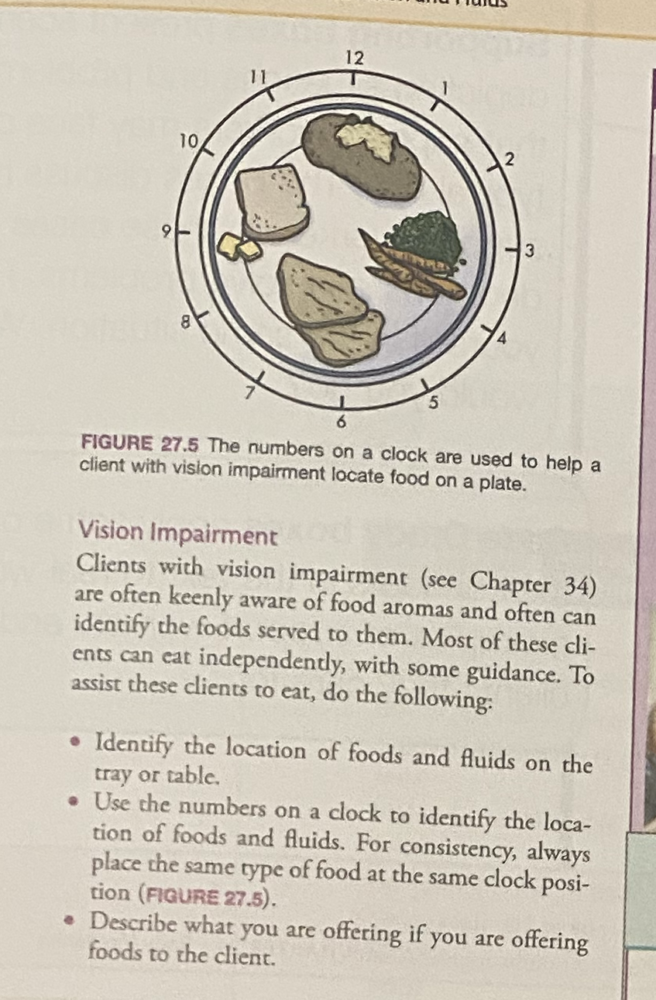
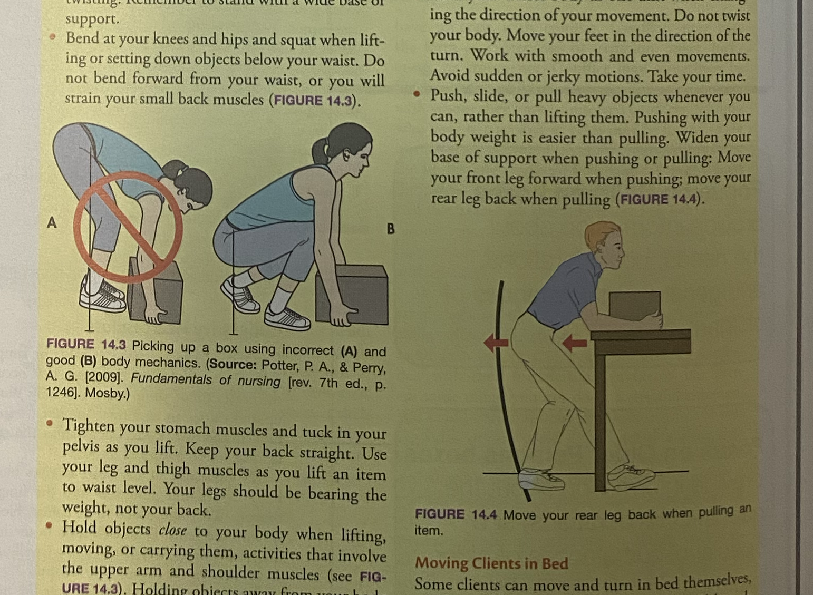
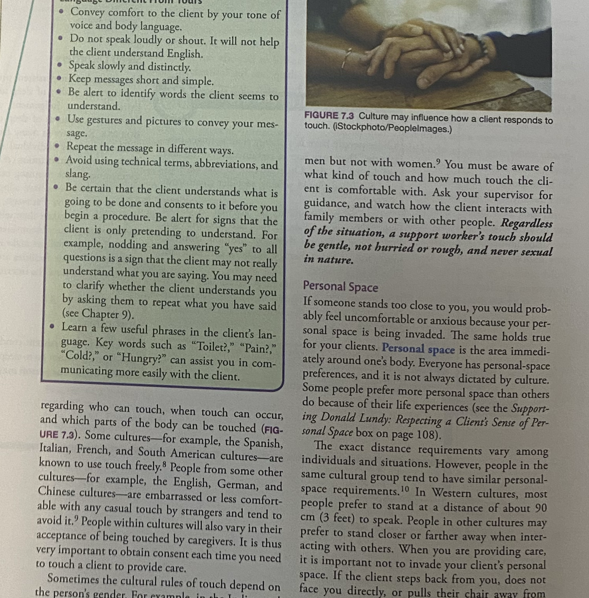

Sorrentino's CANADIAN TEXTBOOK for the SUPPORT WORKER Fifth Edition
Mary J. Wilk, RN, GNC(C), BA, BScN, MN Professor, Personal Support Worker Program, Fanshawe College, London, Ontario
Original Author:Sheila A. Sorrentino, PhD, RN Contributing Canadian Experts & Advisory Editors across Ontario, British Columbia, Alberta, and Atlantic Canada.
ELSEVIER
《索伦蒂诺加拿大支持工作者教材》 第 5 版
玛丽·J·维尔克（Mary J. Wilk） 注册护士（RN）、加拿大老年护理认证专家（GNC(C)）、文学士（BA）、护理学学士（BScN）、护理学硕士（MN） 加拿大安大略省伦敦市 范莎学院（Fanshawe College）个人支持工作者项目 教授
原著作者：席拉·A·索伦蒂诺（Sheila A. Sorrentino） 博士、注册护士 爱思唯尔（Elsevier Canada）出版公司
Evolve Student Resources
二、 Evolve 官方数字化学生学习资源
Evolve® — YOU'VE JUST PURCHASED MORE THAN A TEXTBOOK! Enhance your learning with Evolve Student Resources. The companion website for Sorrentino's Canadian Textbook for the Support Worker, 5th edition, offers valuable resources to help you succeed in your course and in clinical practice: - Audio Glossary: Pronunciations and definitions for hundreds of medical terms and key vocabulary words. - Interactive Practice Quizzes: Chapter-by-chapter multiple-choice quizzes to prepare for exams and provincial certification testing. - Clinical Skills Video Clips & Animations: Visual demonstration of complex patient care techniques and body mechanics. - Body Spectrum Electronic Anatomy Colouring Book: Interactive anatomical exploration of organ systems. - Procedure Checklists: Step-by-step competency evaluation rubrics matching provincial vocational learning outcomes.
Notice: The content and procedures in this book are based on information currently available. They were reviewed by instructors and practising professionals in various regions of Canada.
However, employer policies and procedures may vary from the information and procedures in this book. In addition, research and new information may require changes in standards and practices.
Standards and guidelines from Health Canada, provincial and territorial ministries of health, and regulatory colleges may change as new information becomes available.
Other guidelines, including those from public health agencies and employers, must always be followed in clinical practice.
The publisher and the author do not assume any responsibility for any injury and/or damage to persons or property arising out of or related to any use of the material contained in this book. It is the responsibility of the treating caregiver or health care worker, relying on independent professional judgment and working within their legal scope of practice under appropriate supervision, to determine the best approach for the client.
Neither the publisher nor the author is engaged in rendering medical, legal, or other professional services. If medical, legal, or other expert assistance is required, the services of a competent professional person should be sought.
出版商与作者对于因使用或参考本书所载材料而可能导致的人身伤害、财产损失或法律纠纷，概不承担任何法律责任。照护工作者有责任基于独立的专业谨慎判断，在取得合法授权、处于相应监管督导之下并在自身法定执业范围（Scope of Practice）之内，为服务对象制定并执行最为适宜的照护方案。
Background & Alignment With Canadian Vocational Standards
In keeping with the approach of previous editions, the fifth edition of Sorrentino's Canadian Textbook for the Support Worker serves the diverse needs of students and instructors in community colleges, private career colleges, school boards, and health care agencies across Canada.
Since the publication of the fourth edition, substantial changes have occurred in the Canadian health care landscape. Educational and vocational standards for support workers have been released both nationally and within various provinces. Furthermore, the role of support workers has expanded as health care systems shift focus toward community-based care, home support, and specialized long-term care for complex aging populations.
To reflect these standards and anticipated practice trends, this fifth edition has been rigorously updated, reorganized, and enriched with evidence-based research and clinical guidelines.
秉承历版教材严谨务实的学术与教学传统，《索伦蒂诺加拿大支持工作者教材》（第5版）致力于全方位满足加拿大各地公立社区学院（Community Colleges）、私立职业学院（Private Career Colleges）、公立教育局成人职业培训项目及各级卫生保健机构师生的多元化教学需求。
自本书第4版出版以来，加拿大整体医疗卫生体系经历了深刻的结构性变革。联邦及各省相继出台了全新的支持工作者国家职业标准与省级执业教育大纲。伴随着加拿大医疗卫生重心加速向“社区居家照护（Home & Community Care）”倾斜，以及长期照护院舍中高龄复杂慢性病患群体的激增，支持工作者的角色定位与临床技能要求得到了极大的拓展与深化。
【英文】 A stronger emphasis on understanding the role of support workers and their defined scope of practice under provincial legislation and employer policies. The text clearly demarcates what support workers are legally permitted to perform, tasks that require formal delegation by a regulated health professional (e.g., RN or RPN), and unauthorized procedures.
【中文】 更加鲜明地突出了支持工作者的法定执业范围（Scope of Practice）。严格依据各省卫生法规及雇主规章，清晰划定支持工作者被法律允许独立执行的基础照护、必须经由注册护士（RN）或注册实习护士（RPN/LPN）正式书面委派（Delegation）方可协助的受监管操作，以及严禁跨越的医疗红线，切实规避执业法律与医疗安全风险。
【英文】 Completely updated dementia care chapters reflecting clinical guidelines from the Alzheimer Society of Canada and evidence-based training models (such as Gentle Persuasive Approaches - GPA). Special focus is placed on recognizing that responsive behaviours are expressions of unmet physical, emotional, or environmental needs rather than intentional aggression.
【中文】 全面重写失智症（Dementia）专业照护章节，深度整合加拿大阿尔茨海默病协会（Alzheimer Society of Canada）的最新临床指南及广受推崇的温和劝导照护法（Gentle Persuasive Approaches, GPA）。重点引导学员深刻理解：失智症长者的所谓“问题行为/应对行为（Responsive Behaviours，如激越、抗拒照护、日落综合征等）”，本质上是其未被满足的生理痛苦、心理恐惧或环境不适的外在沟通表达，而非故意敌意，应当采取人本主义非药物安抚策略。
【英文】 Expanded content on cultural safety and cultural humility, honoring Canada's Truth and Reconciliation Commission (TRC) Calls to Action regarding Indigenous peoples (First Nations, Inuit, and Métis), as well as embracing Canada’s diverse multicultural, multilingual, and 2SLGBTQ+ communities.
【英文】 The DIPPS principles—Dignity, Independence, Preferences, Privacy, and Safety—serve as the moral and ethical compass throughout every clinical skill and patient interaction in the textbook.
5. 全人心理健康与创伤知情照护（Mental Health & Trauma-Informed Care）
【英文】 Modernized classification of mental health and substance-use disorders aligning with DSM-5 criteria, emphasizing stigma reduction, suicidal behaviour vigilance, and trauma-informed compassionate care approaches.
Front Matter · Student Preface · Pages xxii–xxixHigh-Yield Study System
Student Preface & Study Guidelines
第一部分：致未来的支持工作者
您的神圣使命与专业角色
Part 1: A Letter to the Student Support Worker
As a support worker, you are a very important member of the health care team because you probably spend more time with your clients than any other member of the team does. Team members rely on your observations, reports, and recordings, especially of any changes in a client.
Your clients and their families rely on you to provide professional and safe care. You and the care you give may be the bright spots in a client's day.
This book was designed to help you learn by using its special features, which are described on the following pages.
Since the last edition was published, educational and vocational standards for support workers have been released both nationally and within many provinces across Canada. To reflect these new standards, as well as anticipated practice trends, Sorrentino's Canadian Textbook for the Support Worker, fifth edition, has been thoroughly revised, updated, and reorganized to assist you, the student. Even after you graduate, the book will continue to be a useful and reliable resource to you in the field as you gain experience and expand your knowledge.
Part 2: The SQRRR Effective Study System for Healthcare Students
Your instructor will probably assign chapters or partial chapters from the textbook to read before or after class. When given a reading assignment, do you read from the first page to the last page without stopping?
How much of what you read do you remember? Using an efficient study system will help you understand and retain all the information that you read. A useful study system has these five essential steps:
1. Preview (Survey) 2. Question 3. Read and Record 4. Recite 5. Review
Before you start a reading assignment, preview or survey the assignment to get an idea of what it covers and to recall what you already know about the subject. Preview the chapter title, headings, subheadings, and terms or ideas in bold print or italics.
Also, survey the learning objectives, key terms, introductory paragraph, boxes, key points, and the review questions at the end of the chapter. Previewing takes only a few minutes. Remember, previewing helps you become familiar with the material.
After previewing, you need to form a list of questions to be answered as you read the material. Questions should relate to what might be asked on a test or how the information applies to giving care. Use the title, headings, and subheadings to form questions.
Avoid questions that have simple one-word answers. Questions that begin with what, how, or why are most helpful. While reading, if you find that a particular question does not help you understand and retain the material, change the question to make this step more useful.
Reading, which is the next step, is more productive after you have determined what you already know and what you need to learn. The purpose of reading is to: - Gain new information - Connect the new information to what you already know
Break the assignment into smaller parts, and as you read each part, try to find answers for the questions you had formulated earlier.
Also, mark important information in the text by underlining, highlighting, or making notes, which will remind you later what you need to go back to in order to review and learn. Making notes helps you remember what you have learned.
When making notes, write down important information in the text margins or in a notebook. Use words and summary statements that will jog your memory about the material.
After reading the assignment, in order to retain the information, you need to organize it into a study guide—in the form of diagrams, flowcharts, or concept maps that show relationships or steps in a process. Note-taking in outline format is also very useful.
读完一个章节后，为了长期保持记忆，建议将其整理为体系化的“学习指南”——例如绘制展示操作流程的前后步骤图、因果逻辑图或概念框架图。采用层级清晰的提纲式大纲（Outline Format）记录笔记同样极为高效： ` I. 一级主题大标题 (Main heading) 1. 二级分类标题 (Second-level heading) a. 三级要点与操作步骤 (Third-level heading) `
Recite and Review
步骤 4 与步骤 5：大声复述与周期复习
Recite: Finally, recite and review, using your notes and the study guide, by finding the answers for the questions you formed earlier and any others that may have come up during the reading and as you answered the review questions at the end of the chapter. Answer all questions out loud (recite). If you are unsure about the answers to any of the questions, consult your instructor or re-check the text.
Review: Reviewing is more about when to study than what to study.
You already decided what to study during the preview, question, and reading steps. Your instructor may have emphasized key points from the reading assignment in class. The best times to review both the information in your text and your notes from class are: 1. The same day or evening of the class 2. Right after your first study session 3. One week later 4. Regularly before a quiz, test, midterm, or final exam
Studying the information many times over spaced intervals will help transfer it into long-term clinical memory.
针对入户支持工作者（Home Support Worker），剖析在服务对象私人居所中如何因地制宜进行环境安全评估、尊重家庭习俗并独立开展照护。

图解展示：时钟表盘进餐引导法（Figure 27.5） *FIGURE 27.5: The numbers on a clock are used to help a visually impaired client locate food.* 【临床精义】针对视力障碍（视网膜病变、青光眼、白内障）长者，以时钟点位（例如：6点钟放米饭、10点钟放鸡肉、2点钟放青菜）告知食物位置，极大维护其自主进餐尊严与安全感。
5. 人体力学与安全防护（Body Mechanics & Safety）
医护人员职业健康保护机制，预防腰椎间盘突出与肌肉拉伤。

图解展示：正确与错误人体力学搬运示范（Figure 14.3 & 14.4） *FIGURE 14.3 & 14.4: Picking up a box using incorrect (A) and correct (B) posture; Move your rear leg back when pulling.* 【临床精义】屈膝下蹲、收紧核心、背部平直，利用大腿肌群发力，严禁弯腰代偿；推拉重物时扩大支撑面并向后撤后腿。
6. 多元文化包容与人际空间（Respecting Diversity & Cultural Safety）
适应加拿大移民多元社会，理解文化背景对身体接触、目光交流与个人空间的深远影响。

图解展示：文化敏感性与身体语言接触（Figure 7.3 & Personal Space） *FIGURE 7.3: Culture may influence how a client responds to touch.* —— 详细解析不同族裔关于个人距离（Personal Space）与身体接触的心理接受界限。
Canadian Support Worker Essential Glossary & Key Terms
Professional Identity & Healthcare System
一、 核心执业身份与医疗体系术语
Key Terms · 第 0 章核心专业术语表（全 7 词速查）
英文术语 / 国际音标
中文对照
教材标准学术释义与临床界定
Support Worker (PSW / HCA)
支持工作者 / 个人支持工作者 / 护工
在加拿大各省从事基层医疗卫生照护的专业从业者，为失去自理能力的长者、残障人士、急慢性病患提供日常生活照料与身心支持。在安省通称 Personal Support Worker (PSW)，在BC省及阿省多称 Health Care Assistant (HCA) 或 Health Care Aide。
在加拿大各省从事基层医疗卫生照护的专业从业者，为失去自理能力的长者、残障人士、急慢性病患提供日常生活照料与身心支持。在安省通称 Personal Support Worker (PSW)，在BC省及阿省多称 Health Care Assistant (HCA) 或 Health Care Aide。
Chapter 1 Full Text · Pages 1–18 UnabridgedSorrentino 5th Ed.
Page 1
Chapter 1 Opener & Learning Objectives
开篇导读与学习目标
Objectives
学习目标
After reading this chapter, the learner should be able to do the following: 1. Identify the role support workers play within the health care team. 2. Describe the goal of support work. 3. Differentiate between activities of daily living (ADLs) and instrumental activities of daily living (IADLs).
4. Describe the main responsibilities of the support worker. 5. Describe the importance of understanding the roles and responsibilities of support work. 6. Distinguish between regulated and unregulated health care providers.
7. Describe the significance of having a professional approach to support work. 8. Identify the things to consider when thinking critically and solving problems. 9. List the principles of client-centred care.
Support workers provide care and assistance to clients of any age who have defined health care needs and who require help with their daily activities, whether they live in a facility or in the community. Client is a general term for any person receiving care or support services in a community setting, such as hospital patients, facility residents, and clients in the community.
The ultimate goal of support work is to improve the quality of life of the client and family by offering client-centred care and support in a safe, kind, sensitive, caring, and understanding manner. Support workers can make a difference in people's lives by alleviating loneliness, providing empathy, ensuring comfort, encouraging independence, and promoting the client's self-respect (FIGURE 1.1). They support the client and family in a holistic manner by addressing the client's physical, psychological, social, cognitive, cultural, and spiritual needs and advocate for the client by speaking or acting on the client's behalf.
图 1.1 教学图示：支持工作者给予服务对象温情抚慰 *FIGURE 1.1: A support worker comforts a client. (iStockphoto/FG Trade.)* 【临床启示】体温般的肢体触碰与专注倾听，是消除机构长者孤独感、传递安全感最有力的非语言沟通工具。
Teamwork, Legislation, and Professional Discretion
团队协作、执业规制与专业严谨性
Support workers may work as part of a health care team or work individually with a client. Legislation, employer policies, and a client's condition all influence how support workers function and how much supervision they need.
They may collaborate with health care providers or with professionals outside of the health care sector, depending on the needs of their clients. Support workers must use discretion at all times and honour the client's right to confidentiality whenever discussing the client's case with co-workers. Support workers are expected to adapt their work style to the setting and to the needs and wishes of the client receiving care.
根据服务对象的实际需求，他们可能需要与专业医护人员协作，亦可能需要与医疗卫生体系之外的其他专业人士协作。在任何时候与同事探讨案情时，支持工作者都必须秉持高度的审慎明辨（Discretion），并恪守服务对象的隐私保密权（Right to Confidentiality）。支持工作者必须具备高度的专业灵活性，能够根据不同的工作环境以及受助个体的具体需求与意愿，敏锐调整自身的工作方式与服务风格。
Pages 3 - 4
第二节：支持工作在加拿大全境的职业现状与场所
Support Work Across Canada
加拿大各省职业称谓与现状差异
The nature of support work varies across the country. There are differences in educational programs, work settings, job responsibilities, and terms used to describe support workers. Some sections of this text may not apply to support work in your particular city, province, or territory.
If you are unsure about which parts apply to your area, ask your instructor or employer.
The term support worker refers to the worker who provides personal care and support services. However, assisted-living worker, personal support worker, personal attendant, patient care assistant, resident care aide, resident care attendant, health care aide, home care attendant, home support worker, nursing aide, nursing attendant, community health worker, or continuing care assistant—among other titles—may be used in your province or territory to describe similar (but not always equivalent) jobs. The Appendix at the end of this book lists the support worker's titles in each province and territory. Because of the wide variety of titles, the general public may not be aware of what support workers are called in their own province or territory or even within a facility they use.
“支持工作者”（Support Worker）是一个统称，特指提供个人照护与支持服务的专业从业人员。然而，在各个省份或地区，可能会使用以下头衔来描述类似（但并非完全等同）的岗位：辅助生活护理员（Assisted-living worker）、个人支持工作者（Personal support worker, PSW）、私人照护员（Personal attendant）、病患照护助理（Patient care assistant）、院舍照护助理（Resident care aide）、院舍照护员（Resident care attendant）、医疗保健照料员（Health care aide, HCA）、居家护理员（Home care attendant）、居家支持工作者（Home support worker）、护理助理（Nursing aide）、护士助手（Nursing attendant）、社区卫生工作者（Community health worker）或持续照料助理（Continuing care assistant, CCA）等。本书文末的附录详细汇总列出了各个省与地区对该岗位的官方头衔。
It is the role of support workers, their employing agencies, other health care providers, and their province's or territory's Ministry of Health to inform others of their role and how it fits in their current health care structure.
This list may also include several titles that are not equivalent to one another. For example, in Ontario, developmental service workers (DSWs) play a different role and follow different educational standards than personal support workers (PSWs), and yet both are considered to be support workers within the health care team. In some parts of Canada, the term personal attendant refers to a worker who is supervised directly by the person for whom they provide support services; personal attendants support people with physical disabilities. Educational programs to become a personal attendant are generally shorter than those for support workers.
支持工作者本人、其受雇机构、医疗团队中的其他医护人员以及各省和地区的卫生厅（Ministry of Health），均肩负着向社会大众普及该岗位职责及其在当前医疗卫生体系中定位的宣教责任。
需要特别指出的是，上述列出的诸多头衔之间并不能直接划等号。例如在安大略省，“发育障碍服务工作者”（Developmental Service Worker, DSW）与“个人支持工作者”（PSW）承担不同的职责角色，遵循完全不同的教育培训标准，但两者均被视为跨学科医疗团队中的支持工作者。在加拿大的某些地区，“私人照护员”（Personal Attendant）特指直接由接受服务者本人进行管理与督导的工作人员；私人照护员专门为肢体残疾人士提供生活支持，其成为私人照护员的培训课程时长通常明显短于标准支持工作者。
Workplace Settings & "Eyes and Ears"
多元化工作场所与主管督导者的“眼睛和耳朵”
Support workers work in a variety of settings (see Chapter 3 for definitions and details of workplace settings). In all settings, support workers ensure the safety of their clients, including those who are living with cognitive or mental health challenges.
Services provided by support workers to clients in their homes can enable some clients to live independently or with their families. Support workers may also assist clients with social support, or social reintegration, as they prepare to move into an assisted-living facility or group home.
当案主准备入住辅助生活设施（Assisted-living facility）或集体居所（Group home）时，支持工作者还会协助案主获得社交支持或实现社会功能重聚融入（Social reintegration）。在长期照护院舍（Long-term care facilities）中，支持工作者协助患有复杂重度健康挑战的长者；他们亦为处于生命弥留阶段的垂危病患提供安宁抚慰与临终关怀，确保长者能够怀抱尊严安详离世。
In long-term care facilities, support workers assist clients with complex health challenges. Support workers also provide comfort and end-of-life care to dying clients so that they can die with dignity.
They are often the supervisor's "eyes and ears," meaning that because they are the person who spends the most time with the client, they are most likely to observe or hear things that should be reported to the supervisor, who may be a nurse or another type of health care worker. Observing and reporting are very important parts of the support worker's role and can have a great impact on a client's care.
Support workers may have to consult with other health care providers, such as social workers or physiotherapists, and may also have to consult with other professionals, such as the client's employers, clergy, or teachers, depending on the client's individual care plan.
支持工作者往往是临床督导护士的“眼睛和耳朵”（"Eyes and Ears"）：这意味着，由于支持工作者是与服务对象朝夕相处、陪伴时间最长的专业人员，他们最有可能第一时间观察到或听到需要向上级督导汇报的异常体征与病情变化——督导人员可能是注册护士或另一类专业医疗照护人员。敏锐的观察（Observing）与严谨的汇报（Reporting）是支持工作者角色中举足轻重的组成部分，对服务对象的照护质量与生命安全有着深远影响。
A support worker's general responsibilities, depending on the jurisdiction in which they work, can be grouped into six categories: (1) personal care, (2) support for nurses and other health care providers, (3) family support, (4) social support, (5) housekeeping or home management, and (6) documenting and reporting any basic assessments, observations, and care provided in the client's record or chart.
根据支持工作者所执业的司法辖区（所在省份或地区），其日常通用工作职责大体可归纳为六大核心范畴： 1. 个人生活照料（Personal care）； 2. 协助护士及其他医疗卫生团队成员（Support for nurses and other health care providers）； 3. 家庭系统支持（Family support）； 4. 社交与人际支持（Social support）； 5. 家务清洁或家居管理（Housekeeping or home management）； 6. 在案主病历档案中记录并汇报所提供的基础评估、观察所见及照护措施（Documenting and reporting any basic assessments, observations, and care provided）。
Personal Care: ADLs & IADLs
1. 个人生活照料：ADLs 与 IADLs
Personal care responsibilities include assisting with activities of daily living (ADLs). These are the self-care actions that people perform every day to remain independent and to function effectively in society.
个人生活照护职责包括协助服务对象完成基础日常生活活动（Activities of Daily Living, ADLs）。这些是人们为了维持自立生存并在社会中正常行使机能而每天必须执行的基本自我照料行为。支持工作者协助完成诸如进食（Eating）、沐浴（Bathing）、梳理修饰（Grooming）、穿衣（Dressing）以及如厕排泄（Toileting / Elimination）等日常活动。
Support workers help with daily activities such as eating, bathing, grooming, dressing, and toileting ("elimination"). They assist clients with limited mobility to change positions or move from one place to another and also help promote the client's safety and physical comfort.
In community settings, support workers also assist clients with instrumental activities of daily living (IADLs), which are the complex and necessary skills needed to successfully live independently.
在社区入户环境中，支持工作者还会协助案主完成工具性日常生活活动（Instrumental Activities of Daily Living, IADLs）。这些是维持在社区中独立生活所必需的复杂高阶生活技能，包括：协助案主管理日常财务收支、协助服药管理（按医嘱服药）、安排交通出行、外出采购食品杂物、烹饪配制健康餐食、协助使用电话或其他通讯设备，以及操持日常家务和基本房屋维护保养。
These IADLs may include assisting the client with handling finances, assisting with management of medications, arranging transportation, shopping, preparing meals, assisting with using a telephone or other communication devices, and doing housework and basic home maintenance.
The support worker is not responsible for deciding what should or should not be done for the client. However, while providing personal care, the support worker observes for and reports any changes in the client's behaviour or health. Such information is important to share with the appropriate person (either the charge nurse or the client's primary care nurse).
支持工作者没有权力擅自决定应当为案主做什么或不该做什么（必须严格遵照医嘱与照护计划）。然而，在提供个人照护的过程中，支持工作者必须敏锐观察并及时汇报服务对象在行为表现或健康状态上的任何细微变化。将这些宝贵信息第一时间共享给对口负责人（病区主管护士 Charge Nurse 或案主的责任护士 Primary Care Nurse），对保障照护安全具有决定性意义。
Support for Nurses and Other Providers
2. 协助护士与其他医护人员
Support workers assist nurses or other health care team members by following the established care plan for each client; for instance, they may be required to clean equipment, measure and report vital signs, or assist with simple wound care. Support workers might also assist with oxygen therapy, heat or cold applications, and range-of-motion (ROM) exercises.
支持工作者通过严格执行为每位服务对象量身定制的既定照护计划（Established Care Plan），全力协助护士及其他医疗团队成员；例如，他们可能会被要求清洗消毒医疗辅助器材、测量并记录汇报生命体征（体温、脉搏、呼吸、血压）、或协助进行简单无菌伤口换药照料。在经过专门技能培训并获授权委派的情形下，支持工作者还可能协助实施氧气吸入疗法（Oxygen therapy）、冷热敷物理治疗应用（Heat or cold applications）以及关节活动度康复训练（Range-of-motion / ROM exercises）。
Family Support
3. 家庭系统支持
In many facilities, support workers assist with admissions and discharges by introducing the client and family to the facility and helping the client unpack and settle in. In private homes, support workers help families care for loved ones who are living with health issues or need assistance with ADLs.
Some families may need help with preparing meals and doing household chores; other families may need help with child care. Support worker services often give family caregivers a break from their duties.
Support workers may help clients participate in social activities. These activities provide the client with enjoyment, recreation, and a chance to meet with friends.
They may organize games and outings or may be hired privately to be a client's companion. Support workers may also be responsible for teaching clients to learn to live independently and to cook, clean, or shop by themselves.
Support workers often do a variety of housekeeping tasks in a facility setting, including making beds, delivering meals, tidying up living areas, and maintaining supplies. In a private home, housekeeping is called home management.
Services depend on the needs of the person and the resources available to provide these services. Duties may include assisting clients with their IADLs, doing light housekeeping, doing laundry, and preparing and serving nutritious meals.
As part of their professional accountability, all health care workers are legally responsible for reporting and documenting any client care they provide, as well as basic assessments and important observations about their clients. Examples of basic assessments or observations include if the client complains of pain, or if they refuse to eat.
Understanding what is important to report is part of the support worker's need to think critically (see page 13). Depending on the agency, documentation may be in a written or electronic format (see Chapter 26).
The A Day in the Life boxes on pages 5-9 describe three support workers' typical workdays—in the community, in a long-term care facility, and in a hospital setting. In each box, the word nurse may mean registered nurse (RN), registered practical nurse (RPN), or licensed practical nurse (LPN), depending on the staffing policies of that particular agency.
原书第 5 至 9 页所呈现的“支持工作者的一天”（A Day in the Life）真实案例模块，详尽生动地记录了三位支持工作者在不同临床场景下的典型一日实操记录——分别涵盖社区入户环境、长期照护院舍环境以及综合医院病区环境。在各个案例中，出现的“护士”（Nurse）一词根据具体机构的岗位编制政策，可能代表注册护士（RN）、注册实用护士（RPN）或执照实用护士（LPN）。
Pages 5 - 9
第四节：支持工作者真实一日工作实录
NOTE on Timeframes
临床实操时间节点说明
NOTE: The timeframes stated below are approximate times only. The actual amount of time to complete the work stated may vary according to a support worker's assigned workload, a client's changing state of health, or staffing shortages.
A Day in the Life of a Support Worker: In the Community / Home Care
场景 1：社区入户照护 —— 史蒂芬的一天
In the Community (Home Care)
Each evening, Stephen receives his assignment for the next day from his supervisor. He uses the details in the assignment to plan his day. He consults a city map and plans his route. The people he is assigned to visit are living with a range of physical, emotional, and social issues and disabilities. Their major issues are briefly described below.
- Ms. Lau, 32, is living with cerebral palsy. She uses a wheelchair.
She lives alone. Two days per week, she works outside the home. She receives home care to help her prepare for work. - Mr. O'Connor, 59, is recovering at home from a stroke. He is paralyzed on one side of his body and has a speech-language disorder. His wife is his primary caregiver. Mr. O'Connor receives home care three mornings a week. Mrs. O'Connor, 51, is at work during Stephen's visit. - Mr. Horowitz, 71, is living with dementia. His wife, 67, is caring for him at home.
The couple gets emotional and social support from family and friends. Mrs. Horowitz looks after her husband's personal care needs. They receive 2 hours of home care per week to give Mrs. Horowitz a break. - Ms. Adams, 25, is a single mother on social assistance. She is recovering from a Caesarean section. She gets very little social and emotional support. She has newborn twins and three young children aged 1, 3, and 4 years.
Below are the tasks and activities that Stephen performs on a typical day at work. At all times he provides emotional support and provides care that is client centred.
- 0715 to 0830 hours (7:15 a.m. to 8:30 a.m.) • Travels to first appointment; arrives at 0730 hours • Assists Ms. Lau with showering, grooming, and dressing • Helps Ms. Lau to prepare breakfast, clean up kitchen, and make bed • Records care provided, including any relevant observations
- 0830 to 1000 hours (8:30 a.m. to 10:00 a.m.) • Travels to next appointment; arrives at 0900 hours • Assists Mr. O'Connor with elimination, bathing, shaving, hair care, and mouth care • Prepares breakfast for Mr. O'Connor and assists him with eating • Cleans up kitchen and makes bed • Takes Mr. O'Connor for a brief walk; he is learning to walk with a cane • Assists Mr. O'Connor with elimination again • Records care provided, including any relevant observations
- 1000 to 1215 hours (10:00 a.m. to 12:15 p.m.) • Travels to next appointment; arrives at 1015 hours • Listens to Mrs. Horowitz, who is crying and says she is "worn out; telephones supervisor, who, in turn, calls the Horowitzes' case manager; case manager schedules a visit • Assists Mr. Horowitz with elimination, bathing, shaving, hair care, and mouth care • Cleans kitchen and does light housework in main living areas • Prepares lunch for Mr. Horowitz and assists him with eating • Records care provided, including any relevant observations
- 1215 to 1530 hours (12:15 p.m. to 3:30 p.m.) • Takes break for lunch • Travels to next appointment; arrives at 1330 hours, the same time as the public health nurse • Helps children wash faces and hands • Prepares lunch for Ms. Adams and the three older children while the nurse assists Ms. Adams with breastfeeding the infants; feeds 1-year-old • Helps children with oral hygiene after lunch • Prepares three dinners; leaves one in the refrigerator and the others in the freezer • Records care provided, including any relevant observations • Reports observations from the day to nurse supervisor (would report unusual findings immediately throughout the day to supervisor) • Drives home
A Day in the Life of a Support Worker: In a Long-Term Care Facility
场景 2：长期照护院舍 —— 克莱尔的一天
In a Long-Term Care Facility
Claire works on a unit in which the residents, mostly older people, require help with ADLs. The eight residents assigned to her live with a range of physical, emotional, and social issues and disabilities.
- Miss McDonald, 94, lives with a partial disability due to rheumatoid arthritis. - Mr. Schmidt, 82, is recovering from surgery. He lives with urinary incontinence, which causes him anxiety. - Mrs. Lawson, 88, is living with a heart condition and osteoarthritis. - Mr. Delgado, 63, has been paralyzed on one side following a stroke.
He is unable to speak but is able to understand both written and spoken language. - Mr. Taylor, 71, is living with the early stages of Parkinson's disease. He has diabetes and poor vision as well. - Mrs. Sanchez, 81, is partially disabled due to multiple leg and hip fractures. She lives with osteoporosis.
She is also depressed. - Mr. Bouchard, 89, is recovering from pneumonia. He has age-related hearing impairment. - Mrs. Khan, 44, is living with severe disability from multiple sclerosis. She lives with urinary and fecal incontinence.
Below are the tasks and activities that Claire performs on a typical day at work. At all times she provides emotional support and provides care that is client centred.
- 0700 to 0715 hours (7:00 a.m. to 7:15 a.m.) • Receives report from nurse on the conditions of all residents on the unit • Receives assignment of care requirements, appointments, and activities scheduled for residents • Plans morning's tasks and activities
- 0715 to 0845 hours (7:15 a.m. to 8:45 a.m.) • Helps seven of the residents get out of bed • Provides partial hygiene care to six residents, a shower for one resident, and a tub bath for another • Assists with elimination and changes their incontinence briefs • Assists residents with dressing and accompanies them to the dining room • Returns to the unit; provides partial hygiene to Mrs. Khan • Observes that the cut on Mrs. Khan's arm looks red and swollen and feels warm to the touch; makes a written record of it and gives a verbal report to the nurse • With help from another support worker, moves Mrs. Khan from her bed to a wheelchair • Transports Mrs. Khan to the dining room for breakfast • Records care provided, including any relevant observations
- 0845 to 0930 hours (8:45 a.m. to 9:30 a.m.) • Assists residents with breakfast, ensuring that all have a nutritious breakfast and that special diets are followed • Encourages Mr. Taylor, Mrs. Lawson, and Miss McDonald to eat • Assists Mrs. Khan with eating; transports Mrs. Khan back to her unit • Returns to dining room and accompanies other residents back to their units • Records each resident's dietary intake in dietary intake record • Records care provided, including any relevant observations
- 0930 to 1130 hours (9:30 a.m. to 11:30 a.m.) • Reports to nurse that Mr. Taylor (who has diabetes) did not eat • With assistance, lifts Mrs. Khan and settles her in bed • Assists residents with mouth care and elimination; changes their incontinence briefs • Reports on the conditions of residents to replacement support worker; takes a 15-minute break • Completes hygiene and grooming care for residents who received only partial care before breakfast • At 1030 hours, accompanies residents to games room • Makes beds and changes linens • Repositions Mrs. Khan in bed to prevent pressure ulcers • Tidies rooms and living areas • At 1130 hours, accompanies residents back to their units from games room
- 1130 to 1300 hours (11:30 a.m. to 1:00 p.m.) • Reports on the conditions of residents to replacement support worker; takes a 30-minute break for lunch • Checks care requirements for each resident and plans the afternoon's tasks and activities • Accompanies residents to the dining room • Supervises residents and assists with feeding, as required • Accompanies residents back to their units • Assists residents with elimination and changes their incontinence briefs • Assists with mouth care • Makes sure that residents rest after lunch, as directed • Records each resident's dietary intake in dietary intake record • Records care provided, including any relevant observations
- 1300 to 1500 hours (1:00 p.m. to 3:00 p.m.) • Assists residents with elimination and changes their incontinence briefs • Greets new resident, Mrs. Griffiths, and her family; introduces them to the facility; assists Mrs. Griffiths with unpacking • Introduces Mrs. Griffiths to other residents • Repositions Mrs. Khan • Comforts Mrs. Griffiths, who is feeling upset and lonely • Takes Mrs. Sanchez and Mrs. Griffiths for a walk • Assists residents with elimination and changes their incontinence briefs • Records care provided, including any relevant observations • Provides a verbal report to the nurse concerning each client's care
A Day in the Life of a Support Worker: In a Hospital
场景 3：综合医院急性外科病房 —— 吉娜的一天
In a Hospital
Gina works on a surgical unit, which is one type of acute care. Most clients on this unit have had surgery for fractures (broken bones). Others have had hip- or knee-replacement surgery. A few are waiting for their surgery.
Many of these clients are living with additional health issues. Gina assists with the care of 10 clients.
- Miss Kwan, 66, sustained a thigh bone (femur) fracture. - Mr. McDuff, 76, sustained a recent spine fracture and lives with osteoporosis. - Mrs. Sadiq, 46, sustained shoulder and rib fractures, and lives with osteoporosis and quadriplegia. - Mrs. Clark, 85, sustained a hip fracture. She lives with osteoporosis and Alzheimer's disease. - Mr. Keene, 44, sustained fractures in the thigh bone and left knee. - Mr. Cross, 55, has had a knee replacement. He lives with arthritis. - Mrs. Pocza, 82, has sustained a hip fracture and lives with osteoporosis. - Ms. Hill, 35, has sustained multiple fractures involving her spine, thigh bone, and ankle. - Mrs. Leblanc, 74, has had a hip replacement.
She also lives with diabetes. - Mr. Paes, 82, has sustained a hip fracture. He also lives with hearing impairment.
Below are the tasks and activities that Gina performs on a typical day at work. At all times she provides emotional support and provides care that is client centred.
- 0700 to 0710 hours (7:00 a.m. to 7:10 a.m.) • Receives assignment on care requirements • Plans morning's tasks and activities
- 0710 to 0800 hours (7:10 a.m. to 8:00 a.m.) • Provides hygiene care to four clients, including assisting with oral hygiene and hair care and providing partial bed baths • Assists with elimination • Records care provided, including any relevant observations
- 0800 to 0845 hours (8:00 a.m. to 8:45 a.m.) • Accompanies dietary staff as they deliver breakfast trays • Positions and arranges trays for clients; assists clients with eating • Listens to Mrs. Pocza's concerns about her surgery; calls for the nurse, who answers Mrs. Pocza's questions • Records clients' food and fluid intakes • Assists clients with elimination • Records care provided, including any relevant observations
- 0845 to 1130 hours (8:45 a.m. to 11:30 a.m.) • Assists clients with hygiene, elimination, showers, and baths, as required • Reports on the conditions of clients and care requirements to replacement support worker; takes a 15-minute break • Makes and changes beds • Assists with two discharges; helps clients pack • Helps nurse to reposition clients, as required • Assists clients with leg exercises and coughing and deep-breathing exercises • Records care provided, including any relevant observations
- 1130 to 1300 hours (11:30 a.m. to 1:00 p.m.) • Reports on the conditions of clients and care requirements to replacement support worker; takes a 30-minute break for lunch • Checks the condition and care requirements of each client and plans afternoon tasks • Accompanies dietary staff as they deliver lunch trays • Positions and arranges trays for clients; assists clients with eating • Observes that Mr. McDuff's intravenous (IV) fluid is running low; notifies nurse immediately • Records food and fluid intakes • Assists clients with elimination and mouth care • Records care provided, including any relevant observations
- 1300 to 1500 hours (1:00 p.m. to 3:00 p.m.) • Removes Mr. Paes's dentures before his medications are given • Assists clients with elimination • Observes drainage under Miss Kwan's cast; notifies nurse immediately • Answers call from nurse; provides comfort to Mrs. Clark, who is upset • Assists clients with leg exercises and coughing and deep-breathing exercises • Assists with admitting two clients • Helps nurse reposition clients, as required • Records care provided, including any relevant observations • Provides a verbal report to the nurse who is responsible for each of these clients
(NOTE: In many hospitals, a client is assigned to a primary care nurse. A support worker might be assigned to help care for the clients of several nurses so would have to report observations about the clients he or she works with to each client's primary care nurse.)
【医院责任制整体护理与层级汇报模式注解】
*(NOTE: In many hospitals, a client is assigned to a primary care nurse. A support worker might be assigned to help care for the clients of several nurses so would have to report observations about the clients he or she works with to each client's primary care nurse.)*
【原书临床机制解析】在加拿大诸多大型医院中，病患普遍采用“责任制责任护士”（Primary Care Nurse）进行专案管理。一名支持工作者通常被同时指派协助多名不同责任护士所管辖的患者。因此，支持工作者必须清晰明确每位患者对应的责任护士是谁，并将其全天观察到的病人体征与异常准确交接给该患者各自的专责护士，杜绝推诿遗漏。
Pages 9 - 10
第五节：受助人群类别与服务对象全景
People Who Receive Support Services
受助人群的通用专业称谓
People receiving health care and support services are known by different terms, depending on the setting. A person receiving care in a hospital is usually called a patient. A person living in a live-in facility is called a resident.
A person receiving care or support services in the community is called a client. Client is also an all-encompassing term for people receiving health care or support services: hospital patients, facility residents, and clients in the community.
Whether the individual receiving care is known as a client, patient, or resident, always remember that he or she is a person. Every person is unique, with unique life experiences and situations, desires and opinions. Each will have different needs and different abilities.
Support workers work with people from a variety of cultures or backgrounds (see Chapter 7). Part of the support worker's job is to accept this diversity among people. The Respecting Diversity boxes that appear throughout this text outline the importance of diversity and how people's backgrounds influence who they are and what they do.
Nine Categories of Clients Grouped by Issues, Needs, and Ages
加拿大受助人群的九大核心类别
Clients can be grouped according to their issues, needs, and ages:
- Older persons. Aging is a normal process and is not an illness or disease. Many older persons enjoy good health. However, body changes normally occur with the aging process. Social and emotional changes may also occur (see Chapter 43). The risks for contracting serious illnesses and becoming disabled increase with age. Most older persons remain at home as long as possible. Others are unable to manage even with assistance and move into a live-in facility. Throughout the text, issues relevant to older persons are discussed. - People with disabilities. Some people are living with disabilities due to illness, injury, or conditions present at birth. Disabilities may affect physical functioning, mental functioning, or both. Many adults with disabilities live in their own homes.
根据受助个体的健康问题、照护需求与年龄跨度，服务对象可清晰归纳为九大核心类别：
- 老年人群（Older persons）：衰老是一个不可逆转的正常生理过程，其本身绝非一种病态或疾病。许多老年人身体康健、精神矍铄。然而，机体生理结构的衰退性改变会随着增龄自然发生，社会人际与心理情绪的变化亦往往随之而来（详见第 43 章老年照护）。随着年龄增长，罹患急慢性严重疾病与出现失能的风险显著上升。绝大多数长者都渴望尽可能长久地留在家中生活；一部分长者在即便有外力协助下仍无法安全维持自理时，才会选择入住寄宿型长照机构。全书各章节将对长者照护展开系统阐述。- 残障 / 残疾人士（People with disabilities）：一部分群体因罹患重病、意外创伤或先天性发育异常而生活在残障状态之中。残疾可能损害其躯体运动机能、心理智力机能，或二者兼有。许多成年残障人士完全能够居住在自己的私人住所中，甚至正常外出工作。支持工作者可以协助残障案主完成其日常生活活动（ADLs），或承担康复训练职责，教会他们如何独立执行这些自我照护技能。- 内外科医疗疾患人士（People with medical issues）：医疗疾患涵盖各种急性病、慢性疾病及外伤创伤。
Many work outside their homes. Support workers might help clients living with disabilities with their ADLs or might be responsible for teaching them how to perform the ADLs independently. - People with medical issues. Medical issues include illnesses, diseases, and injuries. These may include short-term (such as a broken bone), long-term (such as diabetes or multiple sclerosis), or progressive and life-threatening (such as some types of cancer) issues. - People having surgery. Surgical clients are those being prepared for surgery or who have recently had surgery. Preoperative care includes preparing the client for what to expect after surgery and addressing the client's fears and anxieties. Needs after surgery relate to relieving pain and discomfort, preventing complications, and helping the client adjust to body changes. People recover from surgeries in hospitals or in their homes. - People with mental health issues. Mental health issues range from mild to severe. Some people function normally but need help making decisions or coping with life stresses. Others are severely affected and need assistance with ADLs. - People needing rehabilitation. Rehabilitation is the process of restoring a person to the highest possible level of functioning through the use of therapy, exercise, or other methods. The person may need to regain functions lost due to surgery, illness, or accident. Some hospitals have special rehabilitation units. Many people receiving support at home and in long-term care settings require rehabilitation. - Children. When hospital care is needed, children are admitted to the pediatric unit.
按病程可划分为短期突发性问题（如单处骨折）、长期慢性慢性病（如糖尿病、多发性硬化症），或是进行性恶化、危及生命的重症（如某些类型的晚期恶性肿瘤）。- 围手术期外科手术患者（People having surgery）：外科手术患者包括正在接受术前准备的案主，或刚完成外科手术的术后病患。术前护理（Preoperative care）的核心在于让患者提前知晓术后康复流程、缓解其内心的恐惧与濒死焦虑；术后照护的重点则在于有效缓解疼痛与身体不适、积极预防肺栓塞及压疮等严重并发症，并协助患者逐步适应机体结构的术后改变。手术康复既可在医院病房内进行，亦可在患者家中展开。- 心理与精神健康障碍人士（People with mental health issues）：心理精神健康问题的严重程度从轻微的情绪失调跨越到重度精神障碍。一部分案主在日常生活中能够维持正常社会机能，但在重大决策或应对生活极端压力事件时需要外力心理支持；另一部分严重受损的重症患者，则连最基本的进食穿衣等 ADLs 均需要全面协助。- 需要康复治疗的人士（People needing rehabilitation）：康复（Rehabilitation）是指通过物理治疗、运动疗法、作业治疗或其他专科康复手段，将个体的身心功能恢复至其“所能达到的最高机能状态”的动态治疗过程。案主往往需要重新赢回因手术创伤、严重疾患或意外事故所丧失的肢体或言语功能。部分医院设立有专门的康复医学病区；在居家社区及长期照护机构中，大量长者与案主都需要持续接受康复支持。- 儿童与儿科患者（Children）：当儿童患病需要住院救治时，会收治于医院儿科病房（Pediatric Unit）。在加拿大某些省份或地区，医院儿科病房会聘请支持工作者协助照料患儿（参见图 1.2）。
In some areas of Canada, support workers are hired to work in pediatric units (FIGURE 1.2). However, most support work for children occurs in community settings and long-term care facilities. Some children who receive care are living with physical or intellectual disabilities. Others need care because a parent has a medical challenge or has just had a new baby. The Focus on Children boxes and Chapter 42 discuss issues related to caring for children. - Birth parents and newborns. Complications and difficulties can occur at any time during pregnancy and even up to 6 to 8 weeks following childbirth. Some new birth parents need assistance with their own care or with their newborn's care. Most support work with birth parents and newborns takes place in the home (see Chapter 41). - People requiring special care. Some people who have serious and complex medical conditions need special care and equipment. Hospitals have special care units, including critical care units, coronary care units, kidney dialysis units, burn units, and emergency departments. In some areas of Canada, support workers are hired to work in these units. Support workers might transport people from one unit to another; take specimens to the lab; assist clients with bathing, feeding, mobility, or toileting; and assist other health care providers with special procedures. In some parts of Canada, support workers are not allowed to provide personal care to clients in unstable or critical conditions.
然而，绝大多数针对儿童的支持服务发生在社区家庭或长期照护设施中。接受照护的儿童一部分患有先天性躯体或智力缺陷；另一部分儿童则是因为其父母突遭重病瘫痪，或家中刚刚迎来新生儿而需要协助照料大龄幼儿。全书设立的“聚焦儿童照护”（Focus on Children）专栏及第 42 章将对儿童照护展开深入剖析。- 产妇与新生儿群体（Birth parents and newborns）：在整个妊娠期乃至产后 6 至 8 周的产褥期内，随时可能出现严重的产科并发症与育儿困难。一部分新手产妇在产后自我身体复原或新生儿哺乳抚育上亟需外力协助。支持工作者对产妇和新生儿的支持工作绝大部分在家庭环境中实施（详见第 41 章母婴照护）。- 需要重症特级监护的特殊病患（People requiring special care）：患有极其严重且复杂的内外科病情的危重症个体，需要全天候严密监护与精密医疗设备支持。综合医院设立有一系列专科重症监护单元，包括重症监护病房（ICU/Critical Care Unit）、冠心病重症监护室（CCU）、血液透析室（Kidney Dialysis Unit）、烧伤救治病区（Burn Unit）及急诊抢救室（Emergency Department）。在加拿大某些省份，医院会聘请支持工作者在这些重症科室工作。支持工作者的职责可能包括：在科室之间安全转运重症病患、运送关键血标本至中心实验室、协助患者完成皮肤擦浴、喂食、体位移动或排泄，以及协助专科医生和护士开展复杂的专科诊疗操作。在加拿大某些管辖区，法律严格规定严禁支持工作者对处于生命体征极其不稳定或处于病危垂死状态下的患者独立提供个人照料。
图 1.2 教学图示：支持工作者在医疗机构中关爱呵护患病儿童 *FIGURE 1.2: A support worker provides care to a sick child. (iStockphoto/FatCamera.)* 【临床启示】儿童绝非缩小的成人；与患儿沟通需保持视线平视、运用充满童趣的温和语言，在协助治疗的同时守护患儿的心理安全感。
Page 10
第六节：受监管医护人员与未受监管照护者
The Health Care Team
医疗卫生照护团队的本质
A team is a group of people working together toward a common goal. Health care teams include professionals with a variety of skills and knowledge who work together to meet the client's needs. Their goal is to provide quality care.
Many professionals, including support workers, are involved in the care of one client. Which professionals are involved depends on the needs of the client.
Health care professions are either regulated or unregulated. A regulated profession is self-governing. It has a professional organization called a college, which sets education and licence requirements.
医疗卫生保健行业中的工种被清晰划分为两大法定类别：受监管职业（Regulated Professions）与未受监管照护人员（Unregulated Care Providers, UCPs）。
1. 受监管专业医护人员（Regulated Workers）： 受监管职业具备法定“行业自我管理权（Self-governing）”。每个受监管行业都依法设立有省级法定的专业行业公会（称为 College，如安大略省护士公会 CNO、内外科医师公会 CPSO 等），由公会统一步署该工种的教育准入大纲和执业发牌考试要求。行业公会负责制定其会员的法定执业范围（Scope of practice）、职业伦理准则（Code of ethics）以及执业行为规范（Standards of conduct）。
It also establishes the scope of practice, code of ethics, and standards of conduct for its members. In the case of a complaint about a member's conduct, the college investigates and, if necessary, disciplines members guilty of misconduct. Each regulated health care profession has legislation that details the roles and responsibilities of its members. Nursing is one of many regulated health care professions.
Unregulated care providers (UCPs) are health care providers who perform clearly identified services under the direction and supervision of a client, family member, regulated health care provider, or employer.
2. 未受监管照护提供者（Unregulated Care Providers, UCPs）： 未受立法监管照护者是指在服务对象本人、家属、受监管医护人员（如督导护士）或受雇机构的管理与督导下，执行明确生活支持与照料任务的健康照料从业人员。
However, UCPs are not regulated through legislation and are not members of an organization or professional college that governs their role. While UCPs do not currently follow any official code of ethics, they must adhere to the codes of behaviour dictated by their employers (see Chapter 4, Box 4.1, for A Sample Code of Ethics for Support Workers, on page 51). At this point, support workers in most provinces and territories are considered to be UCPs.
TABLE 1.1 describes the titles and positions of the common health care team members. It also specifies whether they are regulated or unregulated workers.
Assists Indigenous clients; provides education on diabetes prevention and management; provides guidance on self-care management; facilitates discharges from and admissions to health care facilities; organizes services. （协助加拿大原住民服务对象；提供糖尿病防治与健康生活宣教；指导慢性病自我照料管理；协助办理转诊、出院与入院手续；组织对接社区支持服务。）
Activities director
未受监管 (Unregulated) (各省教育准入标准各异)
文娱活动主任 / 康乐主管
Assesses, plans, and implements recreational activities based on clients' needs. （评估服务对象的多维身心需求，设计、规划并组织实施院舍文娱、社交与康复娱乐活动。）
Dietitian (RD)
受监管 (Regulated)
注册营养师
Assesses and plans for nutritional needs; teaches clients about nutrition, food selection, and preparation. （系统评估长者机体营养状况，制定个性化临床膳食治疗计划；向案主普及健康营养、食物选购与膳食烹饪知识。）
Massage therapist (RMT)
在部分省份受监管 (Regulated in some provinces)
注册按摩治疗师
Provides hands-on manipulation of the soft tissues of the body for the purposes of decreasing pain and stiffness, improving circulation to affected areas, and optimizing overall health. （对人体软组织进行徒手手法治疗，以缓解肌肉关节疼痛与僵硬、改善病患受损部位血液循环、促进机体整体康复。）
Nurse practitioner (NP)
受监管 (Regulated)
执业护士 / 高级实践护士
Diagnoses; treats clients with simple injuries and illnesses; is a registered nurse with advanced education and additional responsibilities for management of client care. （具备高级护理硕士学位的资深注册护士；拥有法定处方权与接诊权，能对常见伤病进行独立医学诊断、开具处方并实施治疗，负责全病区案主照护的统筹管理。）
Occupational therapist (OT)
受监管 (Regulated)
作业治疗师 / 职业治疗师
Focuses on rehabilitation; teaches clients skills needed to perform ADLs; designs adaptive equipment for ADLs. （聚焦功能康复；指导案主重新掌握执行 ADLs 自理活动所需的实用技能；针对进食、穿衣等日常活动评估并研发设计辅助器具。）
Paramedic / EMT / Advanced care paramedic
在部分省份受监管 (Regulated in some provinces)
急救员 / 院前急救医士
Health care provider trained to provide prehospital assessment, and physical care in emergency situations such as for medical or psychiatric concerns, traumatic injuries, and at accident scenes. （受过严格院前急救专业训练，在交通事故、急性内外科危象、创伤创口或突发精神危机等紧急现场实施院前生命评估与紧急救护。）
Pharmacist (RPh)
受监管 (Regulated)
执业药剂师
Fills medication orders written by physicians; monitors and evaluates drug interactions; consults with physicians and nurses about drug actions and interactions. （严格调配审核医师开具的药物处方；全天候监测并评估药物不良相互作用；就药理机制与配伍禁忌向医生和护士提供专业咨询。）
Physician (MD)
受监管 (Regulated)
执业医师 / 家庭医生 / 专科医生
Diagnoses and treats clients with illnesses and injuries. （负责对各类急慢性疾患及创伤进行权威医学诊断、制定整体治疗方案并实施临床救治。）
Physiotherapist (Physical therapist, PT)
受监管 (Regulated)
物理治疗师
Focuses on rehabilitation; assists clients with musculoskeletal impairments; focuses on restoring function and preventing disability from illness or injury. （聚焦运动功能康复；协助患有骨骼肌肉神经系统功能障碍的案主；专注于恢复肢体运动平衡机能，预防继发性残疾。）
Recreational therapist
未受监管 (Unregulated)
康乐治疗师
Focuses on improving quality of the client's life through leisure and recreation-related activities such as arts and crafts, drama, music, dance, sports, games, and field trips. （专注于通过休闲文娱相关活动提升长者生活品质，包括手工艺术制作、戏剧表演、音乐唤醒疗法、舞蹈、体育锻炼、益智游戏及户外参访远足。）
Registered nurse (RN)
受监管 (Regulated)
注册护士 (本科学历)
Assesses; makes nursing diagnoses; plans, implements, and evaluates nursing care; tends to clients with unstable health conditions; provides direct client care; administers medications; supervises support workers. （全面评估病情；确立护理诊断；制定、实施并评估整体护理计划；专责照护病情复杂多变的危重不稳定患者；直接实施高级护理操作；执行给药；全面临床督导支持工作者。）
Assesses; makes nursing diagnoses; plans, implements, and evaluates nursing care; tends to clients with stable health conditions; provides direct client care; administers medications; supervises support workers. （执行临床评估与护理诊断；制定并落实护理计划；专责照护病情相对稳定、转归可预期的长者与病患；直接提供临床治疗护理与给药；督导支持工作者。）
Registered psychiatric nurse (RPN)
受监管 (Regulated)
注册精神科护士
Provides care to individuals whose primary needs relate to mental, emotional, and developmental health; works independently or in cooperation with other health care providers (e.g., psychiatrists, physicians, psychologists, social workers, recreational therapists, and occupational therapists) to develop or implement therapeutic programs. （专门为身心核心需求聚焦于心理情绪、精神障碍及发育障碍的个体提供专科护理；独立执业或与精神科医生、心理学家、社工等协作，共同制定并推行心理治疗方案。）
Respiratory therapist (RT)
受监管 (Regulated)
呼吸治疗师
Focuses on rehabilitation; assists in treatment of lung and heart disorders; gives respiratory treatments and therapies. （聚焦心肺功能康复；协助治疗急慢性心肺系统疾患；管理呼吸机，实施雾化吸入、吸痰及各项呼吸治疗与肺康复物理治疗。）
Social worker (RSW)
监管因省或地区而异 (Varies according to jurisdiction)
社会工作者 (注册社工)
Helps clients and families deal with social and emotional issues related to illness and recovery. （协助服务对象及其家庭应对因疾病打击与漫长康复过程引发的严重心理情绪困扰、经济危机与社会关系难题，调配社会福利救济资源。）
Speech-language pathologist (therapist, SLP)
受监管 (Regulated)
言语病理学家 / 语言治疗师
Focuses on rehabilitation; evaluates speech and language; treats people with speech, voice, hearing, communication, and swallowing disorders. （聚焦言语认知与吞咽康复；评估言语功能与语言表达；系统治疗各类言语发音障碍、发声嘶哑、听觉认知、沟通障碍及吞咽功能障碍 / 吞咽困难 Dysphagia。）
Spiritual advisor
由所在宗教教派认定 (Determined by religious order)
牧灵关怀师 / 灵性顾问 / 院牧
Assists clients and families with spiritual needs. （根据案主个人的宗教信仰与文化传统，全面满足长者及家属在精神安慰、灵性寄托、宗教仪式与生死关怀维度的心理精神需求。）
Support worker / Community support worker
未受监管 (Unregulated)
支持工作者 / 个人支持工作者 (PSW / HCA)
Assists clients with personal care, family responsibilities, social and recreational activities, and housekeeping or home management; provides personal care and assistance with ADLs. （在团队督导下，全力协助服务对象完成日常个人生理生活照护（ADLs）、分担家庭照料压力、陪伴参与社交文娱活动，并执行家务保洁与家居管理。）
Page 13
第八节：法定执业范围、督导机制与授权委派原则
Scope of Practice and Limitations
执业范围与严禁越权
Support workers must understand what to do, what not to do, and the limit and extent of a health care worker's role as determined by their province's educational standards and employer's policies in order to protect clients from harm. The term scope of practice is not a copyrighted term, and it is not intended only for regulated professionals.
为了切实保护服务对象免受人身伤害，支持工作者必须深刻理解自己“该做什么”、“绝不该做什么”，以及由其所在省份教育培训大纲和雇主管理规章制度所界定的职责边界与权限范畴。“法定执业范围”（Scope of Practice）并非受版权保护的专属词汇，它绝非仅适用于受监管的注册医护人员；恰恰相反，在全行业中，它被广泛用于精准界定支持工作者在照护案主时“被法律允许执行的操作”与“被法律严格禁止执行的行为”。
Instead, it is used to identify what a support worker may and may not do in relation to client care.
Never act beyond the legal limits of your role. Also, never perform a function or task that you have not been trained to do. If you perform a task that is outside these limits, you could harm a client and create serious legal problems for yourself and your employer.
The support worker's scope of practice in any province, territory, city, or municipality is determined from three important sources. Those sources include the following:
1. Provincial/territorial educational standard of practice: Many provinces now follow either the national or provincial program standards, which dictate what support workers need to be taught in their educational programs.
The support worker educational program includes information on the scope of practice for support work in that province or territory. Students will learn about the laws and the support worker's professional responsibilities in their part of the country. Students should ask their instructors if they require any clarification. (Please visit [Nova Scotia CCA Scope of Practice Document](http://www.novascotiacca.ca/DocumentViewer.aspx?elementId=106908&portalName=ha) to view an example of a scope of practice document for the province of Nova Scotia.) 2. Employer's policies: Every employer has written policies that establish what can and cannot be done by support workers.
若有任何疑问，学生应当主动向教师请教。（读者可参阅加拿大新斯科舍省继续照料助理 CCA 官方执业范围文件范本）。2. 雇主机构的管理规章制度（Employer's Policies）：每一家正规医疗机构或社区机构都拥有详尽的书面规章制度，黑纸白字地明确界定该机构内支持工作者被允许执行与严禁涉足的任务清单。在正式上岗提供照护前，必须逐条研读这些制度。
These policies should be read carefully before starting work. 3. Supervisor: On the job, the supervisor is the best source of clarification of the employer's policies. It is far better to ask for direction than risk harming a client, so never hesitate to ask questions or request clarification about any procedure.
Being a professional requires critical thinking and reflective practice review. Critical thinking is the ability to think clearly and logically, using reflection and reason, based on knowledge obtained from experience, observation, or education. A reflective practice review is a self-evaluation of care provided with the goal of identifying ways to improve clinical performance and caregiving.
Health care is an ever-changing field.
成为一名真正的专业从业者，离不开临床批判性思维与持续的反思性执业回顾。批判性思维（Critical Thinking）是指立足于从实践经验、敏锐观察或正规教育中获取的专业知识，运用反思与理性逻辑进行清晰、严密推理思考的心智能力。反思性执业回顾（Reflective Practice Review）是指从业人员在完成临床照护后对自己所提供的服务进行自我剖析与自省评估，其终极目标在于发现自身不足并找出持续优化临床执业表现与照护技巧的具体途径。
医疗保健是一个日新月异、知识技术快速迭代的领域。
It is the responsibility of every professional in the field to ensure that all clinical skills and knowledge are up to date, since their own health and safety and the health and safety of co-workers and clients are at stake. Depending on the region, many postgraduate certificate courses and workshops may be available to support workers, such as advanced palliative care, conflict management courses, or medication management. Support workers also need to be aware of the scope of practice in their province or territory, since some, in particular situations, have been asked to perform tasks that are not within the support worker's scope.
In facilities, in the community, or in private homes, support workers may be supervised by a nurse or other health care provider. A registered nurse (RN) is licensed and regulated by the province or territory to maintain overall responsibility for the planning and provision of client care. Some RNs have university degrees and even postgraduate education. Others have community college diplomas. RNs assess clients, make nursing diagnoses, develop care plans, and implement and evaluate nursing care.
They also carry out physicians' orders. An RN is usually a team leader of the health care team, which includes RPNs or LPNs (see below), support workers, and other allied health care providers.
A licensed practical nurse (LPN), also known as a registered practical nurse (RPN), is licensed and regulated by the province or territory to carry out basic nursing procedures and provide client care. RPNs and LPNs have a community college diploma, although many also have university degrees and even postgraduate education. Like RNs, they must hold a current nursing registration in the province that they practise in. RPNs or LPNs function in a decision-making position when caring for stable clients with uncomplicated health issues, but when providing care to clients with serious and unstable health issues, they assist RNs and help with complex procedures.
他们与 RN 一样必须持有本省有效的年度注册护士执照。当面对病情稳定、预后明朗的慢性病案主时，RPN/LPN 处于独立的临床决策地位；而在照护病情凶险不稳定的危重患者时，他们协助 RN 并配合完成复杂操作。在长期照护院舍等机构中，RPN/LPN 经常直接担任支持工作者的现场主管护士。3. 责任制护士（Primary Care Nurse）：在院舍或急重症环境中，案主常被指定由一名责任护士负责其长期的全面健康管理，负责与团队成员及家属保持全方位联络。在急性照护环境中，责任护士虽然不一定事必躬亲地处理每项基础擦洗，但负责全面监督一线护理人员（包括支持工作者）的实际操作质量。
RPNs and LPNs often supervise support workers.
Some clients, particularly in a live-in environment, may be assigned to a primary care nurse, who is responsible for the ongoing management of the health of a client. Duties of this nurse include liaising with other health care team members, the client, and her or his family. In an acute-care environment, the primary care nurse may or may not be directly involved in providing the client care on a daily basis but will oversee the work of those who do, including the support worker.
In some situations, a support worker may be supervised by a professional other than an RN, RPN, or LPN. For example, in the recreation department of a long-term care facility, support workers may report to a recreational therapist. In the community, a supervisor may be a social worker, a physiotherapist, or another health care provider.
Some support workers are hired and supervised directly by clients. These support workers must be particularly aware of provincial or territorial legislation that limits the tasks and procedures they can perform.
Professionalism is an approach to work that demonstrates respect for others, commitment, competence, and appropriate behaviour. Being cheerful and friendly, keeping work schedules, performing tasks competently, and being helpful are all part of a professional approach.
People rely on you to give efficient care and support. You need to believe that you and your work are valuable and show that you enjoy your work. Be enthusiastic, considerate, and courteous.
你必须坚信自己与自己的工作具有崇高的社会价值，并由衷热爱这份事业。始终保持热情、体贴与温良有礼。
Confidentiality, Lifelong Learning & Advocacy
走廊交谈防窃听、终身进修与敢于为案主发声
...never talk with a client about another client, even if you avoid using names. Also, avoid talking about clients, co-workers, and your employer where you can be overheard; if you need to discuss a client's care with team members, make sure that other clients, families, and visitors cannot hear you.
People overhearing may think you are talking about them or their family members. This assumption can lead to misinformation and confusion, which can be distressing to those affected.
- Lifelong learning: Equipment and techniques for caring for clients can become outdated, and it is the responsibility of all caregivers to keep current with the information that affects the care they give. To keep your knowledge up to date, attend workshops and in-services that are offered by your employer, get clarifications from your supervisor, and read up about new equipment or practices that you are uncertain about. - Advocating for the client: Support workers will often make important observations about the client or family, and these observations must be communicated to the health care team.
路过偷听到的旁人极易误以为你们是在窃窃私语讨论他们自己或其患病的家属；这种误解与猜疑会导致严重的信息混乱、信任破裂与当事人的心理创伤。- 终身学习与业务精进（Lifelong learning）：临床照护所使用的仪器设备与操作指南随时在更新换代，时刻掌握与自己所提供照护密切相关的最新医学资讯，是每一位护理工作者的法定义务。为了确保专业知识与时俱进，必须积极参加雇主组织的业务培训和在职工作坊（In-services），虚心向上级督导请教，并主动研读掌握自己尚不熟悉的新设备或新技术规范。- 勇于为服务对象代言发声（Advocating for the client）：支持工作者朝夕相处，往往能最敏锐观察到案主或家属的细微心理生理异常，这些关键观察必须第一时间准确汇报给跨学科团队。
Sharing this information is especially important if a client is unable to speak for themselves. It is also the responsibility of professionals to avoid taking shortcuts in their care, as doing so may seriously harm the client. Shortcuts include taking longer breaks, skipping tasks listed on the client's care plan, or failing to apply theory on hygiene learned in school to client practice.
THE GOAL OF SUPPORT WORK: IMPROVED QUALITY OF LIFE THROUGH CLIENT-CENTRED CARE
Client-centred care (also known as compassionate or person-centred care) or caring means having concern for the dignity, independence, preferences, privacy, and safety of clients and their families at all times. It is important that any communication with or care given to a client be individualized for that client. The goal of support work is to demonstrate true client-centred care by following this principle and treating clients with kindness, honesty, sensitivity, comfort, discretion, respect, and understanding. Many people who require support are coping with serious illness, disability, personal issues, or challenges, and they depend on the care given to them for survival and improved quality of life. The acronym DIPPS is a reminder of the six principles of client-centred care—Dignity, Independence, Individualized care, Preferences, Privacy, and Safety—which is the goal of support work:
- To preserve their dignity: Dignity is the state of feeling worthy, valued, and respected.
支持工作的终极崇高宗旨：通过“以服务对象为中心的人本关怀”全面改善生活品质！
“以服务对象为中心的照护”（Client-centred care，亦被称为慈爱关怀 Compassionate care 或以人为本的人性化照护 Person-centred care）的核心内涵在于：在任何时候，对长者及其家属的人格尊严、自立自理能力、个性化偏好、隐私权及生命安全始终怀抱深切真诚的关切。支持工作者与案主的每一次沟通交谈、所实施的每一项具体照护操作，都必须针对该个体的独特情况实现高度的“个性化定制”（Individualized）。支持工作的终极崇高使命，就是通过秉持这一原则，以仁善、诚实、敏锐、舒适、克制、尊重与深刻理解去善待每一位长者。许多需要支持照料的人士都在苦苦抵御重病折磨、严重残障或人生重大危机；他们完全依赖我们所给予的照料来维系生存并重获生命的尊严。
People need to feel dignified. - To live independently: Clients need to do what they can for themselves. - To have all care individualized for each client: No person is identical to another person, so care should be personalized to each client. - To express their preferences: Clients need to make choices and explain how they want to have things done. - To preserve their privacy: Clients need to know that their bodies and their affairs are treated respectfully and protected from public view (FIGURE 1.4). - To be safe from harm: Clients need to live in an environment that is as hazard free as possible. They also need to feel secure about the care provided.
When well and able-bodied, most people take the fulfillment of the six needs listed above for granted. When they are living with disabilities or suffer serious illnesses, however, these needs may be more difficult to fulfill. Those who rely on others for personal care may worry about losing their dignity, and they may not feel free to express their wishes. For example, clients living in long-term care facilities may have to eat what is provided and socialize only at prearranged times.
They may share a room with another client and find that private moments are rare. Safety concerns are serious issues for clients with illnesses or disabilities. For example, they may worry about reaching the bathroom without falling.
Clients with illnesses or disabilities do not all have the same needs. However, most have at least some of the needs just discussed. To help you recognize clients' needs, Providing Client-Centred Care boxes throughout the text discuss the goal of support work, which is to follow the principles of client-centred or compassionate care when performing procedures with clients (BOX 1.4).
图 1.4 教学图示：保护服务对象的通话与书信隐私权 *FIGURE 1.4: A client talks privately on a telephone. (Source: Sorrentino, S. A. [2008]. Mosby's textbook for nursing assistants [7th ed., p. 137]. Mosby.)* 【临床启示】即便长者身患重病入住机构，其私人居室依然是其神圣不可侵犯的领地。服务对象的私人通话、信件及个人物品受法律严格保护，未经许可严禁偷听偷窥。
Page 17
第十一节：临床批判性思维与解决问题方法
Critical Thinking & Four Pillars of Problem-Solving
临床批判性思维与问题解决的四大决策支柱
CRITICAL THINKING, DECISION MAKING, AND PROBLEM-SOLVING
Support workers think critically and make many decisions in the course of a workday. For example, they estimate the time each task will take and plan the best way to complete their work on time, taking into account the various needs of the client. Many decisions involve critical thinking in order to solve problems.
When solving problems, consider the following: - The goal of support work: Solutions to problems should not compromise the six principles of client-centred care: dignity, independence, individualized care, preferences, privacy, and safety, or DIPPS. - The client's viewpoint: Involve clients in solving problems that concern them.
在面对临床难题进行问题解决与决策时，支持工作者必须立足于以下四大核心支柱进行系统考量： 1. 始终对齐支持工作的终极宗旨（The Goal of Support Work）：任何问题的解决方案，都绝不可牺牲或损害“以服务对象为中心”的 DIPPS 六大根本基石（尊严、自立、个性化、偏好、隐私与安全）。
Examine the problem from the client's point of view. - Scope of practice: Learn and observe the rules of your workplace. Know the limits of your role. - Supervisor's viewpoint: Decide if the problem is one that you can handle on your own or one that your supervisor should handle. Your supervisor should provide guidance about which problems you can deal with on your own.
2. 充分站在服务对象的立场视角（The Client's Viewpoint）：只要该问题涉及长者自身，就必须主动邀请长者共同参与探讨解决；必须设身处地从长者的视角与切身利益来审视审判问题。3. 严守法定执业范围红线（Scope of Practice）：熟练掌握并严格遵守所在机构的规章制度与省级法律界限，清醒知晓自己角色的权力极限，严禁越权擅断。4. 深刻理解上级督导的专业视角（Supervisor's Viewpoint）：清醒辨析该问题究竟是属于自己有权独立现场解决的范畴，还是属于必须立即上报交由主管护士介入决策的范畴。主管督导护士应当就哪些问题支持工作者可以自主处置、哪些问题必须立即上报提供清晰的指引规范。
Page 18
第十二节：全书章节要点回顾与批判性思维实战
CHAPTER REVIEW · KEY POINTS
核心知识要点总结
CHAPTER REVIEW · KEY POINTS - The ultimate goal of support work is to improve the client's quality of life by following the principles of client-centred care (DIPPS). The support worker tends to the person's needs, which include physical needs as well as helping to relieve loneliness, providing comfort, encouraging independence, and promoting the person's self-respect. Care should always be individualized to each client.
A support worker's services to people in their homes help them remain independent and continue to live with their families. Support workers make a difference in people's lives. - Support workers can work in community-based or facility-based settings. Duties will vary according to the setting. - Most of a support worker's responsibilities can be grouped into six categories: (1) personal care, (2) support for nurses and other health care providers, (3) family support, (4) social support, (5) housekeeping or home management, and (6) documenting and reporting any basic assessments, observations, and care provided in the client's record or chart. - Depending on their setting, people receiving health care and support services are known by different terms, such as patient (in a hospital), resident (in a live-in facility), or client (in the community). - The people supported can be grouped according to their problems, needs, and ages. - At this point, support workers in most provinces and territories are still considered health care providers not regulated through legislation, or unregulated care providers (UCPs).
4. 受助人群的三大称谓：医院中称为患者（Patient），全寄宿机构中称为院舍长者（Resident），社区家庭中称为案主（Client），通称为服务对象。5. 受助人群九大分类：可依据健康问题、多维需求与年龄跨度清晰归纳为九大核心类别。6. 未受监管照护者（UCPs）法定属性：目前在绝大多数省份支持工作者属于 UCPs，向督导、雇主及案主问责，暂无专门法定行业公会直接发牌管理；而受监管专业人员（如护士、医生）由省级专业公会直接发牌规制。7. 以案主为中心的跨学科团队：医疗团队汇聚多学科专业力量，但服务对象始终处于整个照护体系的正中央核心。8. 执业范围红线原则：深刻领悟所在省份教育标准与雇主制度所界定的执业范围（Scope of Practice），绝不擅自越权。
Support workers are accountable to their supervisors, employers, and clients; they do not presently have an organization or college that governs their role. Regulated care providers are health care providers licensed and regulated by the province or territory to carry out care that is within their scope of practice. - There are many members of the health care team, with the client always at the centre of care. - It is important that support workers understand their scope of practice and never act beyond their role. - In many settings, support workers are supervised by nurses or other professionals. - Professionalism includes having a positive attitude, a sense of responsibility, a professional appearance, being discreet about client information, being a lifelong learner, advocating for the client, being discreet about personal matters, and using acceptable speech and language. - While discussing the client with co-workers, support workers must use discretion at all times and honour the client's right to confidentiality. Confidentiality means respecting and guarding personal and private information about another person. - Part of being a professional, reflective practice reviews consist of a review and self-evaluation of any care provided and identification of ways to improve clinical performance. - When thinking critically, making decisions, and solving problems, support workers must consider the principles of client-centred care (DIPPS), the client's viewpoint, their scope of practice, and their supervisor's viewpoint.
9. 多层级督导机制：在绝大多数场景下，支持工作者接受注册护士（RN）或实用护士（RPN/LPN）等专科人员的临床督导。10. 专业素养八大支柱：专业素养涵盖积极阳光态度、高度责任心、专业规范仪表、案主信息保密审慎、终身学习、敢于为长者发声、将个人私事完全排除于职场外、文明合宜的语言谈吐。11. 信息隐私保密权（Confidentiality）：与同事探讨案情时必须严守保密义务，尊重并全力捍卫服务对象的一切个人健康与私人隐私信息。12. 反思性执业回顾（Reflective Practice Review）：作为专业素养的核心，从业者必须定期对自身实施的各项照护进行批判性自省评估，确保持续精进临床操作品质。13. 临床决策四大维度：在运用批判性思维解决问题时，必须综合平衡 DIPPS 人本照护宗旨、案主切身视角、法定执业范围以及上级督导的专业指引。
CRITICAL THINKING IN PRACTICE
临床实践中的批判性思维案例情境
CRITICAL THINKING IN PRACTICE In the clinical setting, a resident tells you that she has been getting out of bed on her own at night, even though she was instructed to ask for assistance whenever ambulating. She has fallen several times in the past and fractured her wrist the last time she fell.
How will you respond? What will you do? As a student, what rules must you follow to protect patients and residents?
BActivities that support workers perform to prevent injuries
CPhysical exercises that people perform daily to keep themselves fit
DSelf-care activities that people perform daily to remain independent and to function in society
标准权威答案： 选项
临床实操解析与知识点溯源：
日常生活活动（ADLs）特指维持个体基本生存和自立生活不可或缺的日常自我照护活动（Self-care activities），包括进食、穿衣、沐浴、个人修饰整理、如厕及床上/轮椅转移。选项 A 属于社交娱乐；选项 B 指人体工效学与职业安全防护；选项 C 指日常健身锻炼，均不符合 ADLs 的医学定义。
---
QUESTION 02待作答
2. Which of the following is a way in which support workers assist nurses or other health care team members?
AAssess the client's needs
BOrder range-of-motion exercises
CWitness legal signatures on permission forms
DReport changes in the client's behaviour or health
标准权威答案： 选项
临床实操解析与知识点溯源：
支持工作者是主管督导护士在临床第一线的“眼睛和耳朵”（Eyes and ears）。由于陪伴时间最长，支持工作者最重要的法定协助职责就是敏锐观察案主的精神状态、情绪反应及身体体征，并将任何细微的病情变化第一时间汇报给责任护士。选项 A（评估诊断）、选项 B（开具医疗康复医嘱）和选项 C（见证知情同意法律文书）均属于注册专业医护人员的法定专属执业范围，支持工作者严禁越权执行。
---
QUESTION 03待作答
3. Resident is a term used to describe a person who is receiving care at:
AHome
BA long-term care facility
CAn outpatient clinic
DA hospital
标准权威答案： 选项
临床实操解析与知识点溯源：
在加拿大医疗体系中，术语使用具有严格的法定场所属性：在全寄宿型长期照护机构（Long-term care facility）中长住并接受生活与护理照料的老人被称为“Resident”；在综合医院（Hospital）接受急危重症救治的被称为“Patient”；在家庭与社区（Home / Community）接受上门照护的被称为“Client”。
---
QUESTION 04待作答
4. The main focus of the health care team is to:
ASee as many clients as possible
BProvide quality care for the client
CComplete assigned tasks as quickly as possible
DFind a cure for the client's illness or condition
标准权威答案： 选项
临床实操解析与知识点溯源：
跨学科医疗卫生照护团队的根本宗旨是“以服务对象为中心”（Client-centred care），其凝聚所有专业人员共同协作的核心目标始终是为案主提供安全、有尊严且高质量的全面照护（Provide quality care）。选项 A 追求走量、选项 C 忙于赶工走捷径，均严重违背临床伦理；选项 D 虽然美好，但长期照护中的大多数慢性病、重度失智症及衰老并不存在所谓彻底“治愈”的可能，支持工作的焦点在于改善生活品质。
---
QUESTION 05待作答
5. Support workers are:
AUnregulated care providers
BLicensed health care workers
CMembers of a professional college
DMembers of a regulatory body
标准权威答案： 选项
临床实操解析与知识点溯源：
在现阶段加拿大绝大多数省份和地区，支持工作者均被归类为“未受监管照护提供者”（Unregulated Care Providers, UCPs）。他们并不由省级专门法案发牌监管，不设立直接管理其执业准入的专业行业公会（Professional College）。支持工作者在督导护士或雇主机构的管理下提供支持服务，向其雇主和主管督导承担职业责任。
---
QUESTION 06待作答
6. Scope of practice means:
AThe tasks that are assigned by your supervisor
BThe tasks that a client asks you to perform
CThe effort you put into performing a task or procedure
DThe limits of your role to prevent client harm
标准权威答案： 选项
临床实操解析与知识点溯源：
执业范围（Scope of Practice）特指由省级教育培训标准、雇主管理规章制度以及相关法律共同界定的，支持工作者被法律允许执行与严禁涉足的职业技能与行为边界。其根本立法目的在于通过给无照人员设立清晰的权限边界，彻底防范因越权技术操作而致案主遭受伤害（Prevent client harm）。主管护士分派的任务或案主的要求绝不能凌驾于法定执业范围之上。
---
QUESTION 07待作答
7. Professionalism is:
AA term used to describe workplace settings
BAn approach to work that demonstrates respect for others, commitment, competence, and appropriate behaviour
CA commitment made by regulated professionals
DAnother term for confidentiality
标准权威答案： 选项
临床实操解析与知识点溯源：
教材明确指出，专业素养（Professionalism）是一种综合性的职业态度与工作方式，其核心基石包括四大要素：展现对他人发自内心的尊重（Respect for others）、高度敬业尽责的职业承诺（Commitment）、精益求精胜任操作的过硬专业能力（Competence）以及在任何场合下均端庄得体的言行举止（Appropriate behaviour）。它绝非受监管人员的专利，支持工作者同样必须时刻践行高水准的专业素养。
---
QUESTION 08待作答
8. Which of the following is true?
AYou can use a client's phone to make personal calls.
BFriends can visit you at work.
CYou must follow your employer's dress code policies.
DSharing your personal problems with a client shows compassion.
标准权威答案： 选项
临床实操解析与知识点溯源：
根据原书 Box 1.2 及 Box 1.3 职业界限守则：选项 C 严格遵守雇主着装规范（Follow employer's dress code）是支持工作者最基本的职业纪律要求。选项 A 严禁使用案主电话（除非遇紧急抢救并征得许可）；选项 B 严禁亲友在工作时间探访；选项 D 向案主倾倒个人生活私事属于严重违背职业界限（Professional boundaries）的失德行为，绝非慈爱关怀。
---
QUESTION 09待作答
9. In a long-term care facility, the client's information should be shared among:
AHealth care team members involved in the client's care
BHealth care team members and friends who visit the client
12. Which statement is false? When solving problems, you should:
AConsider your scope of practice
BConsider the principles of client-centred care
CDiscuss the problem with the client
DNot involve the client to prevent causing more problems
标准权威答案： 选项
临床实操解析与知识点溯源：
本题考查的是反向否定选择题（Which statement is FALSE）。根据原书第 17 页临床决策四大要素之“案主立场（The client's viewpoint）”明确要求：只要该问题涉及案主切身利益，就必须全力鼓励并吸纳案主共同参与讨论解决；擅自剥夺案主的知情权与参与权、将案主排除在外（选项 D），严重践踏了案主的自主权与自尊心，因而是彻底错误且违背伦理的行为，符合题干所要求的选出错误项。
Chapter 2 Full Text · Pages 20–32 UnabridgedThe Canadian Health Care System
Page 20
Chapter 2 Opener & Learning Objectives
开篇导读与学习目标
Objectives
学习目标
After reading this chapter, the learner should be able to do the following: • Describe medicare and how it has evolved. • Identify the federal, provincial, and territorial roles in the Canadian health care system. • Summarize the principles of medicare described in the Canada Health Act. • Differentiate among primary, secondary, and tertiary health care deliveries. • Identify how the focus of the Canadian health care system is shifting to home care. • Explain why health promotion and disease prevention are important functions of the Canadian health care system. • Recognize the emerging importance of home care and the support worker's role in providing some of these services.
Most Canadians believe that quality health care should be available to all Canadian citizens, regardless of their ability to pay for services. Canada's national health insurance system, known as medicare, which is envied throughout the world, was developed to achieve this goal. Medicare uses provincial or territorial taxes and federal taxes to pay for all medically necessary health services for all permanent residents. As members of Canada's changing health care system, support workers have an increasingly important role to play.
Canada's publicly funded health care system is best described as an interlocking set of health insurance plans, with the federal government and the 10 provincial and 3 territorial governments sharing responsibilities within Canada's health care system. The provincial and territorial governments fund health care services with assistance from the federal government.
To receive their full share of federal funding for health care, provincial and territorial medicare plans must meet five criteria—comprehensiveness, universality, portability, accessibility, and public administration (see BOX 2.1 on page 22)—that are provided in the federal government's Canada Health Act.
Medicare provides access to universal, comprehensive coverage for hospital and physician services that are medically necessary. These services are administered and delivered by the provincial and territorial governments to Canadian residents with no payment necessary upon delivery of the service. However, each province or territory is responsible for developing its own health care policies, so some policy inconsistencies may exist from one province to another.
In the first part of the twentieth century, individuals in Canada were expected to pay the entire amount of their doctors' bills and hospital fees. Often, there were no "set fees" for services; that is, for the same treatment, a physician could charge one patient a certain amount and another patient an entirely different fee, depending on what the physician thought the patient could afford to pay.
Those who could not afford to pay sometimes had to access charity through community agencies such as the Victorian Order of Nurses, the Red Cross, and local churches (FIGURE 2.1), and some people just went without health care altogether.
The Great Depression of the 1930s had a dramatic effect on Canada's health care system. Families struggled to feed, clothe, and house their members and could not possibly pay their medical bills.
20 世纪 30 年代的“经济大萧条”（The Great Depression）给加拿大医疗卫生体系带来了极其沉重而深刻的剧烈震荡。成千上万的家庭在温饱与住所边缘苦苦挣扎，根本无力支付哪怕一张微薄的医药账单。
A serious illness or stay in a hospital caused financial disaster for many. The cost of care prevented others from even seeking medical treatment, so those who had illnesses and disabilities would instead depend on family members and neighbours to provide care. These hardships inspired Canadians to create a prepaid medical and hospitalization insurance plan.
图 2.1 历史教学图示：20世纪初期民间慈善机构上门照护 *FIGURE 2.1: In the first part of the twentieth century, charitable services were provided by community agencies such as the Victorian Order of Nurses for Canada. (Courtesy VON Canada [Victorian Order of Nurses].)* 【教学意图】：直观呈现 20 世纪公费医疗诞生前，加拿大脆弱贫困病患完全依赖 VON 等非营利慈善志愿护士登门救济的真实历史风貌。
Tommy Douglas & The Birth of Medicare
萨斯喀彻温省的破冰革新与汤米·道格拉斯
In 1947, under Premier Tommy Douglas, Saskatchewan became the first province to introduce a public insurance plan that covered the costs of hospital services (BOX 2.2). By 1972, all provinces and territories had extended their insurance plans to also cover medical services provided outside hospitals. Again, provincial and territorial governments and the federal government shared the health care expenses roughly equally.
Modern medicare began that year, giving all permanent residents free access to the same quality of hospital and medical care, regardless of their personal financial status.
BOX 2.2: Tommy Douglas, the "Greatest Canadian" In the spring of 2004, the Canadian Broadcasting Corporation (CBC) invited Canadians to submit their nominations for the "Greatest Canadian" of all time. Canadians responded with thousands of worthy suggestions. After 6 weeks of voting, Canadians chose Tommy Douglas. You might be wondering who he was and why Canadians are grateful for his contributions to this country.
Thomas Clement Douglas (1904–1986) reorganized Saskatchewan's post-war employment, social, and public health policies.
Douglas's reforms became his legacy, as they formed the basis for Canada's social and health care policies, which continue to exist today. For example, as Canada's health minister (1944–1948), he took the first steps toward what we now call medicare, by: • Establishing a minimum wage and ensuring a maximum 44-hour workweek and paid 2-week vacation leave, rights some workers take for granted today • Overseeing increases in old-age pensions and mother's allowance • Legislating that medical and hospital benefits be given to welfare recipients at no out-of-pocket cost to them at the time of care
These are just a few of the many contributions that Tommy Douglas made. Without him, Canada would be a very different country today. We can all be grateful for the role he played in making Canada the country that it is.
The federal government is responsible for the following: • Administering the Canada Health Act and providing provincial funding • Providing direct delivery of health care services to specific groups, such as First Nations people living on reserves; Inuit peoples; serving members of the Canadian Forces and the Royal Canadian Mounted Police (RCMP); eligible veterans; and inmates of federal penitentiaries • Developing and carrying out government policy and programs that promote health and prevent disease; for example, the federal government approves drugs, assesses health risks posed by environmental hazards, and provides funds to support public health programs such as prenatal health education • Transferring tax money to the provinces and territories to share the cost of medically necessary health care services • Prohibiting service providers (such as physicians) from billing clients extra charges and user fees and ensuring that all the provinces and territories provide the same quality and type of care.
Primary, Secondary, and Tertiary Health Care Delivery
In the past, most health care funding went to hospitals and equipment, and the focus of health care was to make people better after they became ill. The Canadian government has recognized that secondary or tertiary health care delivery, while still important, can be shortened or prevented altogether with adequate preventive measures taken in the primary health care delivery stage. Every province and territory provides primary, secondary, and tertiary health care (FIGURE 2.3).
• Primary health care delivery is the first point of contact that most people have with the health care system (e.g., through a doctor, a nurse, or another health care provider, or perhaps through phone-based or computer-based services).
Primary health care delivery usually takes place in the community, but it can also take place within a hospital. Primary health care delivery offers a wide range of services, focusing mostly on health promotion, early diagnosis of disease or disability, and disease prevention. Coordinated primary health care teams include family doctors, nurses, nurse practitioners, and other health care providers.
• Secondary health care delivery includes assessment, diagnosis, treatment, and preventive services that are associated with more complex medical issues. This type of care is generally provided by specialist physicians and other specialized health care providers. An example of secondary health care delivery would be a referral from a family doctor or nurse practitioner to a medical specialist for a specific medical issue that may require diagnosis and treatment.
It can take place in the community (such as the specialist doctor's office) or in a hospital.
• Tertiary health care delivery is a specialized, highly technical level of health care that takes place in large research and teaching hospitals. Tertiary health care delivery usually takes place within specialized care units such as a critical care unit and requires advanced diagnostic and treatment support services as well as highly specialized personnel. It is the most expensive level of health care delivery.
• A new specialized section of tertiary health care delivery is called quaternary care, which includes experimental medicines or surgical procedures. Because it is so highly specialized, not every health care centre will offer quaternary care.
图 2.3 教学图示：初级、二级与三级医疗服务层级对比 *FIGURE 2.3: A brief comparison of primary, secondary, and tertiary levels of health care.* 【教学意图】：以阶梯式图示清晰展现初级门诊（Primary Care）、专科转诊（Secondary Care）与教学医院重症手术（Tertiary/Quaternary Care）的服务定位与转诊路径。
The Historical Shift to Home Care
医院向社区居家照护的战略重心大转移
Home Care
Over the years, the Canadian health care system has seen a shift in focus from hospital care to home care. Traditionally, people entered the health care system through hospitals. However, over the past two decades, the role and structure of hospitals have changed dramatically. Operating a hospital requires a tremendous amount of money. Over a third of all health care spending goes into running hospitals. Therefore, in order to cut costs, most provincial and territorial governments have reduced the number of hospitals: hundreds of hospitals have closed, merged, or been converted into other types of health care facilities.
Partly to save money and partly as a result of technological advances, and also to reduce infection rates, clients are now sent home sooner after hospital procedures than they used to be.
Each year, fewer clients stay in hospital overnight, and if they do stay overnight, they stay for shorter time periods than they would have in the past. In order to support patients who leave hospitals early, governments have gradually increased spending on home care. Home care is health care and support services provided to people in their places of residence, including private homes, licensed live-in care facilities, and assisted-living facilities (see Chapter 3). Home care is the most common of the community-based services, and support workers are needed and are actively recruited to work in all home care areas.
Home care was first created to provide care for people who needed at-home assistance after hospital discharge. Today, home care provides community care and support to a wide range of people. Clients include older persons; families with children; people who are living with mental, physical, or developmental disabilities; people with short-term and long-term medical conditions; and people in the recovery, rehabilitative, or final stages of a life-ending disease.
缩减开支的财政刚性需求、现代微创医疗技术的突飞猛进、以及降低医院院内交叉感染率（Nosocomial Infection）的临床要求，共同促成了病患在接受手术后被极快安排出院返回居家的崭新常态。现如今，不仅留院过夜的病患人数逐年锐减，且病患的平均住院日（Length of Stay）相比过去大幅缩水。为了切实兜底并支撑那些提前出院返回家庭的脆弱病患，各省政府将原本用于医院的庞大财政预算持续转移并大幅倾斜至“居家照护”领域！居家照护，是指在服务对象个人居住场所（包括其私人独栋居所、持牌机构住宅或辅助生活居所）内所交付的医疗卫生与全方位生活照料。居家照护已成为加拿大最主流的社区服务形态，一线支持工作者（PSW）更成为全加各地最为紧缺、招聘最为炙手可热的刚需专业人才！
居家照护最初设立的初衷，纯粹是为了向出院返家的病患提供过渡期的伤口擦拭与生活协助。
Home care services provide assistance to families who need help with a new baby. They enable people with disabilities to get up in the morning and get ready for school or work. They help people adjust to a disability or recover from an illness (FIGURE 2.4). They enable people who are dying to remain at home rather than be admitted to a hospital.
One major focus of home care is to enable people to remain in their homes, so they can be as healthy as possible and remain independent for as long as possible. For some people, home care replaces hospital or other facility care. For others, home care allows them to maintain their health and independence, thus delaying or preventing admission to a facility.
图 2.4 教学图示：支持工作者正在为居家独居长者提供生活照护 *FIGURE 2.4: This man receives assistance through home care services so he can continue to live by himself at home. (iStockphoto/Dean Mitchell.)* 【教学意图】：生动展现居家支持工作者登门协助肢体受限长者，使其能够维系独立自理尊严、持续在熟悉的私人家庭环境中生活的真实场景。
Pages 27 - 29
第六节：居家照护服务四大范畴与省/地区职责分工
Four Categories of Home Care Services
居家照护的核心分类体系
Home Care Services and Funding
Support workers provide most home care support services. In most provinces and territories, support services are provided by both public and private agencies that can be either for-profit or not-for-profit organizations.
Every province and territory has a publicly funded home care program... All provinces and territories offer: • Client assessment—determining if the person is eligible for services • Case coordination and management (see Chapter 10) • Nursing services • Support services for eligible clients
Home care services are classified into the following categories: 1. Personal care services: These nonmedical services offered through home care, often by support workers, include assisting with activities of daily living (ADLs—e.g., bathing, feeding, mobility, and dressing) and providing comfort care to clients who are dying.
具体而言，加拿大官方将居家照护细分为以下四大核心职能范畴： 1. 个人身体照护服务（Personal Care Services）：主要由支持工作者执行的非技术性个人生理照料，涵盖基础日常生活活动（ADLs——如盆浴淋浴擦浴、喂饭协助、床上轴线翻身与轮椅转移、协助穿脱衣物及个人梳理修饰），以及为临终关怀案主提供舒适抚慰护理。2. 家庭支持维护服务（Home Support Services）：支持工作者在案主家中开展的家居环境支持，包括协助家庭日常事务管理、整理床铺、基础卫生打扫、协助日常生活活动以及协助督导案主按时自服药物。
2. Home support services: These services, often provided by support workers to clients who live at home, include assisting with home management, assisting with ADLs, and assisting with taking medications. 3. Professional services: Therapies and treatments provided by the relevant health care providers, which include nursing care, physiotherapy, occupational therapy, speech therapy, nutrition counselling, social work, respiratory therapy, paramedic and emergency medical technician (EMT) services, nail care, and in-home blood testing. 4. Support for instrumental activities of daily living (IADLs): These services, often provided by support workers, include shopping with a client, assisting a client with banking, and teaching a client how to follow a recipe.
Volunteer services such as Meals on Wheels (FIGURE 2.5) and friendly visiting can be provided by anyone who meets the volunteer criteria.
3. 专业医护执业服务（Professional Services）：由持牌注册医护人员登门提供的技术性诊疗与康复服务，包括：专业伤口护理与导尿管更换、物理治疗（PT）、作业康复治疗（OT）、言语语言治疗（ST）、临床营养配餐咨询、注册社会工作者心理疏导、呼吸治疗、急救技术员（EMT）转运、专业医疗修甲、以及上门静脉抽血检验等。4. 工具性日常生活支持服务（Support for IADLs）：支持工作者协助维持案主在社区独立生活所需的高阶技能，包括：陪伴案主前往超市采购食品杂货、协助案主前往银行网点处理存取款理财账单、以及耐心指导案主依照健康食谱学习膳食烹饪。
此外，社会志愿服务（如著名的“流动爱心送餐”Meals on Wheels，参见图 2.5）以及长者温情结对走访，则由符合资历的民间社会义工通力承担。
Table 2.1 Provincial/Territorial Health Insurance Programs
表 2.1 全加各省与地区官方医疗保险计划名称一览表
TABLE 2.1: Provincial and Territorial Health Insurance Programs
Province / Territory
Official Name of Public Health Insurance Plan
Alberta
Alberta Health Care Insurance Plan (AHCIP)
British Columbia
Medical Services Plan (MSP)
Manitoba
Manitoba Health
New Brunswick
Medicare
Newfoundland and Labrador
Medical Care Plan (MCP)
Northwest Territories
NWT Health Care Insurance Plan
Nova Scotia
Medical Services Insurance (MSI)
Nunavut
Nunavut Health Care Plan
Ontario
Ontario Health Insurance Plan (OHIP)
Prince Edward Island
Medicare
Quebec
Régie de l'assurance maladie du Québec (RAMQ / Medicare)
Saskatchewan
Saskatchewan Medical Care Insurance Plan
Yukon
Yukon Health Care Insurance Plan
表 2.1 加拿大各省及地区官方全民公费医疗保险计划名称大全
省份 / 地区
官方公费医疗保险计划正式法定名称
行业与民间常用法定缩写
阿尔伯塔省 (Alberta)
Alberta Health Care Insurance Plan
AHCIP
卑诗省 (British Columbia)
Medical Services Plan
MSP
曼尼托巴省 (Manitoba)
Manitoba Health
Manitoba Health
新不伦瑞克省 (New Brunswick)
Medicare
Medicare
纽芬兰与拉布拉多省 (Newfoundland & Labrador)
Medical Care Plan
MCP
西北地区 (Northwest Territories)
NWT Health Care Insurance Plan
NWT Health
新斯科舍省 (Nova Scotia)
Medical Services Insurance
MSI
努纳武特地区 (Nunavut)
Nunavut Health Care Plan
Nunavut Health
安大略省 (Ontario)
Ontario Health Insurance Plan
OHIP
爱德华王子岛省 (Prince Edward Island)
Medicare
PEI Medicare
魁北克省 (Quebec)
Régie de l'assurance maladie du Québec
RAMQ (太阳卡)
萨斯喀彻温省 (Saskatchewan)
Saskatchewan Medical Care Insurance Plan
Sask Health
育空地区 (Yukon)
Yukon Health Care Insurance Plan
Yukon Health
图 2.5 教学图示：社区流动爱心送餐（Meals on Wheels）正在登门为居家案主递送热食 *FIGURE 2.5: Delivery of hot meals to clients in their homes. (U.S. Air Force photo/Airman 1st Class Katrina Heikkinen.)* 【教学意图】：直观呈现社区非盈利志愿力量与公共医疗体系协同发力，确保独居衰弱长者每日获得热食营养支持的温馨图景。
Pages 29 - 30
第七节：加拿大医疗体制面临的五大严峻挑战、补充保险与区域改革
Challenges Facing Medicare
医疗体系承受的前所未有之重压
HEALTH CARE CHALLENGES, SUPPLEMENTARY SERVICES, AND TRENDS
Challenges The Canadian health care system has come under stress in recent years. Many factors challenge the country's ability to provide quality, universal health care, and these factors are expected to continue into the future. They include the following:
• Worker shortages. Many rural and remote areas face severe shortages of physicians, nurses, and other health care workers. The growing trend of people moving to bigger cities leaves smaller communities in need of educated workers.
1. 医护人力资源极度匮乏（Worker Shortages）：在广大偏远乡村和北部偏僻地区，执业医师、护士及支持工作者呈现断崖式短缺。人口向特大都市集聚的不可逆趋势，使得小型城镇极度缺乏合格医护人才。在加拿大各省，不论是乡村家庭还是都市社区，支持工作者（PSW）的需求量正呈爆炸式攀升。2. “婴儿潮一代”集体步入古稀之年（Aging of Baby Boomers）：出生于二战后（1945–1964年）极其庞大的婴儿潮一代如今已全线迈入高龄阶段。
There is an increasing need for support workers in both rural and urban settings throughout many provinces. • Aging of the baby boomer generation (those born between 1945 and 1964). Canadian society is aging. For the older population to live safely and with dignity and independence, the costs of our health care system will rise. • Increasing numbers of Canadians require care. People aged 65 and older are the fastest-growing age group in Canada, and this trend is expected to continue for decades. Many of today's older persons live with one or more chronic health challenges, have mobility issues, or experience a mental health problem, all of which may require medical intervention. • Aging of health care workers. Health care workers are also aging. Many studies are investigating the effects of different types of work on older bodies. One finding is that older workers have fewer injuries, but the injuries they have tend to be more severe. • Long waiting lists for surgeries, diagnostics, and medical procedures. Long wait times cause stress and a possible worsening of their condition for many clients in need of treatment. • Long waiting times for admission to long-term care facilities. Clients who are ill and waiting for long-term care placement must often stay in an acute-care hospital because it is unsafe for them to live at home.
为了让这一庞大群体能够安全、体面、有尊严且尽可能独立地生活，国家公共医疗财政开支注定呈刚性指数级激增。3. 亟需长期照护的受助长者基数激增：65 岁及以上高龄群体是加拿大全社会增长最为迅猛的人口梯队。当今多数长者身体同时罹患一种或数种慢性器质性疾病，伴随肢体活动障碍或认知障碍（失智症），需要长期密集的医疗与护理干预。4. 医护从业人员自身人口老龄化（Aging of Workers）：医护队伍本身亦不可阻挡地面临高龄化。医学人体工程学研究表明：年长医护人员凭借丰富经验虽然发生工伤的频次相对较少，但一旦发生扭伤摔伤，其组织创伤与骨折严重程度远超年轻同行，康复极慢。
Overcrowded hospital units and emergency departments have resulted. To remedy the situation, many hospitals have restructured their care delivery to include continuing care units, where these clients can await long-term care admission. • The steadily rising cost of care. Of all the challenges facing the health care system, its rising cost is the greatest. Drugs and technology that help treat diseases and disabilities are better than ever before. However, these advances come at a high price due to the cost of developing them. Building and labour costs, too, are always spiralling upward, and taxpayers bear the burden.
5. 择期手术、诊断造影与专科诊治排期漫长（Wait Times）：漫长的手术与核磁CT等待时间，不仅给饱受病痛折磨的案主及其家庭带来沉重精神焦虑，更随时面临基础病情在等待中恶化衰竭的潜在临床风险。6. 养老院公立床位排期过长致使医院急诊严重压床（ALC 危机）：由于社区长期照护机构（LTC）床位极度紧缺，大批已脱离生命危险但生活完全无法自理、无法安全返家的患病长者，只能常年滞留在昂贵的急症医院病房（即“备选照护级别”ALC 现象），直接导致各大综合医院急诊室人满为患、一床难求。为破解此僵局，许多医院被迫自建“过渡延续照护单元”（Continuing Care Units），供长者苦等养老院床位。7. 医疗新技术与人力运营成本的失控飞涨（Rising Costs）：在所有严峻考验中，医疗总成本的无底洞式飞涨是最大、最根本的生存威胁！靶向新药、生物制剂与尖端诊疗仪器的研发上市成本呈天文数字；医疗基建与人力薪酬持续走高，最终全部沉重地压在纳税人的脊梁上。
Supplementary Benefits & Regionalization
补充医疗保险、商业保险与大区化管理改革
Additional (Supplementary) Services & Private Health Insurance
Provinces and territories provide coverage to certain people (e.g., older persons, children, and recipients of social assistance) for services that are not generally covered under the publicly funded health care system. These supplementary health benefits often include prescription drugs, dental care, vision care, medical equipment and appliances (e.g., prostheses, wheelchairs), independent-living assistance, and the services of other health care providers such as chiropractors. The level of coverage varies across the country.
政府补充医疗福利、商业私立保险与卫生大区化治理革新
为了保障最脆弱群体的生存底线，各省和地区政府通常制定专门政策，向特定特惠群体（如 65 岁以上长者、未成年儿童、以及低收入社会救助金领取者）提供公费医保常规项目之外的“补充医疗福利”（Supplementary Health Benefits）。这些补充福利通常涵盖：部分门诊处方药（如安省 ODB 计划）、基础牙科保健、眼科验光配镜、医用矫形辅助器材（假肢、电动轮椅等轮椅设备补贴）、自立生活辅具以及整脊按摩（Chiropractic）等专科理疗。全国各省在此类福利的报销额度上差异极大。
Additional health insurance, sometimes referred to as benefits, covers services that are not government funded... Those who do not qualify for supplementary benefits under government plans pay for these services with individual, out-of-pocket payments or through private health insurance plans...
Health Care Trends & Regional Authorities To reduce some of the pressures placed on our health care system, new ways of providing care have been introduced to Canadians, with the intent of providing quality care while avoiding needless spending. Instead of Canadians' relying on hospitals and doctors, there is a trend toward providing alternative care in clinics, in health care centres, and through home care.
凡不符合政府免费补充福利资格的广大普通居民，若需享受上述牙医、眼科、处方药或物理康复，必须自掏腰包全额自费支付，或通过其雇主单位统一购买的“商业私立健康保险”（Private Health Insurance / Group Benefits）按比例报销。商业保险的具体承保条款、自付免赔额（Deductibles）及报销上限完全取决于雇主购买的保单险种，各保险公司之间千差万别。若既无政府特惠资格、又无商业保险兜底，案主必须由个人储蓄完全自费承担。
Many families now seek medical services not only from doctors but also from nurse practitioners. Medical advances have led to more surgical procedures being done through day surgery on an outpatient basis...
Most provinces and territories have tried to control costs and improve delivery by decentralizing decision making on health care delivery to the regional or local board level. Such regional authorities are managed by elected and appointed members who oversee hospitals, long-term care homes, home care, and public health services in their areas. As part of these reforms, provincial and territorial governments are now focused on two areas: • Health promotion and disease prevention • Home care
Alternative health practices are health treatments that have not been taught or practised in traditional medical communities and offer therapies that differ from standard medical practice (see Chapters 23, 44, and 45). They include massage therapies, homeopathy, herbal medicines (including the use of cannabis), and acupuncture.
替代疗法与西方主流医学的有机融合
替代健康疗法（Alternative Health Practices）是指那些未曾纳入西方传统医学院经典教学体系、在操作机理与哲学上异于标准常规医学的各类特色治疗方法（参见第 23、44 及 45 章）。常见形式涵盖注册推拿按摩疗法（RMT）、顺势疗法（Homeopathy）、天然草药与植物提取物疗法（包括医用大麻的应用）、以及传统中医针灸疗法（Acupuncture）。
These practices are gaining widespread acceptance by the same medical community (also known as Western medicine) that once disregarded them and are now often ordered by physicians and used in conjunction with traditional treatments. Many of these services are also now covered by some provincial and territorial health care plans.
Traditionally, the purpose of a health care system has been to diagnose, treat, and cure illnesses. A more recent approach to health care, however, involves developing ways to promote health and prevent diseases from occurring.
Preventing illness and injury, while keeping people healthy, is more effective and cheaper than providing treatments in hospitals.
• Health promotion refers to strategies that improve or maintain health and independence. • Disease prevention refers to strategies that prevent the occurrence of disease or injury.
Support workers contribute to health promotion and disease prevention and are needed now more than ever because they provide nonmedical care and services that can help prevent major health problems. Take, for example, Mr. Lukovic, who has been on bedrest for a long time.
He is at risk for pressure ulcers, pneumonia, and blood clots. To prevent these complications, you, as his support worker, help him keep his skin clean and dry, change his position in bed frequently, and help him perform range-of-motion exercises. By doing these important things for Mr. Lukovic, you can help improve his quality of life now and prevent him from developing illness or disability in the future.
Supporting Mr. Wloch: Health Insurance Portability
临床实战案例：弗洛赫先生跨省迁徙与医保便携性
Supporting Mr. Wloch: An Example of Health Insurance Portability in Canada
Ivan Wloch is a 65-year-old widower who was seriously injured about 6 months ago in an explosion at the factory where he works, just a few weeks before he was to retire. In the months since his accident, he has been cared for at home by nurses, physiotherapists, and occupational therapists for the severe burns he received to his face and right arm. Since he was also blinded in the accident, he requires support workers to assist him with taking a bus to his various appointments, as well as with his banking and grocery shopping.
Mr. Wloch, who lives in Manitoba, has decided that he would like to move in with his married daughter, who lives in Nova Scotia.
He has been told that his private insurance, through his employer, would still cover his ongoing treatments and support after he moves. He was also informed that he could switch his provincial health insurance once he moves, to ensure ongoing coverage. How can he learn how to switch his provincial health insurance coverage?
1. Canada's publicly funded health care system is best described as an interlocking set of 10 provincial and 3 territorial health insurance plans. 2. Medicare provides access to universal, comprehensive coverage for medically necessary hospital and physician services. These services are administered and delivered by the provincial and territorial governments and are provided at no additional cost to the client. 3. To receive their full share of federal funding for health care, the provincial and territorial health insurance plans must meet the five criteria of the Canada Health Act: comprehensiveness, universality, portability, accessibility, and public administration. 4. The Truth and Reconciliation Commission of Canada: Calls to Action (2015) document identified seven Calls to Action for health care that are necessary to redress the legacy of residential schools for Indigenous Canadians. 5.
Health care delivery is divided into primary, secondary, and tertiary delivery categories. Primary care is aimed at preventing illness whenever possible. Tertiary health care delivery is the most expensive to deliver. 6. Many factors challenge and stress the Canadian health care system. These factors include: (1) severe shortages of physicians, nurses, and other health care workers in rural areas; (2) the aging of the baby boomer generation; (3) long waiting lists; and (4) the steadily rising cost of care and new technology, which is the greatest challenge. 7. Supplementary health benefits often include prescription drugs, dental care, vision care, medical equipment and appliances, independent-living assistance, and the services of other health care providers, such as chiropractors. The level of coverage varies across the country. 8.
Residents may have private insurance plans that pay for these supplementary services. 9. New trends in health care include: (1) alternative care in clinics, (2) health care centres, and (3) home care programs. 10. To control costs, provincial and territorial governments are focusing on: (1) health promotion and disease prevention and (2) home care. 11. Support workers provide most home care support services. 12. In most provinces and territories, support services are provided by for-profit and not-for-profit public and private agencies. Every province and territory has a publicly funded home care program, but the funding per client will vary depending on the province's funding policies. Home care services are classified by (1) personal care services, (2) home support services, (3) nursing and professional services, and (4) support for IADLs.
How do the following issues affect our Canadian health care system: (a) escalating costs of care, (b) privatization of services, (c) continuity of care, and (d) electronic health records?
试结合加拿大当代社会现实，深入批判性分析以下四大焦点议题如何深层次塑造并影响我国当前的医疗卫生体制走向： (a) 医疗成本的刚性失控飞涨（Escalating costs of care）：导致政府财政不堪重负，迫使管理层必须推行医院床位精简、推行日间手术，并将医疗重心向成本较低的社区居家预防大幅转移。 (b) 医疗服务的私有化隐患与争议（Privatization of services）：私立诊所的滋生是否会破坏《加拿大健康法案》的平等可及性原则？是否会催生“有钱人插队就医、贫困者苦苦排队”的二元不公体制？ (c) 临床照护的连续性与无缝衔接（Continuity of care）：当病患在急性医院、康复中心、家庭医生诊所与上门支持工作者之间流转时，如何确保临床生命体征信息与个性化照护计划不发生脱节断层？ (d) 全数字化电子健康档案的普及（Electronic health records, EHR）：电子病历如何彻底终结“各机构信息孤岛”，使跨学科团队与一线 PSW 能够在第一时间精准掌握案主最新的用药过敏史与照护注意事项？
DPublicly funded through provincial or territorial and federal taxes
标准权威答案： 选项 D
临床实操解析与知识点溯源：
加拿大医疗体系是典型的公共税收预付制体系（Medicare），由联邦中央税收转移支付（CHT）与各省/地区的公共税收联合出资全额买单。选项 A 错误，因为根据加拿大宪法，医院与医疗的规划交付权属于各省而非联邦；选项 B 错误，一线医生、护士及 PSW 多受雇于独立医院董事会、非营利机构或私立合作机构，绝非政府公务员；选项 C 错误，核心医学必需服务严禁由商业保险替代。
---
QUESTION 02待作答
2. Provincial and territorial governments are responsible for:
中文题意：根据加拿大现行医疗体制架构，各省及地区政府的核心法定职责在于：
APaying the full amount of all medical procedures
BPlanning, financing, and delivering their own health care insurance plans
CDelivering health care services to Indigenous peoples and military personnel
DDelivering health care services to inmates of federal penitentiaries and to the RCMP
标准权威答案： 选项 B
临床实操解析与知识点溯源：
各省和地区在宪法上直接拥有医疗卫生的管辖自主权，负责制定政策、规划床位、配置资金并组织实施本省医保计划（如安省 OHIP、卑诗省 MSP）。选项 C 和 D 均明确属于**联邦政府（Federal Government）**的直接专属管辖范畴；选项 A 错误，因为省医保仅支付“医学必需”的受保项目，非必需美容整形或自费项目不予支付。
---
QUESTION 03待作答
3. Which law ensures that every citizen has access to health care?
DThe Hospital Insurance and Diagnostic Services Act
标准权威答案： 选项 B
临床实操解析与知识点溯源：
1984 年通过的《加拿大健康法案》（Canada Health Act）是加拿大医疗保障的根本大法与最高宪章，它将早期分散的法案整合，确立了全加五大根本原则，严禁医疗额外收费，从法律上捍卫了公民享受免费必需医疗的权利。
---
QUESTION 04待作答
4. Canadians who travel to other parts of the country still maintain their provincial or territorial health care coverage. Which principle of medicare does this exemplify?
临床实操解析与知识点溯源：
原书第 27 页明确定义：居家照护的一大核心核心宗旨（One major focus），在于赋能受助者能够长久留居在自己熟悉的私人家庭居所中（Enable people to remain in their homes），尽最大可能维护其自理独立性与尊严，从而延迟或彻底避免过早入住养老机构。选项 A 是执业医师的职责；选项 C 和 D 均非居家照护的宗旨。
---
QUESTION 09待作答
Question 9
中文题意：由一线支持工作者（PSW）在居家照护中被合法委派执行的常规服务项目可能包括：
标准权威答案： 选项 D
临床实操解析与知识点溯源：
根据原书第 28 页关于工具性日常生活活动支持（Support for IADLs）的权威界定，支持工作者经常执行包括“陪伴购物、协助案主前往银行理财取款（Assisting a client with banking）、指导学习烹饪”等高阶自立技能支持。选项 B 属于注册呼吸治疗师（RT）的专有法定执业范畴；选项 C 属于物理治疗师助理（PTA）的专职范畴；选项 A 属于家政保洁范畴，PSW 仅被允许执行基本的轻度起居整理，绝非全职保洁员。
---
QUESTION 10待作答
10. Which statement about Canadian home care programs is correct?
BProvincial government funding is shifting to home care.
CHospital care is a cheaper and better alternative for most people.
DAll provinces and territories govern their programs in a similar manner.
标准权威答案： 选项 B
临床实操解析与知识点溯源：
原书第 27 页明确阐述：为削减高昂的医院床位成本并顺应人口老龄化趋势，各省政府逐步将巨额财政支出战略性转向社区居家照护（Funding is shifting to home care）。选项 A 错误，因为公立居家照护审批工时有限，超出法定核定额度的额外照料必须自费购买私立服务；选项 C 荒谬，住院成本极为昂贵且长者易发院内感染；选项 D 错误，各省在居家照护的准入标准和资助项目上存在显著的制度不一致性。
---
QUESTION 11待作答
11. In Canada's provinces and territories, support services are governed by:
临床实操解析与知识点溯源：
原书第 28 页与第 33 页答案明确强调：支持照护服务从根本上由**各省或地区政府（The provincial or territorial government）**全权依法管辖和监管，由省卫生厅直接制定执业标准、决定财政拨款总额并确立服务大纲。各区域卫生局及承办机构皆是在省政府法定授权与制度约束下具体落地执行。
Chapter 3 Full Text · Pages 34–46 UnabridgedWorkplace Settings
Page 34
Chapter 3 Opener & Learning Objectives
开篇导读与学习目标
Objectives
学习目标
After reading this chapter, the learner should be able to do the following: • Differentiate between community-based care and facility-based care. • Differentiate among acute care, subacute care, and long-term care. • Describe the different community-based and facility-based settings where support workers are employed. • Identify the challenges and benefits associated with working in each of the following settings: community, long-term care, acute care, and working directly for a client. • Identify what is important to you when deciding on an employment setting.
This chapter describes common community-based and facility-based workplace settings for support workers. It also explores benefits and challenges you will encounter as a support worker in each of these work settings.
Support workers are employed in a variety of work settings. Some work in community settings, where services are provided to clients within the community, such as private homes, group homes, and adult day programs.
支持工作者广泛活跃在纷繁多样的临床一线。一部分从业人员扎根于社区环境（Community Settings）之中，直接在案主日常生活的真实空间中提供上门照护，涵盖案主的私人住宅（Private Homes）、小型集体家庭公寓（Group Homes）、以及成人日间康乐中心（Adult Day Programs）。另一部分从业人员则深耕于集中式机构设施（Facility Settings）之内，在案主常住并接受密集医疗照护的专业机构中执业，涵盖各级综合医院（Hospitals）、长期照护院舍（Long-Term Care Facilities / 养老院）、以及辅助生活照护居所（Assisted-Living Facilities）。
Others work in facilities, where clients live and receive health care services, such as hospitals, long-term care facilities, and assisted-living facilities.
The nature of the support worker's role depends largely on the workplace setting. In some settings, support workers focus primarily on personal care and assisting with activities of daily living (ADLs). In other settings, they assist with household management, child care, or recreational activities.
In some provinces and territories, support workers may be employed by a First Nation (self-governing or otherwise) to provide care to their Indigenous clients. The job descriptions for support workers may vary between employers. Some employers expect support workers to perform only personal care, while others expect them to perform a variety of tasks, including housekeeping and running errands.
No matter where you work, you must always be aware of your scope of practice and the policies and procedures of your employer.
但无论你受雇于何种性质的机构、身处何方执业，你必须时刻保持崇高的法律与专业警惕：时刻牢牢坚守本省支持工作者的法定执业范围（Scope of Practice），无条件严谨恪守雇主机构制定的各项书面规章制度与标准操作规程（SOP）！
图 3.1 教学图示：社区居家照护案主的温馨家庭客厅环境 *FIGURE 3.1: A client's living room in a community-based setting. Support workers sometimes provide care in personal home environments. (Sorrentino, S. A., & Remmert, L. [2012]. Mosby's textbook for nursing assistants [8th ed.]. Mosby.)* 【教学意图】：呈现社区居家支持工作者在案主充满个人生活痕迹与家庭记忆的私人居室中开展工作的典型环境。
Pages 37 - 38
第二节：社区场景深度拆解：居家支持、成人日托与支持型住房
Home Care & Family Support
社区居家照护与家庭支持
WORKING IN COMMUNITY-BASED SETTINGS
Working in the community involves providing care in clients' private homes or in community-based facilities. Support workers who work in clients' homes provide a variety of services, including personal care, home support services (FIGURE 3.2), ADLs, child care, transportation, and companionship.
You are a guest in their home, and you must respect their personal belongings, routines, and family culture. Support workers help clients remain as independent as possible in their homes, preventing or postponing the need for facility placement.
图 3.2 教学图示：支持工作者正在协助居家案主整理食品杂货 *FIGURE 3.2: With the assistance of support workers, many clients are able to continue living in their own homes. (iStockphoto/monkeybusinessimages.)* 【教学意图】：生动展现居家支持工作者不仅提供生理擦洗，更在日常食品采购与家务管理中给予关键支撑，守护长者居家自立。
Adult Day Programs & Supportive Housing
成人日间康乐计划与支持型保障公寓
• Adult Day Programs: Adult day programs (also known as adult day-care centres) provide supervised group activities, personal care, recreation, and meals for older persons and adults with physical or mental disabilities who live in the community. These programs provide an opportunity for social interaction and activities that help clients maintain physical and cognitive functioning.
• 成人日间康乐计划（Adult Day Programs）：成人日托中心专为居住在家庭中的高龄长者、以及身患身体肢体残疾或智力心理障碍的成年人，提供具有专业监护的群体文娱活动、个人照料、营养膳食与康乐活动。该项目为长者搭建了走出封闭家庭、融入群体社交互动的平台，有效延缓其身体活动机能与脑力认知功能的退化；与此同时，它为常年承担繁重照料压力的家庭照料者（Primary Caregivers）提供了宝贵至极的“喘息照护”（Respite Care），让疲惫不堪的儿女或配偶得以暂时卸下重担、获得身心疗愈。
They also provide respite care for primary caregivers, giving them a needed break from their caregiving responsibilities.
• Supportive Housing and Assisted-Living Facilities: Supportive housing facilities (also called assisted-living facilities) provide housing and support services to people who need some assistance with daily activities but do not need 24-hour nursing care. Residents live in their own apartments or suites within a larger building or complex.
Services often include meals in a central dining room, housekeeping, laundry, recreation, 24-hour emergency response, and assistance with ADLs.
• Respite Services: Respite services provide temporary relief to primary caregivers who care for family members with chronic illnesses, disabilities, or terminal conditions. Respite can be provided in the client's home, in an adult day program, or through a temporary stay in a facility. Respite care prevents caregiver burnout and helps families keep loved ones at home longer.
• Retirement Homes: A retirement home (or retirement residence) is a privately owned and operated facility that provides rental accommodation, meals, activities, and support services to older persons who are mostly independent. Residents pay for their own accommodation and services from their personal income or savings. These facilities are not heavily regulated like nursing homes, although provincial regulations require licensing and standards of care.
• 退休活力自理公寓（Retirement Homes / Residences）：退休公寓属于完全私立商业化运营的高品质养老居所，专为自理能力极佳、向往高雅晚年生活的健康长者提供租赁套房、高档膳食餐饮、社交活动沙龙及适度生活支持。长者完全依靠个人退休金、投资储蓄自负全额房租与服务开销。与政府公立管制的长期照护院舍不同，退休公寓不提供 24 小时密集临床特护；常驻支持工作者主要负责在固定时段登门提供轻度个人洗理协助、护送就餐及响应突发紧急拉绳报警。
Support workers in retirement homes provide scheduled personal care, assist with meals, and respond to emergencies.
• Group Homes: A group home is a residential facility that houses a small number of people (usually 3 to 10) who have physical disabilities, developmental disabilities, or mental health disorders. The home is designed to resemble a family setting and is located in a residential neighbourhood (FIGURE 3.5). Staff provide 24-hour supervision and assist with daily living activities, meal preparation, shopping, transportation, and recreation, encouraging residents to develop life skills.
图 3.5 教学图示：坐落在寻常社区中的小型集体家庭公寓（Group Home） *FIGURE 3.5: Group homes, another type of assisted-living facility, provide residential care for small groups of clients. (iStockphoto/kali9.)* 【教学意图】：生动呈现小型集体公寓如何完美融入普通社区街区，摒除任何精神病院式冰冷隔离，赋能特殊人群享有正常化的家庭生活尊严。
Chapter 3 Review
本章复习与核心要点回顾
KEY POINTS
核心要点清单
1. Support workers provide services in community settings (e.g., clients' homes, group homes, day programs) and facility settings (e.g., hospitals, long-term care facilities, assisted-living facilities). 2. Community-based care focuses on enabling clients to remain in their own homes and maintain their independence. 3. Facility-based care involves clients living in an institutional setting where meals, housing, and 24-hour health care services are provided. 4.
Acute care is provided in hospitals for clients with severe, sudden illnesses or injuries. 5. Subacute care (complex continuing care) is comprehensive care for clients who are recovering from acute illness but still require specialized clinical treatments. 6. Long-term care facilities provide 24-hour nursing care and personal support to frail older persons and people with severe, chronic disabilities. 7. Assisted-living facilities provide housing and supportive services (such as meals, laundry, and scheduled personal care) for people who are mostly independent.
8. Retirement homes are privately funded residential facilities offering rental accommodation and services to seniors. 9. Working in community settings offers independence, flexibility, and close client relationships, but involves working alone, travel, and uncontrolled environments. 10. Working in facility settings offers teamwork, on-site supervision, and structured routines, but involves heavy physical work, fast pacing, and exposure to resident decline. 11. Regardless of where you work, you must always be familiar with the scope of practice for support workers and your employer's policies.
Brenda is a newly graduated support worker who is considering two job offers: one from a community home care agency and one from a large long-term care facility. When deciding on an employment setting, what factors should Brenda consider? • Is the philosophy of care of the agency similar to your own? • Will you be able to arrive at your workplace punctually? • Does this agency have a set job description for what you would be expected to do? • How will each setting affect your physical safety, professional growth, and lifestyle?
临床实操解析与知识点溯源：
亚急性照护（Subacute Care / 复杂延续性特护）专为度过急性期但仍需专业复杂伤口造口护理、营养支持或强化物理康复的病患所设立；在加拿大，许多具备较强临床医疗资质的大型**长期照护院舍（Long-term care facilities）**以及大型综合医院的延续照护病区，专门开设有此类亚急性与过渡性病房。
---
QUESTION 05待作答
5. What type of service aims to provide a temporary break to family caregivers?
CFrail older persons with multiple health problems
DOlder persons with limited care needs
标准权威答案： 选项 D
临床实操解析与知识点溯源：
退休公寓（Retirement Homes）属于自费活力养老社区，入住的长者大多身心自理能力优良，神志清晰，仅需机构提供营养餐饮配餐、文娱休闲和基本的安全巡查，其**生活照料需求极为有限（Older persons with limited care needs）**。选项 A、B、C 所描述的重度失能或失智病患，必须入住配备 24 小时密集临床特护的长期照护院舍（LTC）。
---
QUESTION 08待作答
8. Residents in long-term care facilities generally require:
中文题意：入住在长期照护院舍（Long-Term Care Facilities / 养老院）内的案主，其身体与生活通常必然需要：
A24-hour nursing care and support services
BSupervision and limited support services
CAcute care
DHousekeeping services, but not meal services
标准权威答案： 选项 A
临床实操解析与知识点溯源：
原书第 41 页与第 47 页明确界定：能够达到政府公立长期照护机构严苛入住准入门槛的案主，皆是重度失能或失智衰弱群体，**必须由现场常驻的注册专业护士与支持工作者提供 24 小时全天候无死角的临床医疗护理与贴身起居生活支持（24-hour nursing care and support services）**。
---
QUESTION 09待作答
9. In which setting is maintaining a homelike atmosphere especially important?
Chapter 4 Full Text · Pages 48–57 UnabridgedEthics in Support Work
Page 48
Chapter 4 Opener & Learning Objectives
开篇导读与学习目标
Objectives
学习目标
After reading this chapter, the learner should be able to do the following: • Explain the difference between ethics and the law. • Identify the four basic principles of health care ethics. • Describe a support worker's code of ethics. • Explain how personal and professional values guide the support worker. • Identify the professional boundaries that support workers must maintain. • Describe a framework for ethical decision making. • Identify what to do when faced with an ethical dilemma in the workplace.
THE INFLUENCE OF CULTURE ON BELIEFS, VALUES, MORALS, AND ETHICS
The term ethics refers to the principles or values that guide us when differentiating right from wrong and good from bad. Morals are the fundamental principles of behaviour that each person considers right and wrong. Our morals and values are shaped by our family, culture, religion, and life experiences.
Ethics and the Law: It is essential to understand the difference between ethics and the law. Laws are rules of conduct made by a governing authority that are enforced through the legal system.
文化背景对个人信念、价值观、道德与伦理的深层塑造
伦理准则（Ethics）是指引导人类在复杂的现实生活中甄别“是非曲直”（Right from Wrong）以及“善恶美丑”（Good from Bad）的系统性道德哲学原理与行为准绳。道德观念（Morals）则是个体内心深处所固守的、判定何为正当与何为失德的根本做人良知底线。我们每个人的道德信条与核心价值观，皆在漫长的岁月中被我们原生家庭的言传身教、民族文化传承、宗教灵性信仰以及独特的人生际遇深刻塑造。
Laws dictate what you must or must not do; if you break a law, you can be penalized, fined, or imprisoned.
Ethics, on the other hand, deals with what you should or should not do. They represent higher professional and moral expectations. While unethical behaviour is not always illegal, it violates professional standards and can result in disciplinary action, termination of employment, or loss of professional credibility.
法律极其刚性地宣判一个人在社会中“必须做什么”（Must do）以及“绝对严禁做什么”（Must not do）。触犯法律将直接引来行政拘留、民事索赔、高额罚款乃至刑事入狱判刑。• 伦理（Ethics）则是在法律底线之上的更高崇高境界，探讨的是一个人在面临良心考验时“应当做什么”（Should do）以及“不应当做什么”（Should not do）。不道德的失德行径并不一定会直接触犯刑律，但它极度背离了崇高的行业准则与医患互信，将直接招致严厉的行业纪律处分、被机构即刻开除除名、并彻底断送其一生的职业信誉！
Pages 50 - 53
第二节：医疗卫生伦理四大基石原则
Principle of Autonomy
自主自决与知情同意原则
THE PRINCIPLES OF HEALTH CARE ETHICS
Health care ethics is founded on four universal principles: 1. Autonomy (Self-Determination): Autonomy is the freedom of mentally competent individuals to make decisions about their own lives and bodies. In health care, this means clients have the right to accept or refuse any care, treatment, or medication.
现代医疗卫生伦理四大基石原则
现代生命伦理学巍然屹立在四大普遍神圣原则之上：
1. 自主自决原则（Autonomy / Self-Determination）：指具备心智行为能力的个体，拥有对其个人生活起居与自身肉体边界享有自主抉择的崇高自由。在临床实践中，这意味着案主拥有完全合法的法定权利去接受或断然拒绝（Accept or Refuse）任何医疗处置、生活护理或药物治疗！“知情同意”（Informed Consent）正是自主原则的直接临床体现：在对案主实施任何操作前，必须向其讲明操作的性质、潜在获益与伴随风险。
Informed consent is a direct application of autonomy: a client must be fully informed about the nature, benefits, and risks of a procedure before agreeing to it. As long as a person is mentally competent, they have the right to make decisions—even if caregivers believe those decisions are unwise.
2. Beneficence: Beneficence means doing good and acting in the best interests of the client. In daily support work, beneficence involves promoting well-being, providing compassionate comfort care, encouraging independence, and taking positive steps to help the client flourish.
3. Nonmaleficence: Nonmaleficence means doing no harm.
3. 不伤害原则（Nonmaleficence）：希波克拉底医学誓言的首要铁律——“绝不给病患带来伤害”（First, do no harm）。
This includes protecting clients from physical injury, verbal abuse, neglect, emotional distress, and exploitation. It also requires support workers to follow safety guidelines, practice proper infection control, and report errors or hazards immediately.
4. Justice: Justice means fairness and equality. All clients are entitled to the same high quality of care, attention, and compassion, regardless of their age, race, religion, gender, disability, economic status, or personality.
Professional boundaries are the invisible lines that define the limits of a professional, therapeutic relationship. A therapeutic relationship is based on trust, respect, and professional competence, established solely for the benefit of the client. It is very different from a casual personal friendship.
Boundary Violations and Crossing: • Sharing personal problems: Never discuss your financial difficulties, marital troubles, health issues, or personal life with clients. • Accepting gifts or tips: Accepting money, expensive gifts, or inheritances is an unethical boundary violation that exploits the power imbalance. • Dual relationships: Never engage in secondary relationships with clients (e.g., dating, entering business deals, or hiring clients). • Overinvolvement: Showing favouritism toward one client, visiting clients outside scheduled work hours, or giving out your personal cell phone number violates boundaries.
Conflict of Interest: A conflict of interest occurs when your personal interests clash with your professional duty. For example, selling products (such as cosmetics or chocolate bars) to vulnerable clients is a severe conflict of interest and is strictly forbidden.
坚决杜绝利益冲突（Conflict of Interest）： 当从业者的个人私利与工作神圣职责发生对立冲突时，即构成利益冲突。例如，在工作时间利用案主的信任向长者兜售护肤保健品、强推自己孩子的义卖巧克力棒或推销保险，属于极度恶劣的借医谋私行为，行业绝对严厉禁止！
Ethical Framework & Whistleblowing
伦理决策四步法则与吹哨人举报机制
FRAMEWORK FOR ETHICAL DECISION MAKING
When faced with an ethical dilemma, use the following four-step framework: 1. Recognize the ethical dilemma: Identify the conflicting values, principles, or loyalties. 2. Examine your options: Brainstorm potential solutions, weighing the benefits, risks, and ethical principles (Autonomy, Beneficence, Nonmaleficence, Justice) involved in each choice.
3. Choose the best solution and act: Select the course of action that best upholds client dignity, safety, and rights within your scope of practice. 4. Evaluate the outcome: Reflect on the results of your decision. What went well?
WHISTLEBLOWING Whistleblowing is the reporting of illegal, unsafe, or unethical practices within an organization to higher authorities or outside bodies when internal channels fail. Support workers have a legal and moral duty to advocate for client safety. If you observe abuse, severe neglect, or fraud: • Document the exact facts objectively (date, time, individuals involved, specific observed acts). • Follow your employer's internal reporting hierarchy first (supervisor, department head, administration). • If the organization ignores the abuse or retaliates, escalate to external regulatory authorities (e.g., provincial Ministry of Health, Long-Term Care Inspections Branch, or local police). • Canadian laws protect legitimate whistleblowers from employer retribution when reporting in good faith.
1. The term ethics refers to the principles or values that guide us when differentiating right from wrong and good from bad. 2. Laws are enforceable rules of conduct; ethics deal with what we should do, representing higher moral standards. 3. The four basic principles of health care ethics are autonomy (self-determination), beneficence (doing good), nonmaleficence (doing no harm), and justice (fairness and equality). 4.
Mentally competent clients have the right to make decisions regarding their own care, even if caregivers disagree with their choices. 5. A code of ethics outlines the principles and rules of conduct that govern a professional group. 6. Support workers must maintain professional boundaries at all times, keeping therapeutic relationships focused exclusively on the client's needs. 7. Blurring boundaries includes sharing personal problems, accepting gifts or money, forming dual relationships, and engaging in conflicts of interest. 8.
An ethical dilemma occurs when two or more ethical principles conflict, and choosing one option violates another. 9. An ethical decision-making framework involves: recognizing the dilemma, examining options, acting on the best solution, and evaluating the outcome. 10. Whistleblowing is reporting illegal or unethical practices to protect clients from harm when internal channels fail. 11. Support workers have a legal and moral responsibility to report suspected abuse immediately.
CRITICAL THINKING IN PRACTICE (Page 57) You are assisting a client in a live-in facility with feeding. The client refuses to eat. The client's wife, who is concerned about his weight loss, has told you to "Force the food into him." • What should you do? • Does the client have the right to refuse to eat? • Does the client's wife have a right to demand that her husband be force-fed? • What is the agency's responsibility?
2. T / F: Codes of ethics provide rules and answers to ethical dilemmas.
中文题意：判断正误（T / F）：行业职业伦理守则（Code of Ethics）为医护人员在工作中遭遇的所有伦理道德两难困境，直接提供了现成且绝对标准唯一的标准答案。
TTrue · 正确
FFalse · 错误
标准权威答案： 选项 F (False · 错误)
临床实操解析与知识点溯源：
职业伦理守则提供的是宏观的“根本指导原则、职业准绳与道德方向标”（Guiding principles and values），但现实世界中的伦理困境极其复杂多变，**守则绝不可能变成一本包治百病、自动吐出标准答案的操作手册**！从业者必须运用临床批判性思维与伦理决策四步框架，结合特定情境进行深入的个案推演与团队权衡。
---
QUESTION 03待作答
3. T / F: Ethics are a guide when deciding between right and wrong, and good and bad.
中文题意：判断正误（T / F）：伦理准则的核心职能，在于指引我们在纷繁的人类社会行为中甄别是非曲直（Right from Wrong）与善恶美丑（Good from Bad）。
ADoes the solution respect the client's wishes and stated preferences?
BDoes the solution treat the client justly and fairly?
CDoes the solution provide a short-term benefit or a long-term benefit to the client?
DDoes the solution benefit you?
标准权威答案： 选项 D
临床实操解析与知识点溯源：
选项 D 属于赤裸裸的个人私利诱惑与利己主义！医疗伦理决策的至高灵魂是“以案主为中心”（Client-centred），所有的审视均必须围绕案主的尊严、权利与安危展开；**把“自己能否捞到好处”作为决策考量，是严重的利益冲突失德行径，最不应当出现在专业决策考量之中！**
---
QUESTION 11待作答
11. Mr. Will, a client in a long-term care facility, refuses to be lifted into his chair for meals because he says being moved makes him too uncomfortable. As a result, he is developing pressure sores on his buttocks. You know that it is important to change positions frequently (see Chapter 15). Your supervisor has advised that he be "forced" out of bed, but you wish to respect his wishes. Which of the following should be done first to deal with this ethical dilemma?
BTell Mr. Will that he has to be moved but do it quickly so his pain is minimized.
CDiscuss your concerns with the other team members, Mr. Will, and his family to see if a compromise can be reached.
DAsk for a different client to take care of.
标准权威答案： 选项 C
临床实操解析与知识点溯源：
选项 C 展现了顶阶专业从业者的问题解决成熟智慧与伦理担当。强行使用暴力硬拽（选项 B）是违法的身体侵害虐待；彻底撒手不管任由压疮恶化致死（选项 A）违背不伤害与行善原则；逃避推诿（选项 D）更是缺乏专业责任感。最佳路径正是**搭建沟通桥梁（Discuss concerns with team, client, and family）**：探查是否可以通过在搬运前 30 分钟遵医嘱提前口服镇痛药、更换更为舒适柔软的定制移位吊兜、或在床上采取高半卧位就餐等综合折中措施，既完全消除长者的搬运剧痛，又切实保障了骶尾部减压防压疮的临床目标！
Chapter 5 Full Text · Pages 59–76 UnabridgedLegislation & Client Rights
p. 60
KEY TERMS
核心专业术语表 (原版 28 词全文收录)
Key Terms · 核心专业术语表（全 38 词速查）
英文术语 / 国际音标
中文对照 / 出处
教材标准学术释义与临床界定
act/ækt/
成文法 / 法案p. 62
A specific law that has passed through the required legislative steps.
经过法定的立法程序审议通过并正式生效颁布的具体法律。
administrator/ədˈmɪnɪstreɪtər/
遗产管理人p. 69
The person appointed by the provincial courts to administer the estate of a client who has died without leaving a will.
当案主去世前未立遗嘱时，由省法院依法指定负责清算、管理与分配其遗产的人员。
advance care directive/ədˈvɑːns keə dɪˈrɛktɪv/
预先照护指示p. 67
See advance directive.
参见事先医疗指示（advance directive）。
advance directive/ədˈvɑːns dɪˈrɛktɪv/
事先医疗指示 / 预先医疗决定p. 67
A legal document in which a person states wishes about future health care, treatment, and personal care. Also known as an advance care directive, or sometimes a living will.
The person chosen by the now-deceased person to deal with their possessions, as stated in the will. Also known as guardian of property or executor or executrix.
根据逝者生前遗嘱所指定负责清点处理其财产物资的法律代表。亦称财产监护人（guardian of property）或遗嘱执行人（executor/executrix）。
executor, executrix/ɪɡˈzɛkjətər, ɪɡˈzɛkjətrɪks/
遗嘱执行人（男/女）p. 69
See estate trustee.
参见遗产受托人（estate trustee）。
false imprisonment/fɔːls ɪmˈprɪznmənt/
非法拘禁p. 71
Unlawful restraint or restrictions of a person's freedom of movement.
对他人身体行动自由实施非法的物理束缚、行动限制或空间隔离禁锢。
guardian of property/ˈɡɑːdiən əv ˈprɒpəti/
财产监护人p. 69
See estate trustee.
参见遗产受托人（estate trustee）。
harassment/ˈhærəsmənt, həˈræsmənt/
骚扰 / 职场欺凌p. 73
Troubling, tormenting, offending, or worrying a person through one's behaviour or comments.
通过令人不适的言行举止持续困扰、折磨、冒犯或引发他人心理焦虑的侵害行为。
human rights codes/ˈhjuːmən raɪts kəʊdz/
各省人权法典p. 61
Provincial and territorial legislation that prevents discrimination and promotes human rights in each jurisdiction.
各省与地区用以预防歧视、保障该行政管辖区内所有个体基本人权的专门法律体系。
informed consent/ɪnˈfɔːmd kənˈsɛnt/
知情同意p. 66
Consent obtained under the legal condition whereby a person is first given complete, accurate, and relevant information so as to fully understand the action or procedure and its potential implications.
Violation of a person's right not to have their name, photograph, private affairs, health information, or any personal information made public without consent.
未经本人知情同意，擅自公开发布其姓名、照片、私生活事务、健康状况或任何个人隐私信息的侵权违法行为。
legislation/ˌlɛdʒɪsˈleɪʃən/
法律法规 / 法规体系p. 61
A body of laws that govern the behaviour of a country's residents.
规制与约束一个国家或地区全体居民社会行为的成套成文法律体系。
liable/ˈlaɪəbl/
负有法律责任的p. 70
Legally responsible.
在法律意义上须为其行为后果承担法律与民事赔偿责任。
libel/ˈlaɪbəl/
书面诽谤罪p. 71
The making of false written statements that hurt the reputation of another person.
通过书面文字、印刷品、网络帖子或画作发布损害他人声誉的虚假言论。
living will/ˈlɪvɪŋ wɪl/
生前预嘱p. 67
A document that lets the reader know one's preferences about care intended to sustain life and reflects one's wishes at the time that it was created and signed. (This document has no legal status in Canada.)
Failure to act in a careful or competent manner, resulting in harm to a person or damage to property.
未以谨慎、审慎或合格胜任的方式履行照护职责，导致服务对象遭受人身伤害或财产损害的非故意侵权行为。
oath of confidentiality/əʊθ əv ˌkɒnfɪˌdɛnʃiˈæləti/
保密誓词 / 保密承诺协议p. 65
A pledge that promises that the signer will respect and guard personal and private information about a client, family, or agency.
签署者郑重承诺尊重并严格恪守有关案主、其家庭成员或雇主机构之一切个人隐私与机密信息的法定誓约文书。
patient advocate/ˈpeɪʃənt ˈædvəkət/
病患权益倡导人p. 63
An individual who represents the interests and rights of clients within the health care system.
在医疗健康系统中代表服务对象利益、维护其各项合法权益的独立专业倡导者。
power of attorney/ˈpaʊər əv əˈtɜːni/
委托代理权 / 委托书p. 67
See substitute decision maker for health care.
参见医疗照护替代决策人（substitute decision maker for health care）。
proxy/ˈprɒksi/
医疗代理人p. 67
See substitute decision maker for health care.
参见医疗照护替代决策人。
regulations/ˌrɛɡjʊˈleɪʃənz/
行政法规 / 细则规程p. 62
Detailed rules that implement the requirements of a legislative act.
用于贯彻并落实成文法律所确立原则与要求的具体实操性法规细则。
right/raɪt/
权利p. 61
Something to which a person is justly entitled.
一个人理所应当、基于正义与法律所享有之合法资格与权能。
slander/ˈslɑːndər/
口头诽谤罪p. 71
The making of false verbal statements that hurt the reputation of a person.
通过口头言语陈述散布损害他人名誉声望的虚假陈述。
substitute decision maker for health care/ˈsʌbstɪtjuːt dɪˈsɪʒən.../
医疗照护替代决策人p. 67
A person authorized to make health care decisions on behalf of a living person who is unable to do so. Also called power of attorney for health care or proxy, depending on the province.
substitute decision maker for property/ˈsʌbstɪtjuːt dɪˈsɪʒən.../
财产事务替代决策人p. 69
The person who would represent an incapable person's interests regarding their belongings.
在当事人失去行为能力时，依法代表其管理其个人财产与财物利益的法定代理人。
tort/tɔːt/
侵权民事过错p. 70
A wrongful act committed by an individual against another person or the person's property.
个人针对他人人身或其财产所实施的民事违法过错侵害行为。
unintentional tort/ˌʌnɪnˈtɛnʃənl tɔːt/
非故意侵权行为p. 70
An act committed that results in harm to another person or property, but without the intent to cause harm (e.g., negligence).
虽非故意造成侵害后果，但因未尽审慎照料义务而导致他人遭受损害的民事侵权行为（如过失疏忽）。
will/wɪl/
遗嘱p. 69
A legal document stating a person's wishes concerning the distribution or disposal of their property.
明确陈述当事人去世后关于其个人财产如何分配与处置意愿的法定文书。
act/ækt/
成文法 / 法案
A specific law that has passed through the required legislative steps. (p. 62)
经过法定的立法程序审议通过并正式生效颁布的具体法律。
administrator/ədˈmɪnɪstreɪtər/
遗产管理人
The person appointed by the provincial courts to administer the estate of a client who has died without leaving a will. (p. 69)
当案主去世前未立遗嘱时，由省法院依法指定负责清算、管理与分配其遗产的人员。
advance care directive/ədˈvɑːns keə dɪˈrɛktɪv/
预先照护指示
See advance directive. (p. 67)
参见事先医疗指示（advance directive）。
advance directive/ədˈvɑːns dɪˈrɛktɪv/
事先医疗指示 / 预先医疗决定
A legal document in which a person states wishes about future health care, treatment, and personal care. Also known as an advance care directive, or sometimes a living will. (p. 67)
The person chosen by the now-deceased person to deal with their possessions, as stated in the will. Also known as guardian of property or executor or executrix. (p. 69)
根据逝者生前遗嘱所指定负责清点处理其财产物资的法律代表。亦称财产监护人（guardian of property）或遗嘱执行人（executor/executrix）。
executor, executrix/ɪɡˈzɛkjətər, ɪɡˈzɛkjətrɪks/
遗嘱执行人（男/女）
See estate trustee. (p. 69)
参见遗产受托人（estate trustee）。
false imprisonment/fɔːls ɪmˈprɪznmənt/
非法拘禁
Unlawful restraint or restrictions of a person's freedom of movement. (p. 71)
对他人身体行动自由实施非法的物理束缚、行动限制或空间隔离禁锢。
guardian of property/ˈɡɑːdiən əv ˈprɒpəti/
财产监护人
See estate trustee. (p. 69)
参见遗产受托人（estate trustee）。
harassment/ˈhærəsmənt, həˈræsmənt/
骚扰 / 职场欺凌
Troubling, tormenting, offending, or worrying a person through one's behaviour or comments. (p. 73)
通过令人不适的言行举止持续困扰、折磨、冒犯或引发他人心理焦虑的侵害行为。
human rights codes/ˈhjuːmən raɪts kəʊdz/
各省人权法典
Provincial and territorial legislation that prevents discrimination and promotes human rights in each jurisdiction. (p. 61)
各省与地区用以预防歧视、保障该行政管辖区内所有个体基本人权的专门法律体系。
informed consent/ɪnˈfɔːmd kənˈsɛnt/
知情同意
Consent obtained under the legal condition whereby a person is first given complete, accurate, and relevant information so as to fully understand the action or procedure and its potential implications. (p. 66)
Violation of a person's right not to have their name, photograph, private affairs, health information, or any personal information made public without consent. (p. 71)
未经本人知情同意，擅自公开发布其姓名、照片、私生活事务、健康状况或任何个人隐私信息的侵权违法行为。
legislation/ˌlɛdʒɪsˈleɪʃən/
法律法规 / 法规体系
A body of laws that govern the behaviour of a country's residents. (p. 61)
规制与约束一个国家或地区全体居民社会行为的成套成文法律体系。
liable/ˈlaɪəbl/
负有法律责任的
Legally responsible. (p. 70)
在法律意义上须为其行为后果承担法律与民事赔偿责任。
libel/ˈlaɪbəl/
书面诽谤罪
The making of false written statements that hurt the reputation of another person. (p. 71)
通过书面文字、印刷品、网络帖子或画作发布损害他人声誉的虚假言论。
living will/ˈlɪvɪŋ wɪl/
生前预嘱
A document that lets the reader know one's preferences about care intended to sustain life and reflects one's wishes at the time that it was created and signed. (This document has no legal status in Canada.) (p. 67)
Failure to act in a careful or competent manner, resulting in harm to a person or damage to property. (p. 70)
未以谨慎、审慎或合格胜任的方式履行照护职责，导致服务对象遭受人身伤害或财产损害的非故意侵权行为。
oath of confidentiality/əʊθ əv ˌkɒnfɪˌdɛnʃiˈæləti/
保密誓词 / 保密承诺协议
A pledge that promises that the signer will respect and guard personal and private information about a client, family, or agency. (p. 65)
签署者郑重承诺尊重并严格恪守有关案主、其家庭成员或雇主机构之一切个人隐私与机密信息的法定誓约文书。
patient advocate/ˈpeɪʃənt ˈædvəkət/
病患权益倡导人
An individual who represents the interests and rights of clients within the health care system. (p. 63)
在医疗健康系统中代表服务对象利益、维护其各项合法权益的独立专业倡导者。
power of attorney/ˈpaʊər əv əˈtɜːni/
委托代理权 / 委托书
See substitute decision maker for health care. (p. 67)
参见医疗照护替代决策人（substitute decision maker for health care）。
proxy/ˈprɒksi/
医疗代理人
See substitute decision maker for health care. (p. 67)
参见医疗照护替代决策人。
regulations/ˌrɛɡjʊˈleɪʃənz/
行政法规 / 细则规程
Detailed rules that implement the requirements of a legislative act. (p. 62)
用于贯彻并落实成文法律所确立原则与要求的具体实操性法规细则。
right/raɪt/
权利
Something to which a person is justly entitled. (p. 61)
一个人理所应当、基于正义与法律所享有之合法资格与权能。
slander/ˈslɑːndər/
口头诽谤罪
The making of false verbal statements that hurt the reputation of a person. (p. 71)
通过口头言语陈述散布损害他人名誉声望的虚假陈述。
substitute decision maker for health care/ˈsʌbstɪtjuːt dɪˈsɪʒən.../
医疗照护替代决策人
A person authorized to make health care decisions on behalf of a living person who is unable to do so. Also called power of attorney for health care or proxy, depending on the province. (p. 67)
substitute decision maker for property/ˈsʌbstɪtjuːt dɪˈsɪʒən.../
财产事务替代决策人
The person who would represent an incapable person's interests regarding their belongings. (p. 69)
在当事人失去行为能力时，依法代表其管理其个人财产与财物利益的法定代理人。
tort/tɔːt/
侵权民事过错
A wrongful act committed by an individual against another person or the person's property. (p. 70)
个人针对他人人身或其财产所实施的民事违法过错侵害行为。
unintentional tort/ˌʌnɪnˈtɛnʃənl tɔːt/
非故意侵权行为
An act committed that results in harm to another person or property, but without the intent to cause harm (e.g., negligence). (p. 70)
虽非故意造成侵害后果，但因未尽审慎照料义务而导致他人遭受损害的民事侵权行为（如过失疏忽）。
will/wɪl/
遗嘱
A legal document stating a person's wishes concerning the distribution or disposal of their property. (p. 69)
明确陈述当事人去世后关于其个人财产如何分配与处置意愿的法定文书。
p. 61
You and your clients are entitled to a number of legal rights. The foundation of a good client-worker relationship is a basic understanding of the rights of the client, the worker's rights, and the legal responsibilities of the worker. As a support worker, how you conduct yourself at work and how you relate to your clients are determined by:
• Your professional code of ethics (see Chapter 4)
您的执业职业伦理守则（Code of Ethics，详见第4章）
• Your employer's policies
您雇主机构的行政规章与临床实操政策（Employer Policies）
• Federal and provincial or territorial laws
联邦以及各省或地区现行法律法规（Federal and Provincial Laws）
Whereas ethics could be said to be rules of conduct that guide society when deciding what is right and what is wrong, and what is good and what is bad, legislation tells society what it can and cannot do. Legislation is a body of laws that govern the behaviour of a country's residents.
In Canada, legislation helps to make sure that all health care clients receive safe and skillful care and enjoy the privacy that all people deserve. Enforced by the courts, legislation also protects clients' rights and health care providers' rights.
A right is something to which a person is justly entitled. Some rights, sometimes called moral rights, are based on a sense of fairness or ethics. For example, when you and a classmate arrange to study together, you have the right to expect that the classmate will show up and be prepared to work.
权利（Right）是一个人依法或依理应当正当享有之利益与资格。某些权利（通常被称为道德权利 Moral Rights）根植于人际公平感或社会伦理共识。
In another example, if you discussed a personal matter with a friend, you have the right to expect that your friend will not repeat this information to others. These rights are not based on written laws. They are based on moral principles: Commitments should be honoured, and secrets should be kept.
Rights that are formally recognized in law are legal rights based on rules and principles outlined in the law and enforced by society. For example, various laws give you the rights to vote, to receive medical care, to own property, and to receive fair treatment if accused of a crime.
The Canadian Charter of Rights and Freedoms is federal legislation that applies to all Canadians regardless of where they live. As part of the Canadian Constitution, the Charter applies at the federal level, so all provincial and territorial laws must be consistent with its rules.
《加拿大权利与自由宪章》（The Canadian Charter of Rights and Freedoms）是一部适用于全体加拿大居民的联邦根本大法，无论其居住于何省何地。作为加拿大宪法的神圣组成部分，宪章在联邦最高法律层级生效，因此所有省份和地区的法律均必须与宪章规约保持绝对高度一致。
The Charter lists the basic rights and freedoms to which all Canadians are entitled. They include the following:
宪章庄严列举了全体加拿大人依法享有的根本权利与自由，核心包括以下各项：
• Freedom of conscience and religion
良心自由与宗教信仰自由
• Freedom of thought, belief, opinion, and expression
思想自由、信仰自由、观点表达及言论自由
• Freedom of peaceful assembly and association (usually these freedoms are associated with the right to form a union or engage in a strike)
和平集会与结社自由（通常与组建工会组织或依法举行劳工罢工的权利紧密相连）
• The right to vote
公民选举投票与民主参政的权利
• The right to enter, stay in, or leave Canada
迁徙自由：自由出入、长久居留或离开加拿大的权利
• The right to life, liberty, and security
生命权、人身自由权以及人身安全受绝对保护的权利
• The right to equality before and under the law, without discrimination based on race, ethnic origin, colour, religion, gender, age, or mental or physical disability
Each Canadian province and territory also has a human rights code. These codes reaffirm the principle that all people are entitled to equal rights and opportunities-such as the same type and quality of support services-without discrimination because of race, ethnicity, religion, gender, age, or disability.
加拿大每一个省份与地区亦均颁布有自身辖区的人权法典（Human Rights Code）。这些人权法典庄严重新申明了一项普世准则：所有人均享有平等的法定权利与发展机遇——例如享有接受同等类型与卓越品质个人支持照料服务的平等权利——绝不因种族、民族、宗教信仰、性别、年龄或身心残疾而遭受任何不公歧视。
BASIC RIGHTS OF PEOPLE RECEIVING HEALTH SERVICES
接受卫生保健服务人群的基本法定权利与人权法案
The Human Rights Act is provincial and territorial legislation based on the Canadian Human Rights Act and applies to its specific province or territory. Each Human Rights Act is intended to (1) prevent discrimination and (2) promote and advance human rights in that jurisdiction. Some of the issues addressed by the Human Rights Act of each province or territory include the following:
各省及地区《人权法案》（Human Rights Act）是各辖区依据联邦《加拿大人权法案》精神制定的地方性法规，适用于其各自省区。每部《人权法案》的法定主旨均在于：(1) 坚决预防并惩治歧视行为；(2) 在该管辖区内全面促进并推进基本人权的保障与实现。各省或地区《人权法案》所规制的核心法律事项涵盖以下要点（注：本清单前半部分见下，后半部分跨页顺延至第 62 页）：
• Indigenous rights
原住民族神圣固有权利与文化自主保障
• Age discrimination
严厉禁止任何基于年龄的长者或年轻群体歧视
• Disability
身体残疾、感觉障碍或智力精神障碍群体的平权与无障碍保障
• Employment
职场就业平等与免受歧视权利
• Gender identity
性别认同与性别表达的合法平权保护
• Hiring practices
机构招聘与聘用实务中的公平与反偏见规范
• Housing
住房保障：安全宜居、免遭歧视性驱逐的居住环境与租住权利
• Pregnancy and breastfeeding
孕产妇平权保障与哺乳期母亲无障碍哺乳支持
• Racism
坚决杜绝任何形式的种族主义、种族偏见与仇恨歧视
• Religious rights
宗教信仰自由、宗教仪式践行与精神寄托权利
• Sexual harassment
零容忍任何言语、身体或心理层面的性骚扰行为
• Sexual orientation
保护多元性取向（LGBTQ2S+）与性别平等权利
p. 62
As well, all provinces and territories have legislation that addresses the rights and freedoms of people using health care services. Your clients, however, may be unable to exercise their rights because of illness or injury; physical, cognitive, or mental challenges; or old age, if the client is frail, confused, or isolated.
The laws governing health care have different titles across the country and may differ in details. You should be aware of the acts that govern your province or territory, which can easily be found on the Internet. Provincial and territorial governments constantly revise health care legislation and introduce new laws to protect the rights of people receiving care in facilities and in the community.
Regulations are detailed rules that implement the requirements of the act. Most health care acts consist of general requirements for maintaining health, safety, and well-being.
For example, British Columbia's Community Care and Assisted Living Act sets out general requirements for the licensing, administration, operation, and inspection of long-term care facilities and also sets out broad standards of care. The Residential Care Regulation, which accompanies the Act, sets out detailed rules for meeting those broad standards of care. BOX 5.1 outlines some of the rules covered in British Columbia's Residential Care Regulation, as well as regulations in other provinces such as Manitoba, Nova Scotia, Saskatchewan, and Ontario.
例如，卑诗省《社区照料与协助生活法》（Community Care and Assisted Living Act）确立了长期照护机构牌照审批、行政管理、日常运营及法定监察的总体原则，并制定了广泛的照护基准。伴随该法案实施的《住院照料规程》（Residential Care Regulation）则规定了满足上述广泛照料标准的详尽实操准则。专栏 5.1 概括了卑诗省《住院照料规程》以及曼尼托巴、新斯科舍、萨斯喀彻温和安大略等省份法规所涵盖的核心规定。
Some provincial and territorial governments do not have regulations that lay out detailed rules. Instead, they issue standards that expand on their legislation.
部分省份和地区政府并未专门颁布名为规程的细则，而是通过颁布专门标准（Standards）来对其立法进行具体化拓展。例如，阿尔伯塔省的长期照护立法伴随有称为《持续照护卫生服务标准》（Continuing Care Health Service Standards）的法定规范。
For example, Alberta's long-term care legislation is accompanied by standards called Continuing Care Health Service Standards. Regardless of whether detailed rules are contained in regulations or standards, all live-in facilities in a province or territory must abide by these rules. Not to do so could result in removal of their licences.
There is no single list of rights afforded to all Canadians receiving care in facilities and in the community. However, some provinces, such as British Columbia, Manitoba and Ontario, have created a bill of rights for clients, which is essentially a summary of the lengthy rules contained in regulations and standards. For example, consider British Columbia's Residents' Bill of Rights for long-term care clients (BOX 5.2).
目前加拿大尚未出台一部适用于全国所有在机构与社区接受照料人群的统一人权清单。然而，部分省份（例如卑诗省、曼尼托巴省和安大略省）已专门为受助案主制定了权利法案（Bill of Rights），其本质上是对繁复冗长的规程细则与照护标准的精炼浓缩总结。例如，请研读卑诗省专门针对长期照护住院案主制定的《住户权利法案》（专栏 5.2）。
Some facilities and agencies write their own bills of rights based on provincial or territorial laws. Clients must receive a written list of their rights. As a support worker, you must know the provincial or territorial laws and your employer policy regarding client rights.
• The right to privacy and confidentiality, verbally, in writing, or electronically
享有口头言谈、书面文件或电子网络数据维度的全方位隐私权与信息绝对机密性
• The right to give or withhold informed consent
享有在充分知情前提下表达首肯同意或拒绝医疗照护方案的自决权
• The right to autonomy
享有对自身生活方式与日常事务的完全自决与自主掌控权
The Aphasia Institute of Ontario introduced the first-ever pictographic version of the Ontario Residents' Bill of Rights in 2005 (FIGURE 5.1). In live-in facilities, it must be posted near the text version of the Residents' Bill of Rights. This pictogram offers effective ways to communicate with clients who retain thinking and social skills but have difficulty expressing themselves when speaking, understanding the speech of others, and reading and writing.
FIGURE 5.1 Pictographic version of the Residents' Bill of Rights.
图 5.1：图示版《住户权利法案》（为失语症与认知障碍长者赋能）
(Source: Aphasia Institute [2005]. Residents' bill of rights: Pictograph. Toronto. http://www.aphasia.ca/shop/ontario-residents-bill-of-rights/.)
The Right to Be Treated With Dignity and Respect
享有获得人格尊严与崇高尊重的神圣权利
The right to dignity is both an ethical principle and a legal obligation throughout Canada. It is also a guiding principle of caregiving, as emphasized throughout this textbook under the acronym DIPPS (Dignity, Independence, Individualized care, Preferences, Privacy, and Safety).
Most health care legislation aims to protect and promote the client's dignity. For example, British Columbia's Community Care and Assisted Living Act states that facilities must be operated 'in a manner that will maintain the spirit, dignity, and individuality of the client being cared for.' Ontario's Long-Term Care Act states that the client has the right to be dealt with 'in a courteous and respectful manner ... that respects the client's dignity' and in a manner that 'recognizes the client's individuality and that is sensitive to and responds to the client's needs and preferences, including preferences based on ethnic, spiritual, linguistic, familial and cultural factors.'
Respecting the client's dignity is a basic and important part of support work. For most people, dignity and independence go together. To respect your clients' dignity, encourage them to be independent, allowing them to do as much for themselves as possible (FIGURE 5.2).
For example, if a frail older man can put on his shoes, let him do so. It may save you time to put his shoes on for him. However, letting him do it himself helps him maintain some independence.
Be careful not to make any assumptions about a client's abilities, interests, and limitations. By making assumptions, you may discourage them from doing tasks and activities that they can do. Observe what your client is capable of doing, and check the care plan.
A client who is dependent in one area is not necessarily dependent in all areas. For example, Mrs. Mukherjee needs help getting out of a chair. However,
FIGURE 5.2 Support workers should treat their clients with dignity and respect.
图 5.2：支持工作者在每一次面对面接触中均应践行关爱、耐心与崇高尊重
(iStockphoto/Wavebreakmedia.)
she can feed herself. Mr. Simpson needs help shaving, but he can comb his hair and brush his teeth. Mrs. MacDonald can easily walk by herself, but because of Alzheimer's disease, she may wander off and needs to be supported in a secure environment.
FIGURE 5.3 Listen to the client by facing her at eye level, maintaining appropriate eye contact, and leaning toward her.
图 5.3：专业倾听姿态：视线平齐平视长者、保持适度真诚目光接触，身躯微前倾表达高度共情
(Source: Sorrentino, S. A., & Remmert, L. [2012]. Mosby's textbook for nursing assistants [8th ed., p. 98]. Mosby.)
Respecting people's dignity means relating to them the way you would want to be related to if you were in their position. Speak respectfully to them, keeping in mind their hearing or sight limitations if they have any (FIGURE 5.3).
In support work, how you relate to a client is just as important as the care you provide. Treating clients with dignity provides them with emotional support and greatly contributes to their quality of life. BOX 5.3 lists ways of respecting the client's dignity.
People using health care services have the right to personal privacy. They have the right to receive care in private and in a way that does not expose their bodies unnecessarily. Only staff members involved in the client's care should see, handle, or examine the client's body.
Information about the client's care, treatment, and condition is confidential (see Chapter 1). All provinces and territories have legislation that protects the privacy and confidentiality of clients' health information. This legislation is usually called a privacy act.
Privacy acts provide guidelines to facilities and agencies on how to collect, use, and disclose personal health information. Most agencies require that all staff (and usually volunteers and students) sign an oath of confidentiality, a pledge that promises that the signer will respect and guard personal and private information about a client, family, or agency (see Chapter 9). When in doubt about whether or not to discuss something that you saw in regard to the client, you should always follow your employer's policies.
隐私法对医疗照护机构和社区机构在如何采集、使用与披露个人健康信息方面做出了强制性法定规范。绝大多数机构均严正要求全体雇员（乃至学生与志愿者）在入职第一天必须签署《保密誓词》（Oath of Confidentiality）——这是一份庄严承诺，誓约签署者将恪守并严密守护案主、其家庭及机构的一切私密隐私信息（参见第 9 章）。如果您对工作中所见所闻是否可以对外谈及产生任何疑虑，必须严格服从雇主的保密政策，保持绝对缄默。
Some home care agencies use camera cell phones, electronic tablets, or smartphones to document certain information about a client, such as to record the healing progression of a wound, or the presence of bruising on the client. In any case, the health care worker must follow the agency's policies regarding the client's right to privacy, how to send a client's information, and how to dispose of this information after the information has been sent, to prevent unauthorized release of information.
Most agencies supply their own camera smartphones for this purpose. In this case, the phone is blocked from any social media sites, and it must be turned in after the health care worker's shift is over.
Providing for privacy and confidentiality shows respect for the client and protects the client's dignity. BOX 5.4 lists measures that show respect for privacy and confidentiality.
Almost everyone now uses some method of electronic communication-we routinely use our home computers, tablets, or smartphones to communicate with and send pictures to others. There are websites dedicated to allowing users to look at pictures or video clips of other people doing things, almost in real time. For instance, when a celebrity was photographed in compromising circumstances with a
In today's age of electronic communication, people tend to forget that everyone has the right to privacy. In health care, electronic privacy could be defined as a person's right not to have their image, words, or character description or comments about their reputation made public by electronic means. (See Chapter 9 for more discussion on electronic communication.) It is wrong, both ethically and now legally in most provinces, to post pictures, names, or discussions about your clients, no matter how 'nice' you think you are being to that client, on any social media site (see the Supporting Mrs. Jones: Social Media Versus a Client's Right to Confidentiality box for an example of how one client's privacy rights were violated).
All people have the right to decide for themselves whether or not they agree to medical treatment, health care, or personal care services. Such agreement is called consent. All provinces and territories have legislation that describes when and how consent is to be obtained.
For consent to be valid, it must be informed consent, which is based on having received accurate and complete information. This information is provided to the client by the facility, agency, or physician. Consent is informed when the client clearly understands the following:
• Potential risks and side effects of the treatment
该治疗潜在存在的并发症风险、不良反应与副作用
• Other treatment options
是否存在其他可供替代的选择性治疗方案及其利弊比较
• The likely consequences of not having the treatment
若选择拒绝接受该治疗，可能面临的病情恶化或不良临床后果
When a client enters a facility or hires an agency, they sign a form giving general consent to treatment (see 'Advance Directive,' below). Special consent forms, however, are required for surgery and other
The support worker is never responsible for obtaining written consent or giving medical information. As a support worker, you may or may not be allowed to witness clients' signatures on consent forms. Know your employer's policy regarding consent forms.
An advance directive (also known as an advance care directive) is a legal document that allows clients to convey their decisions about their own end-of-life care, whether they live at home or in a live-in facility. This document is signed ahead of time, often when a client is admitted to an extended care facility, and is usually completed as part of advance care planning in consultation with the client, next of kin (usually the substitute decision maker for health care-called the power of attorney or proxy in some provinces), and the agency's director of care or administrator.
预立医疗指示（Advance Directive，亦称预先照护指示 Advance Care Directive）是一份具有法律约束力的正式文书，允许案主在其认知清晰健全时，预先表达并传达其在生命晚期（End-of-life care）所期盼或拒绝的医疗照料意愿，无论其身居自家还是住在寄宿照护院舍中。该文件系提前签署，通常在案主入住长期照料机构时，作为全面预先照护规划（Advance Care Planning）的核心环节，由案主本人在与最近亲属（通常为医疗代理人/授权代表 Power of Attorney / Proxy）、机构护理总监或院长充分研商后共同完成签署。
The substitute decision maker for personal care may-but does not have to-set out the person's wishes regarding care and treatment. Advance directive documents (and regulations about them) vary from province to province throughout the country.
Advance directives provide a way for clients to communicate their wishes to their families, friends, and health care providers and are intended to avoid confusion later on, when the clients are perhaps less cognitively aware of their surroundings.
In an advance directive, a person can state whether they wish to accept or refuse medical care under certain circumstances. It can address such issues as the following:
A living will is a document that lets the reader know a person's preferences about care intended to sustain life and reflects a person's wishes at the time that it is created and signed. Some people who are still living in their own home may want their family and friends to know whether or not they want care that is intended to sustain their life, and some may write these thoughts down in their living will.
Like an advance directive, a living will is also not legally enforceable (see the Supporting Mme. LeBrun: Is a Living Will Enforceable? box) but is used to encourage family members to make decisions that respect the client's wishes.
Substitute Decision Makers for Personal Care or for Property
法定代理决策人（Substitute Decision Makers）：人身照料与财产监管
Clients under the legal age (usually 18 years) and clients who are unable to make informed decisions for themselves or their property need another person to provide consent on their behalf. The generally accepted legal term for this person in Canada is substitute decision maker. In most provinces, people refer to the substitute decision maker as having power of attorney. (See Chapter 47 for more information about powers of attorney.)
人身生活与医疗照料法定代理人（Proxy / Power of Attorney for Personal Care）
People with certain mental illnesses, confusion, dementia, or intellectual disabilities may not be able to give informed consent. In some situations, for example, an unconscious client cannot give consent for a procedure.
Such situations require a substitute decision maker for health care. Depending on the province, the title proxy or power of attorney for personal care may be used instead.
此类情形在法律上必须由医疗照护法定代理人出面代行权力。根据所在省份的法律差异，这一法定身份通常被称为医疗代理人（Proxy）或人身照护授权代理人（Power of Attorney for Personal Care）。
The substitute decision maker for health care makes health care decisions, such as giving or withholding consent for treatments, if the client is unable to do so. Usually, the substitute decision maker is a spouse, daughter, son, or legal representative. As with consent given by the client, consent given by a substitute decision maker must be informed consent.
If your client has a substitute decision maker, this person will consult with the health care team to make decisions on the client's behalf. All provinces and territories have legislation that addresses substitute decision making.
财产与财务资产法定代理人（Estate Trustee / Guardian of Property）
As in situations that require a substitute decision maker for health care, in some cases, the client may be unable to make decisions regarding their belongings. In this case, the client's interests would be represented
by a substitute decision maker for property. This person may or may not have been chosen by the client when they were able to make such decisions. A substitute decision maker for property cannot make personal care decisions unless a separate document is signed identifying that person also as the substitute decision maker for personal care.
If a client does not have a substitute decision maker for property, the provincial or territorial court may appoint someone to act as one. The appointed person would be legally bound to act in the client's best interests. Although terms may vary among jurisdictions, a generally accepted term in Canada for the person who acts on behalf of a client in regard to property is an estate trustee (or guardian of property).
若案主在丧失行为能力前未曾指定财产代理人，所在省份或地区的司法法院有权依法指定一名合规人员担任此职。由法院依法指定的人员受到法律的严格刚性约束，必须且只能为案主的最大切身利益行事。尽管各司法管辖区的法学术语略有差异，但在全加拿大范围内，代表案主处理财产事务的通用法定称谓是遗产受托人/财产监护人（Estate Trustee / Guardian of Property）。
Most adults have a will-a legal document that states one's wishes about where (or to whom) their property should go. It should be written while the client is cognitively intact, witnessed by a lawyer, and kept in the lawyer's office. Some people also keep copies of their wills in secure, fireproof places, such as a safe or a safety deposit box.
Upon the client's death, the substitute decision makers for health care or property cannot automatically decide what will happen to the deceased person's body. Decisions regarding releasing the client's body for funeral preparations or for burial must be made by the estate trustee who is named in the deceased person's will, by the deceased person's spouse or adult children, or by an administrator, the person appointed by the court if there are any conflicts. (If the client dies without leaving a will, the provincial or territorial court will appoint an administrator to divide up the client's property.) In most provinces and territories, the estate trustee is also known as an executor if the person is a man and an executrix if the person is a woman.
Autonomy, or self-determination, means having the freedom and choice to make decisions that affect one's life (see Chapter 4) or end-of-life care (see Chapter 47). People using health care services have a right to autonomy when making decisions about their care and lifestyle.
Clients have the right to be involved in issues concerning their admission, discharge, or transfer to or from a facility (see the Focus on Long-Term Care: Autonomy box). They also have the right to participate fully in assessing and planning their own care and treatment, whether receiving care in a live-in facility or at home.
Client rights are based on laws. Like all health care team members, you, as the support worker, must act in a legally appropriate manner. If you break the law
You must obey both criminal laws and civil laws. Criminal laws are concerned with offences against the public and against society in general. A violation of criminal law is called a crime-for example, theft, murder, rape, or abuse-and a person found guilty of a crime is fined or sent to prison.
Civil laws deal with relationships between people. For example, laws relating to business disputes, divorce, or adoption are civil laws. A tort is a wrongful act committed by an individual against another person or the person's property.
A person who commits such an act can be sued by the injured person. Torts may be intentional or unintentional. An example of an unintentional tort is negligence. Examples of intentional torts are assault, battery, false imprisonment, invasion of privacy, and defamation of character.
实施侵权行为的加害人可能会被受害人直接起诉至民事法院索赔。侵权行为在法律上分为过失侵权（Unintentional Torts）与故意侵权（Intentional Torts）。过失侵权的最典型代表是过失疏忽（Negligence）；故意侵权的典型代表则涵盖：人身侵害意图恐吓（Assault）、人身接触侵害（Battery）、非法拘禁（False Imprisonment）、侵犯隐私（Invasion of Privacy）以及名誉诽谤（Defamation of Character）。
Negligence
过失疏忽（Negligence）的核心法律构成与执业成因
Clients expect their health care providers to do their jobs competently and carefully. Negligence occurs when a person fails to act in a careful or competent manner and thereby harms the client or damages property. Negligence is an unintentional wrong because the person at fault did not intend to cause harm.
They either failed to do what a reasonable and careful person would have done or did what a reasonable and careful person would not have done. The negligent individual may have to pay damages (a sum of money) to the injured person. The causes of negligence are given below.
• Not performing a task or procedure correctly. As a support worker, always perform your tasks and procedures exactly as you have been taught. Not following procedures can result in harming the client. For example, you are taught to keep a urinary drainage bag below the client's bladder level. If you keep it above the bladder level, urine will not drain, and the client could develop a urinary tract infection. Such negligence could harm the client, and charges could result.
• Performing a task or procedure that you are not qualified to do. You are legally allowed to do only those tasks and procedures that you are qualified
擅自实施超出您专业执业资质（Scope of Practice）的操作。在法律上，您被严格限制只能实施那些经正式培训考核合格、并明确载于您执业描述中的操作——（跨页接第 71 页）
FIGURE 5.5 The client chooses what clothing to wear.
图 5.5：长者正在根据个人审美喜好，自主挑选当日穿着的衣物
(iStockphoto/Wavebreakmedia.)
p. 71
to do. Do not do more than is allowed within your job description, your employer's policies, and legislation within your province or territory. You may be asked to do something beyond your scope of practice-for example, giving medications.
Even if you are assured that you are not liable, you should remember that you are responsible for your own actions. In other words, you may, in fact, be liable. In such a situation, remember that refusing to follow through on a request that is beyond your scope of practice is your right and your duty.
• Making a mistake because of carelessness that causes harm to a client. Everyone makes mistakes sometimes, but a mistake that results from carelessness and causes harm is a negligent act. For example, if you do not mop up a spill, you could cause a client to slip and fall, and your carelessness could be considered negligence. BOX 5.5 contains examples of negligent acts committed by support workers.
A client could be harmed even when you do your job competently and carefully. It is important to record every procedure accurately, following your employer's policy.
What you record may later on protect you from charges of negligence. For example, a client confined to bed develops serious pressure sores. The family thinks she was left lying in the same position too long.
Your charting shows that you repositioned her every hour, as stated in her care plan. This proves that you gave the required care and did not cause the pressure sores. If you had not recorded that you repositioned her every hour, it could have been presumed that you did not do it (see Chapter 26 for further discussion of recording).
Assault and battery may result in both civil and criminal charges. Assault is identified in Canada's Criminal Code and can be defined as intentionally attempting or threatening to touch a client's body without the client's consent, causing the client to fear bodily harm.
Threatening to 'tie down' an uncooperative client is an example of assault. Battery (which is part of tort law) is the actual intentional touching of a client's body without the client's consent.
例如，恐吓警告一位烦躁不配合的长者'再乱动就把你捆绑在床上'，在刑法上即构成确凿的威胁恐吓罪。
Battery can be committed without an intent to injure; just touching a client without their permission is battery. Force-feeding a client is an example of battery. Another is giving a treatment (such as a blood transfusion) to a person who has refused the treatment, even if the health care provider thinks the treatment will 'help' the person.
As a support worker you are not required to obtain written consent before you perform a task or procedure. However, you must always be aware of the client's wishes. Also, a client who has signed a consent form has the right to withdraw their consent at any time.
Always explain the procedure and what you are going to do, and make sure the client agrees to it. Consent may be verbal ('yes' or 'okay') or physical (a gesture such as a nod, turning over for a back rub, or holding out an arm for a blood pressure measurement). If the client objects to or declines your
services, respect their wishes and stop the procedure or task, and immediately inform your supervisor since the client's decision may affect their well-being.
In some provinces and territories, registered health care providers may delegate to support workers duties that are beyond the scope of their practice (see Chapter 10, Chapter 40, and Chapter 45). If a support worker performs duties that are beyond the scope of their practice, and these duties were never delegated and taught by a registered staff member, the support worker is actually assaulting the client. It is the responsibility of the support worker to understand the responsibilities within their role and to safely act within these boundaries.
False imprisonment is the unlawful restraint of or restrictions on a person's freedom of movement. For example, preventing a client from leaving a facility is false imprisonment. So is the unnecessary use of restraints (discussed in Chapter 20).
Every client has the right not to have their name, photograph, private affairs, health information, or any personal information made public without having given consent. Violating this right is an invasion of privacy, a term recognized in tort law.
Your employer may require you to sign an oath of confidentiality, binding you to keep all dealings with clients and your employer confidential (see page 65). This document may refer to the provincial or territorial privacy act that protects the privacy of individuals. Signing the document obliges you not to reveal information about clients obtained in the course of your work.
Defamation is injuring the name and reputation of a person by making false statements to a third person. Libel is a criminal offense when it is knowingly making false statements that harm a person's reputation in print, in writing, or through pictures or drawings.
In civil law, slander is making harmful false statements orally. As a support worker, you can protect yourself by never making false statements about a client, co-worker, or any other person. Examples of defamation include the following:
• Implying or suggesting that a client has a sexually transmitted infection
恶意暗示或私下散布某位案主患有性传播感染疾病（STI）
• Saying that a client is insane or mentally ill
公开发表言论宣称案主'疯了'或患有严重精神精神病
• Implying or suggesting that a client is corrupt or dishonest
暗示或影射某位案主人品败坏、贪腐或不诚实
Freedom of Information
信息自由与政府信息公开法（Freedom of Information）
Canada is on the rapidly growing list of countries that have freedom of information and data protection legislation. Federal laws have been passed to govern access to information and privacy, the two main laws being the Access to Information Act and the Privacy Act.
加拿大是世界上最早确立完备信息自由与个人数据安全保护立法的先进国家之一。联邦议会先后通过了规制政府信息获取与隐私安全的两大核心支柱大法——即《信息获取法》（Access to Information Act）与《隐私法》（Privacy Act）。
In Canada, the Access to Information Act allows citizens to demand records from federal bodies. This law is enforced by the Information Commissioner of Canada.
在加拿大，《信息获取法》赋权全体公民依法有权要求联邦公共机构公开调阅其所留存的行政记录。该部法律由加拿大联邦信息专员（Information Commissioner of Canada）监督强制执行。
The complementary Privacy Act was introduced in 1985. The Privacy Act's purpose is to (1) extend the present laws of Canada that protect the privacy of individuals with respect to personal information about themselves that is held by a federal government institution and (2) to provide individuals with the right of access to that information. Complaints about possible violations of the Privacy Act may be reported to the Privacy Commissioner of Canada.
与之互为补充的联邦《隐私法》于 1985 年正式颁布施行。该法的核心宗旨在于：(1) 大幅拓展并完善加拿大保护公民个人信息隐私的法律体系，严密规制联邦政府机构对个人信息的采集、保管与使用；(2) 庄严赋予全体公民调阅查验政府留存之自身个人信息的法定权利。任何涉及侵犯个人隐私的违规投诉，均可直接向加拿大联邦隐私专员（Privacy Commissioner of Canada）提出正式申诉调查。
The provinces and territories of Canada also have legislation governing access to government information; some acts also include privacy legislation. For example, the Freedom of Information and Protection of Privacy Act applies to Ontario's provincial ministries and agencies, boards, and most commissions, as well as community colleges and district health councils. In Quebec, the Freedom of Information and Protection of Privacy Act governs access to documents held by public bodies and the protection of personal information.
加拿大各省份与地区亦颁布有规制获取地方政府信息与强化个人隐私保障的专门法规。例如，安大略省颁布的《信息自由与隐私保护法》（Freedom of Information and Protection of Privacy Act，简称 FIPPA）广泛适用于安省各政府部委、公立机构、各专业监管委员会、公立社区学院以及各区域卫生局。在魁北克省，同名法规严密规制公共机构所持有的文件获取与公民个人健康信息的全流程保密安全。
YOUR LEGAL RIGHTS
照护工作者自身的法定合法权益（劳动与职业安全保障）
Federal, provincial, and territorial legislation ensures that Canadian workers receive fair wages and work in a fair and safe environment. Laws have been enacted to protect workers' rights and clarify their requirements and duties.
that addresses human rights, occupational health and safety, employment, labour relations, workers' compensation, long-term care services, and community services.
Human rights codes protect workers' basic human rights. This legislation states that employers must treat all workers equally and not discriminate on the basis of a worker's ethnic background, colour, gender, sexual orientation, religion, age, or disability.
Employers and employment agencies also cannot discriminate at the request of a client. Human rights legislation declares that workers have the right to be free from harassment (also called workplace bullying) in the workplace by the employer, the client, or a fellow worker (see Chapter 12). Harassment means troubling, tormenting, offending, or worrying a person through one's behaviour or comments.
All provinces and territories have occupational health and safety (OH&S) legislation. This legislation outlines the rights and responsibilities of workers, employers, and supervisors in creating and maintaining a safe work environment. OH&S legislation, however, is not enforceable in a home care environment and does not protect support workers in home care.
Employers must 'take every precaution reasonable in the circumstances for the protection of a worker.' Workers have a right to receive (and employers must provide) proper education, instruction, and supervision to ensure their safety. Employers who do not fulfill these duties may be fined.
Workers have the right to refuse to work if the work poses a danger to themselves or others. In some provinces and territories, however, health care workers cannot refuse to work if by not working they endanger a client's health or safety.
未尽上述安全义务的雇主将面临巨额司法重罚。劳动者依法享有三项法定基本安全权利，其中包括在面临紧迫不安全隐患时行使拒绝危险作业的权利（Right to Refuse Unsafe Work）。然而在部分省份，医疗照护人员的拒工权利受到严格法律限制——即如果工人的拒工行为会直接危及案主的生命健康或人身安全时，法律禁止随意罢工弃岗。
• The right to know about potential hazards in the workplace (知情权：知晓职场所有潜在安全危害)
劳动者享有充分知悉职场内可能存在的生物传染、物理力学及化学等各项危险源的知情权。
• The right to participate in health and safety committees and inspections (参与权：参与安全委员会决策与安全巡查)
劳动者享有选派代表参与机构联合健康安全委员会（JHSC）、并参与职场安全隐患排查的权利。
• The right to refuse dangerous or unsafe work without retaliation (拒绝权：依法拒绝不安全危险操作且免遭报复)
在有合理根据判定某项操作存在紧迫严重人身危险时，工作者有权依法拒绝执行且雇主绝不得因此降职或处分。
OH&S legislation also details how hazardous materials used in the workplace are to be identified and managed. WHMIS (Workplace Hazardous Materials Information System) is a national plan developed to provide information on the safe use and potential health risks of hazardous materials (see Chapter 20).
Employment Standards, Labour Relations, and Workers' Compensation (WCB)
雇佣劳动基准、工会劳资关系与工伤赔偿保险（WCB）
Employment standards legislation states the minimum employment standards acceptable within the workplace. This legislation covers basic rules about issues such as minimum wage, how wages are paid, how many hours of work per day and per week are acceptable, what is fair overtime pay, how many holidays and vacation days should be given, and what situations qualify a worker for a leave of absence.
Labour relations legislation addresses how employers and employees can resolve workplace issues. According to these laws, all employees have a basic right to form or join a trade union of their choice and to participate in lawful union activities.
These unions can negotiate wages and other issues with the employer on behalf of all union members. Labour relations legislation sets out the rules for these negotiations (also called collective bargaining), identifies what obligations must be fulfilled before a legal strike can take place, and identifies unfair labour and employee conduct.
The provinces and territories have workers' compensation legislation covering how workers are financially compensated for accidental injuries on the job. Generally, an employee is considered to be on the job from the time of reporting to work until the end of the shift.
If travel is work related, accidents that happen while travelling may also be covered by workers' compensation. This legislation also discusses worker and employer rights when an injury occurs.
All long-term care facilities are regulated by provincial and territorial legislation. These laws address the basic rights of clients and describe requirements for the operation of the facility. Licensing and placement requirements, funding structures, accountability systems, guidelines about creating and maintaining
health care records, and the level of training required of the staff are all listed as well.
（承接第 73 页底）医疗照护病历档案（Health Care Records）的法定义务，乃至全体在岗照护人员所必须具备的最低专业受训资质与学历准入门槛，均在法规中做出了详尽严苛的明文规定。
Community Services Legislation
社区卫生与居家照护服务专门立法体系
Community services legislation sets out the rules and procedures for accessing and providing community services, including support work. It defines the different types of community services and details how the services are to be provided. This legislation also governs health care records, detailing how documentation must be created, maintained, and kept confidential to ensure high accountability and the continuity of compassionate client care.
• As a support worker, your conduct at work is determined by (1) your code of ethics, (2) your employer's policies, and (3) federal and provincial or territorial laws.
• The Canadian Charter of Rights and Freedoms lists the basic rights and freedoms to which all Canadians are entitled. All provincial and territorial laws must be consistent with its rules.
• All people have the right to be treated with respect and dignity, as reinforced throughout this book by the acronym DIPPS (Dignity, Independence, Individualized care, Preferences, Privacy, and Safety).
• All people have a right to decide whether or not to agree to medical treatment or health care or personal care services-called consent. This right extends further in that people have a right to complete, accurate, and relevant information about the situation and the potential implications for consenting or refusing to consent-called informed consent.
• Wills are legal documents drawn up by people stating how they want their property distributed upon their death. A living will is a written statement that tells the person's wishes in regard to accepting or refusing medical care in the event that the person is unable to express such a decision and reflects a person's wishes at the time that it is created and signed. Living wills are not legally enforceable. Advance directives are legal documents that allow clients to communicate their decisions about their own end-of-life care.
• A substitute decision maker, or power of attorney, is a person appointed to make decisions for a client who is unable to make informed decisions about themselves or their property. A substitute decision maker for health care (also known as a proxy in some provinces) makes informed health care decisions if the client is unable to do so. A substitute decision maker for property (known as an estate trustee) makes decisions regarding the client's belongings if the client is unable to do so.
• Criminal laws are concerned with offences against the public and against society in general (e.g., rape, murder). Civil laws deal with relationships between people. A tort is a wrongful act committed by one person against another person or their property.
• An assault is an intentional attempt or threat to touch a person's body without consent, causing the person to fear bodily harm. Battery is the actual touching of a person's body without their consent.
• All clients have a right to privacy, including electronic privacy and confidentiality. Violating this right is an invasion of privacy and is punishable by law.
Mrs. Lopez has dementia (see Chapter 38) and weakness in her legs. She uses a wheelchair and often tries to get up without help. When you assist her with toileting, she occasionally tries to scratch you.
Chapter 6 Full Text · Pages 77–95 UnabridgedHealth, Wellness, Illness, Disability
p. 78
KEY TERMS
核心专业术语表 (全 27 词全文收录)
Key Terms · 核心专业术语表（全 27 词速查）
英文术语 / 国际音标
中文对照 / 出处
教材标准学术释义与临床界定
attitude/ˈætɪtjuːd/
健康态度p. 85
A person's beliefs, values, or opinions toward engaging in healthy behaviours.
个人对于参与健康促进行为、采纳积极生活方式所秉持的核心信念、价值观或主观看法。
cognitive health/ˈkɒɡnɪtɪv hɛlθ/
认知健康p. 81
Well-being in the intellectual dimension, achieved through an active, creative mind.
在智力维度的良好状态，通过保持大脑活跃、具备创造性思维与终身学习能力而达成。
determinants of health/dɪˈtɜːmɪnənts ɒv hɛlθ/
健康的决定因素p. 82
The most important factors—such as lifestyle, environment, human biology, and health services—that determine health status in an individual or a community.
The unfair treatment of people on the basis of such aspects as their physical characteristics, health history, or group membership.
基于身体特征、健康病史、社会阶层、族群或文化身份等属性对特定人群施加的不公正、不平等待遇。
emotional health/ɪˈməʊʃənl hɛlθ/
情绪健康p. 80
Well-being in the emotional dimension, achieved when people feel good about themselves.
情绪维度的良好状态；当个体拥有积极的自我认同、良好的自控力与环境适应韧性时达成。
environmental health/ɪnˌvaɪrənˈmɛntl hɛlθ/
环境健康p. 84
According to the World Health Organization, 'all the physical, chemical, and biological factors external to a person and all the related factors impacting behaviours.'
世界卫生组织定义为：个体外部所有的物理、化学与生物因素，以及所有影响人类行为的相关环境因素的总和。
equitable/ˈɛkwɪtəbl/
公正合理的 / 公平的p. 83
Fair, reasonable, and just.
符合社会正义、公平合理且无特权偏倚的状态。
gender/ˈdʒɛndər/
社会性别p. 85
The roles, personality traits, attitudes, behaviours, values, and relative power and influence assigned to the sexes by society.
社会基于生理性别所赋予个人的角色期待、性格特质、态度行为、价值观以及相对的社会权力与影响力。
genetic endowment/dʒɪˈnɛtɪk ɪnˈdaʊmənt/
遗传禀赋 / 基因构成p. 84
The genetic makeup that predisposes an individual to adopt certain behaviours that affect health status.
决定个体生理素质与疾病易感倾向的先天遗传基因生物学构成。
health/hɛlθ/
健康p. 79
A state of well-being in all dimensions of one's life.
个体在生命全部维度中达到的一种安康与良好状态。
holism/ˈhəʊlɪzəm/
全人理念p. 79
A concept that considers the whole person; the whole person has physical, social, emotional, cognitive, and spiritual dimensions.
一种将服务对象视为完整有机体的哲学与照护理念；全人由身体、社交、情绪、认知与精神五大维度交融构成。
holistic health/həʊˈlɪstɪk hɛlθ/
全人健康p. 79
A state of well-being in all dimensions of one's life.
个体在生理、心理、社交、认知与精神所有维度全面协调平衡的理想良好状态。
illness/ˈɪlnɪs/
疾病p. 87
The loss of physical or mental health.
身体或心理生理健康的丧失或受损状态。
marginalize/ˈmɑːdʒɪnəlaɪz/
边缘化 / 社会排斥p. 85
The act of excluding people who are not part of the majority culture.
排斥、孤立非主流文化群体或脆弱社会群体的行为与社会现象。
optimal health/ˈɒptɪməl hɛlθ/
最优健康状态p. 85
State of achievable maximum well-being in each of the five dimensions: physical, emotional, social, cognitive, and spiritual.
个体在自身条件约束下，在身体、情绪、社交、认知与精神五大维度中所能达到的最大可能安康状态。
personal empowerment/ˈpɜːsənl ɪmˈpaʊəmənt/
个人赋权 / 自主掌控感p. 87
Understanding and accepting that you can make your own healthy lifestyle choices, free from the influences of others.
深刻认识并确信自己拥有独立做出健康生活方式抉择的自决权利与行动能力，免受外界消极影响。
physical health/ˈfɪzɪkl hɛlθ/
身体健康 / 生理健康p. 79
Well-being in the physical dimension, achieved when the body is strong, fit, and free from disease.
Strategies that are aimed at preventing a disease or illness by reducing its risk factors.
旨在通过降低已知危险因素来直接阻断疾病发生的根本性防范措施（如接种疫苗、改善营养）。
prognosis/prɒɡˈnəʊsɪs/
预后p. 88
The expected course of recovery, which may range from full recovery to death, based on the usual outcome of the illness.
基于某种疾病的典型转归规律，对病情未来发展演变以及恢复前景（从完全康复到死亡）的医学预测。
psychosocial health/ˌsaɪkəʊˈsəʊʃəl hɛlθ/
心理社会健康p. 79
Well-being in the social, emotional, intellectual, and spiritual dimensions of one's life.
个体在社交、情绪、智力与精神等非生理维度的良好适应与福祉状态。
social health/ˈsəʊʃəl hɛlθ/
社交健康p. 80
Well-being in the social dimension, achieved when people have stable and satisfying relationships.
社交维度的良好状态，通过与家庭、朋友及社群建立稳定、互相支持且令人满意的亲密关系而达成。
social support system/ˈsəʊʃəl səˈpɔːt ˈsɪstɪm/
社会支持系统p. 80
An informal group of people who help each other or others outside the group.
一个由家人、朋友、邻里或社团构成的非正式互助网络，在成员面临生活危机时提供物质与情感依靠。
spiritual health/ˈspɪrɪtʃuəl hɛlθ/
精神健康p. 80
Well-being in the spiritual dimension achieved through the belief in a purpose greater than the self.
精神维度的良好状态，通过坚信生命具有超越自我的崇高意义、使命感及对是非伦理的清醒理解而达成。
stigma/ˈstɪɡmə/
社会污名 / 偏见病耻感p. 91
Social shame associated with a particular circumstance, quality, or person that causes one to feel shame or embarrassment—for example, the stigma of being fired from a job.
The achievement of the best health possible in all dimensions of one's life.
在生命全部维度中所达成的最佳可能健康平衡状态与积极生活追求。
attitude/ˈætɪtjuːd/
健康态度
A person's beliefs, values, or opinions toward engaging in healthy behaviours. (p. 85)
个人对于参与健康促进行为、采纳积极生活方式所秉持的核心信念、价值观或主观看法。
cognitive health/ˈkɒɡnɪtɪv hɛlθ/
认知健康
Well-being in the intellectual dimension, achieved through an active, creative mind. (p. 81)
在智力维度的良好状态，通过保持大脑活跃、具备创造性思维与终身学习能力而达成。
determinants of health/dɪˈtɜːmɪnənts ɒv hɛlθ/
健康的决定因素
The most important factors—such as lifestyle, environment, human biology, and health services—that determine health status in an individual or a community. (p. 82)
The unfair treatment of people on the basis of such aspects as their physical characteristics, health history, or group membership. (p. 92)
基于身体特征、健康病史、社会阶层、族群或文化身份等属性对特定人群施加的不公正、不平等待遇。
emotional health/ɪˈməʊʃənl hɛlθ/
情绪健康
Well-being in the emotional dimension, achieved when people feel good about themselves. (p. 80)
情绪维度的良好状态；当个体拥有积极的自我认同、良好的自控力与环境适应韧性时达成。
environmental health/ɪnˌvaɪrənˈmɛntl hɛlθ/
环境健康
According to the World Health Organization, 'all the physical, chemical, and biological factors external to a person and all the related factors impacting behaviours.' (p. 84)
世界卫生组织定义为：个体外部所有的物理、化学与生物因素，以及所有影响人类行为的相关环境因素的总和。
equitable/ˈɛkwɪtəbl/
公正合理的 / 公平的
Fair, reasonable, and just. (p. 83)
符合社会正义、公平合理且无特权偏倚的状态。
gender/ˈdʒɛndər/
社会性别
The roles, personality traits, attitudes, behaviours, values, and relative power and influence assigned to the sexes by society. (p. 85)
社会基于生理性别所赋予个人的角色期待、性格特质、态度行为、价值观以及相对的社会权力与影响力。
genetic endowment/dʒɪˈnɛtɪk ɪnˈdaʊmənt/
遗传禀赋 / 基因构成
The genetic makeup that predisposes an individual to adopt certain behaviours that affect health status. (p. 84)
决定个体生理素质与疾病易感倾向的先天遗传基因生物学构成。
health/hɛlθ/
健康
A state of well-being in all dimensions of one's life. (p. 79)
个体在生命全部维度中达到的一种安康与良好状态。
holism/ˈhəʊlɪzəm/
全人理念
A concept that considers the whole person; the whole person has physical, social, emotional, cognitive, and spiritual dimensions. (p. 79)
一种将服务对象视为完整有机体的哲学与照护理念；全人由身体、社交、情绪、认知与精神五大维度交融构成。
holistic health/həʊˈlɪstɪk hɛlθ/
全人健康
A state of well-being in all dimensions of one's life. (p. 79)
个体在生理、心理、社交、认知与精神所有维度全面协调平衡的理想良好状态。
illness/ˈɪlnɪs/
疾病
The loss of physical or mental health. (p. 87)
身体或心理生理健康的丧失或受损状态。
marginalize/ˈmɑːdʒɪnəlaɪz/
边缘化 / 社会排斥
The act of excluding people who are not part of the majority culture. (p. 85)
排斥、孤立非主流文化群体或脆弱社会群体的行为与社会现象。
optimal health/ˈɒptɪməl hɛlθ/
最优健康状态
State of achievable maximum well-being in each of the five dimensions: physical, emotional, social, cognitive, and spiritual. (p. 85)
个体在自身条件约束下，在身体、情绪、社交、认知与精神五大维度中所能达到的最大可能安康状态。
personal empowerment/ˈpɜːsənl ɪmˈpaʊəmənt/
个人赋权 / 自主掌控感
Understanding and accepting that you can make your own healthy lifestyle choices, free from the influences of others. (p. 87)
深刻认识并确信自己拥有独立做出健康生活方式抉择的自决权利与行动能力，免受外界消极影响。
physical health/ˈfɪzɪkl hɛlθ/
身体健康 / 生理健康
Well-being in the physical dimension, achieved when the body is strong, fit, and free from disease. (p. 79)
Strategies that are aimed at preventing a disease or illness by reducing its risk factors. (p. 87)
旨在通过降低已知危险因素来直接阻断疾病发生的根本性防范措施（如接种疫苗、改善营养）。
prognosis/prɒɡˈnəʊsɪs/
预后
The expected course of recovery, which may range from full recovery to death, based on the usual outcome of the illness. (p. 88)
基于某种疾病的典型转归规律，对病情未来发展演变以及恢复前景（从完全康复到死亡）的医学预测。
psychosocial health/ˌsaɪkəʊˈsəʊʃəl hɛlθ/
心理社会健康
Well-being in the social, emotional, intellectual, and spiritual dimensions of one's life. (p. 79)
个体在社交、情绪、智力与精神等非生理维度的良好适应与福祉状态。
social health/ˈsəʊʃəl hɛlθ/
社交健康
Well-being in the social dimension, achieved when people have stable and satisfying relationships. (p. 80)
社交维度的良好状态，通过与家庭、朋友及社群建立稳定、互相支持且令人满意的亲密关系而达成。
social support system/ˈsəʊʃəl səˈpɔːt ˈsɪstɪm/
社会支持系统
An informal group of people who help each other or others outside the group. (p. 80)
一个由家人、朋友、邻里或社团构成的非正式互助网络，在成员面临生活危机时提供物质与情感依靠。
spiritual health/ˈspɪrɪtʃuəl hɛlθ/
精神健康
Well-being in the spiritual dimension achieved through the belief in a purpose greater than the self. (p. 80)
精神维度的良好状态，通过坚信生命具有超越自我的崇高意义、使命感及对是非伦理的清醒理解而达成。
stigma/ˈstɪɡmə/
社会污名 / 偏见病耻感
Social shame associated with a particular circumstance, quality, or person that causes one to feel shame or embarrassment—for example, the stigma of being fired from a job. (p. 91)
The achievement of the best health possible in all dimensions of one's life. (p. 85)
在生命全部维度中所达成的最佳可能健康平衡状态与积极生活追求。
There is nothing you can't do, if you set your mind to it. Anything is possible. My disability is that I cannot use my legs. My handicap is your negative perception of that disability, and thus of me. — Rick Hansen, Canadian accessibility activist and athlete with spinal cord injury.
A support worker's job is to help clients achieve or maintain optimal health. But what exactly is 'optimal' health?
支持工作者的根本职责是协助服务对象达成或维持最优健康状态。然而，究竟什么是“最优”健康？
This chapter examines the concepts and experiences of health and wellness as well as illness and disability and will also explain what optimal health is. A support worker providing care to a client who lives with an illness or disability might be tempted to focus on the medical condition rather than on the whole person. However, by trying to understand what the person may be experiencing, support workers can provide better, more compassionate care and support.
All caregivers need to understand how health practices, lifestyle, and social status can influence a person's health. As a support worker, you must focus your care and support on improving (or maximizing) a person's health potential, whatever that potential may be.
The definition of the term health has changed over the years. At the end of the 1800s, health was defined by what it was not: Health was the state of not being sick.
At that time, the leading causes of death were diseases that spread from one person to another. Pneumonia, tuberculosis, and influenza, for example, were frequent killers. Anyone lucky enough to avoid being infected during an outbreak was considered healthy.
During the first half of the twentieth century, vaccinations, antibiotics, health education, and cleaner living conditions reduced the spread of diseases. People were living longer and getting sick less often. But were they healthy?
During the latter part of the twentieth century, people started to realize that health is more than just the absence of disease. As they recognized that health is affected by factors such as lifestyle and environment, discussions of health began to focus more on the person rather than on the absence or presence of disease. A whole person has physical, emotional, social, cognitive, and spiritual dimensions.
Psychosocial health is well-being in the social, emotional, intellectual, and spiritual dimensions of one's life. A holistic approach to health care takes into account a client's psychosocial well-being and health as well as their physical health. Few people enjoy perfect psychosocial health throughout their lives.
Current views on health give importance to holistic health—a state of well-being in all dimensions of one's life (FIGURE 6.1). Providing holistic health care means caring for all dimensions of the person, not just the physical aspect.
A widely accepted definition of health is that of the World Health Organization (WHO): 'Health is a state of complete physical, mental, and social well-being and not merely the absence of disease or infirmity.' In more recent years, the WHO has also recognized that health includes the ability to lead a socially and economically productive life.
Influenced by genetics and lifestyle, physical health is achieved when the body is strong, fit, and free from disease. The following factors contribute to the physical health of all people, including caregivers:
• Following a nutritious diet according to Canada's Dietary Guidelines (see Chapter 27)
严格遵循加拿大膳食营养指南，摄入均衡、多样化的优质营养饮食（详见第 27 章）
• Exercising regularly
坚持规律的体育锻炼与身体机能活动
• Living in a smoke-free environment
生活在远离一手及二手烟草烟雾的无烟洁净环境中
• Drinking alcohol moderately or not at all
严格限制酒精摄入量，做到适度饮酒或完全滴酒不沾
• Having a good night's sleep
保证充足、优质且符合生理规律的夜间深度睡眠
p. 80
• Maintaining optimal body weight according to body mass index
依据身体质量指数（BMI）将体重长久保持在最佳健康科学区间
• Following safety practices, such as using seat belts and wearing bike helmets
时刻恪守安全防范准则，例如乘车必须系紧安全带、骑行自行车必须佩戴合格安全头盔
• Seeking medical attention when needed
当机体出现异常警示征象时，及时寻求专业医疗诊断与干预，杜绝拖延
Support workers have an important role in maintaining clients' physical health. For instance, they help ensure a clean, safe, and comfortable environment; may prepare nutritious meals; and may assist clients with physical activity.
Emotional health is not merely the absence of negative emotions but the ability to function well in and adapt appropriately to circumstances, whatever they may be. When people feel good about themselves, they are emotionally healthy. They have strong self-esteem, self-control, and self-awareness.
They are able to give and receive from others without worrying about being hurt or rejected. In contrast, emotionally unhealthy people may be depressed or have intense feelings of insecurity. When upset, they may feel overwhelmed and become aggressive.
However, at the age of 60, a series of tragedies destroyed his emotional health: His daughter died in a car accident, his grandson died from a drug overdose, and Mr. Szabo himself suffered a heart attack. While recovering from the heart attack, he experienced major depression. This example shows that even emotionally strong individuals cannot always withstand misfortune and suffering without experiencing depression or a blow to their resilience.
Support workers work with emotionally healthy clients as well as those with emotional difficulties. You need to learn to read your clients' emotions so that you can respond in a caring manner.
Social health is achieved through stable and satisfying relationships. Socially healthy people treat others with respect, warmth, and openness. They like and trust others. People with poor social health may show little regard for others and may use others for their own gain.
Few people enjoy strong social health all through life. Feelings of isolation and loneliness are common among older persons and people who have lost their partners, friends, or other social relationships.
New immigrants are also at risk for poor social health. Being in an unfamiliar place and not speaking the local language can be very socially isolating.
Most people have friends and acquaintances who help them meet their needs. These needs may be practical, such as a ride to work. Others may be deeper, such as comfort, emotional support, and encouragement; reassurance of one's self-worth; and help, guidance, and advice.
A social support system is an informal group of people who help each other or others outside the group. Research has shown that social support systems help improve overall health. Indeed, social support may be as important to wellness as a nutritious diet, a smoke-free environment, and regular exercise.
社会支持系统（Social Support System）是一个由家人、朋友、邻里或社区互助团体自发构成的非正式互助网络。长期的流行病学研究证实：强大的社会支持系统能显著提升人体的整体生理与心理健康水平。
Social support systems can provide food, housing, financial aid, and emotional support during crises. They can make it possible for ill and frail people to continue to stay in their homes rather than move to a live-in facility.
Social supports may also help people living with dementia stay in their homes longer. Support workers may be key members of a client's social support system. As a support worker, you provide practical support, such as help with activities of daily living (ADLs) and home management, and emotional support by practising compassionate care.
Spiritual health is achieved through belief in a purpose greater than the self. It may or may not involve being a member of a formal religion or even believing in a higher being.
People who are spiritually healthy tend to have a clear understanding of what they believe to be right and wrong, and their behaviours often reflect their beliefs. They feel their life has meaning. They are generally more concerned about personal fulfillment than about material things.
Cognitive health is achieved by keeping the mind active and creative throughout life. An active mind is open to new ideas and experiences and can analyze, reason, and solve problems.
Lifelong learning helps keep the mind sharp. People with good cognitive health are able to adapt to change and are curious about the world around them. Support workers can support clients' cognitive health by encouraging them to stay mentally active—for example, by reading, doing puzzles, playing games, and participating in hobbies and social activities.
Health and wellness are not static conditions. They lie on a continuum with optimal health or wellness on one end and extreme ill health on the other end. A person's place on the continuum shifts depending on factors such as life circumstances and how the person adjusts to them.
健康与安康绝非一成不变的静止固化状态。在现代全人医学视域下，它们处于一个动态流动的连续谱（Continuum）之上：一端代表着巅峰的最优健康与丰盛安康（Optimal Health / Wellness），而另一端则代表着濒临崩溃的极度病态与虚弱（Extreme Ill Health）。个体在这一生命连续谱上的具体位置始终处于动态位移之中，取决于其当前遭遇的生活变故、外在压力以及当事人应对调适此类危机的综合能力。
Wellness is the achievement of the best health possible in all dimensions of one's life. Even a person with a chronic illness or physical disability can achieve wellness by maximizing their potential in all dimensions of life.
People used to think that health is entirely a matter of individual choice. However, we now know that factors beyond an individual's immediate control have a major influence on health. In spite of holistic health practices, people (or even an entire community) could become very ill if they live close to a toxic waste dump or live several hundred kilometres away from the closest hospital and are unable to access health care when they need it.
In Canada, we know that achieving individual health is an important part of a community's health. To ensure the health of all Canadians, we need to improve not only the quality of health care that is available to Canadians but also their living conditions.
Realizing that health may be influenced by factors beyond a person's immediate control, Health Canada has tried to identify those factors and to focus its efforts on addressing them. These factors are known as the social determinants of health. Canada's version of these social determinants is slightly different from the WHO's version (BOX 6.1).
基于对“健康深受非个人直接控制之宏观系统影响”的深刻体认，加拿大卫生部系统确立并持续攻坚这些关键瓶颈因素——它们被称为“健康的社会决定因素”（Social Determinants of Health）。加拿大官方制定的国家版本清单，与世界卫生组织的全球通用版本存在着精妙而务实的本土化对照（见专栏 6.1）。
p. 83
The 12 identified social determinants of health focus on the 'bigger picture' of the broad range of personal, social, economic, and environmental factors that determine individual and population health.
Health status improves at each step up the income and social hierarchy. High income determines living conditions such as safe housing and the ability to buy sufficient nutritious food. The healthiest Canadians are generally those with higher incomes and higher levels of education.
Support from families, friends, and communities is associated with better health. Such social support networks can be very important in helping people deal with difficult situations and solve problems as well as in maintaining a sense of control over the circumstances of their life.
Health status improves with higher levels of education. Education is closely tied to socioeconomic status; it equips people with knowledge and skills for problem solving and gives them a sense of control over life circumstances. It also increases job opportunities and income security.
第 4 项决定因素：就业保障与工作安全条件（Employment and Working Conditions）
Unemployment, underemployment, and stressful or unsafe work are associated with poor health. People who have more control over their work circumstances and fewer stress-related demands on the job are healthier and often live longer than those in more stressful or riskier jobs.
Social environments include the civic vitality of communities, social networks, and community safety. A healthy social environment provides support, security, and a sense of belonging.
The physical environment includes safe drinking water, clean air, safe houses, workplaces, communities, and roads. Factors such as air pollution, water contamination, secondhand smoke, and unsafe building conditions have a direct and negative impact on health.
第 7 项决定因素：个人健康行为与心理应对技能（Personal Health Practices and Coping Skills）
Personal practices such as balanced eating, physical activity, not smoking, moderate or no alcohol consumption, and effective stress coping prevent disease and promote well-being. Coping skills help individuals deal with life challenges without resorting to harmful health behaviours.
Early childhood development—from conception through age six—has a profound and lasting effect on brain development, emotional security, learning, and adult health status. Positive early experiences set the foundation for lifelong physical and mental well-being.
第 9 项决定因素：人类生物学与遗传基因禀赋（Biology and Genetic Endowment）
The basic biology and organic makeup of the human body are fundamental determinants of health. Genetic endowment provides an inherited predisposition to certain illnesses, but lifestyle and environmental factors can modify or influence whether these genetic predispositions result in active disease.
Personal factors that influence health include: (1) personal life skills, (2) stress, (3) personal beliefs about health care, (4) social relationships and belonging, and (5) a sense of control over one's life circumstances.
Health services, particularly those designed to maintain and promote health, prevent disease, and restore health and function, contribute to population health. Equitable access to healthcare services across rural, remote, and urban communities is a fundamental pillar of health in Canada.
Gender refers to the array of socially determined roles, personality traits, attitudes, behaviours, values, relative power, and influence that society ascribes to the two sexes on a differential basis. Gender norms influence health behaviours, risk-taking, vulnerability to certain conditions, and access to healthcare.
Culture influences how people interact with the health care system, their health beliefs, and dietary practices. Some people face health risks due to a socio-economic environment shaped by marginalization, stigmatization, and cultural loss. In Canada, Indigenous peoples face unique health challenges rooted in the historical legacy of colonization, residential schools, and systemic inequities.
Illness is the loss of physical or mental health. Disability is the loss of physical or mental function. Although people often use the terms interchangeably, they are distinct concepts. A person can have a disability (such as blindness or paraplegia) and still enjoy excellent overall health.
An acute illness appears suddenly and lasts for a short time, usually less than 3 months. Recovery is usually complete. Examples include influenza, pneumonia, appendicitis, and strep throat.
A persistent illness (chronic illness) is an ongoing, slow, or progressive illness that lasts for months or years. It cannot be cured, but its symptoms and progression can be managed through treatment, lifestyle changes, and supportive care. Examples include diabetes, arthritis, multiple sclerosis, heart disease, and dementia.
A terminal illness is an illness or condition from which the person will not recover and that will eventually cause death. Examples include advanced cancers and end-stage organ failure.
• Change in work and leisure: Clients often face reduced hours, job loss, early retirement, and the inability to continue cherished recreational hobbies.
• Change in sexual functioning: Physical disability, chronic fatigue, medication side effects, or altered body image can severely impact intimate relationships.
Grief is a natural and necessary emotional response to loss. Dr. Elisabeth Kübler-Ross identified common stages of grief: denial, anger, bargaining, depression, and acceptance. People do not move through these stages in a linear sequence; they often move back and forth between stages or experience multiple emotions simultaneously. When feelings of sadness become prolonged, pervasive, and prevent basic functioning, the client may be suffering from clinical depression, which requires professional evaluation and support.
Stigma is a mark of disgrace associated with a particular circumstance, quality, or person that causes one to feel shame or embarrassment. Discrimination is the unfair treatment of people on the basis of their physical characteristics, health history, or group membership. People living with physical or mental disabilities, chronic conditions (such as HIV, hepatitis, or severe arthritis), or cognitive impairments frequently experience painful stigma and discrimination in employment, housing, and social interactions.
Person living with a mobility impairment / disability
聚焦于个体的人性尊严，而非身体缺陷
Deaf-mute, deaf and dumb (聋哑人)
Person who is deaf (手语使用者大写 Deaf)
“哑”字带有贬义且医学上不准确
Epileptic (癫痫病患者作为名词)
Person who lives with epilepsy
人绝不等于某种发作性疾病
Fit, attack, spell (抽风/发作)
Seizure (癫痫发作)
采用标准医学中性名词，消除病耻感
Handicapped, the handicapped (残障废人)
Person living with a disability
“Handicapped”源于古英语乞讨隐喻，已淘汰
p. 93
陈旧弃用词汇 (Deprecated Terms)
规范法定倡导用语 (Preferred Terms)
临床语言学与人权考量 (Rationale)
Confined to a wheelchair / Wheelchair-bound
Person who uses a wheelchair (轮椅使用者)
轮椅是赋予案主出行自由的工具，而非束缚的牢笼
Mentally retarded, moron, idiot (弱智/白痴)
Person with an intellectual or developmental disability
国际人权宪章明令废止一切智力辱蔑性词汇
Victim of stroke / Suffers from arthritis
Person who had a stroke / Person living with arthritis
拒绝将案主受害者化，强调积极共存与康复主体性
Handicapped parking / bathroom
Accessible parking / Accessible bathroom (无障碍设施)
设施的本质在于提供平等无障碍的物理环境可及性
Focus on Long-Term Care: Supporting Independence
长期照护实务聚焦：全力支持案主的自立与残存机能
In long-term care settings, maintaining the client's independence is essential to their quality of life. Even small acts of independence—such as brushing their own teeth, holding a cup, or choosing what sweater to wear—boost self-esteem and prevent physical decline. Support workers must resist the temptation to 'take over' tasks just to save time; patience and empowerment are the true hallmarks of professional excellence.
• A whole person has physical, emotional, social, cognitive, and spiritual dimensions.
一个完整的人是一个由身体、情绪、社交、认知与精神五大维度有机交融的整体。
• Holism involves considering all dimensions of health (physical, emotional, social, cognitive, and spiritual); optimal (complete) health is a state of achievable maximum well-being in all of these dimensions.
• Health lies on a continuum with optimal health or wellness on one end and extreme ill health on the other end. A person's place on the continuum shifts depending on factors such as life circumstances and how the person can adjust to them.
• Personal factors that can influence the dimensions of health are (1) personal life skills, (2) stress, (3) personal beliefs about health care, (4) social relationships and belonging, and (5) a sense of control.
• The influences on health that are beyond a person's immediate control are called determinants of health. The 12 determinants of health focus on the 'bigger picture' of where we live—that is, our environment—and the way it affects our health.
Chapter Review complete with Practice Exam Questions 10 and 11 and comprehensive clinical rationales. All 11 questions are integrated into the independent Practice Exam Sheet.
1. In the 1800s, good health was considered to be:
1. 在 19 世纪，衡量身体处于“良好健康”的标准被狭隘地定义为：
A
Well-being in all dimensions of life
生命所有维度的完满良好状态
B
Optimal wellness
最优安康境界
C
The absence of disease
体内未被查出明确疾病（无病状态）
D
Physical, emotional, and social well-being
身体、情绪与社交维度的综合良好状态
标准权威答案： 选项 C
Clinical Rationale: Correct Answer: C. In the late 1800s, when infectious communicable diseases were the leading causes of death, health was defined negatively by what it was not—namely, the state of not being sick or the absence of disease.
Takes a realistic view of a person's health problems
对案主的健康问题采取纯粹现实客观的看法
B
Takes into account the whole person
全面系统地统筹考量案主作为一个“完整的人”（全人）
C
Focuses on the person's illness or disability
仅仅集中聚焦于案主所患的疾病或残疾本身
D
Focuses on the person's physical health
仅仅聚焦于案主的身体生理健康指标
标准权威答案： 选项 B
Clinical Rationale: Correct Answer: B. Holism considers all dimensions of a person—physical, emotional, social, cognitive, and spiritual—viewing the individual as an integrated whole rather than merely treating an isolated illness or body part.
3. Which of the following is one of the five dimensions of health?
3. 下列哪一项属于公认的健康五大核心维度之一？
A
Recreational health
文娱休闲健康
B
Income and social status
收入水平与社会地位
C
Emotional health
情绪健康（Emotional Health）
D
Education and literacy
受教育程度与读写素养
标准权威答案： 选项 C
Clinical Rationale: Correct Answer: C. The five dimensions of health are physical, emotional, social, cognitive (intellectual), and spiritual. Income and education are social determinants of health, not dimensions.
4. Which of the following is one of the key determinants of health?
4. 下列哪一项属于加拿大公共卫生署确立的关键健康决定因素之一？
A
Cognitive health
认知健康
B
Biology and genetic endowment
人类生物学与遗传基因禀赋
C
Fear and anxiety
恐惧与焦虑情绪
D
Change in sexual functioning
性心理机能改变
标准权威答案： 选项 B
Clinical Rationale: Correct Answer: B. Biology and genetic endowment is one of the 12 social determinants of health identified by Health Canada. Cognitive health is a dimension of health.
5. Which factor best contributes to good physical health?
5. 下列哪种生活行为最能对良好的身体健康产生坚实的积极促进作用？
A
A high-fat diet
长期进食高脂油腻膳食
B
Smoking outside
在户外室外吸烟
C
The regular use of seat belts
乘车时始终规律规范使用安全带
D
Avoiding all animal protein
完全杜绝摄入所有动物蛋白质
标准权威答案： 选项 C
Clinical Rationale: Correct Answer: C. Following safety practices, such as consistently using seat belts in motor vehicles and wearing bike helmets, directly prevents catastrophic physical injury, disability, and death.
Clinical Rationale: Correct Answer: A. Emotionally healthy people have strong self-esteem, self-awareness, and self-control. They can adapt appropriately to circumstances and regulate their emotional responses.
An informal network of people who help each other or others
一个由家人、朋友或社群构成的相互扶持互助的非正式网络
D
Another term for a health care team
专业医疗卫生跨学科团队的另一种行业代称
标准权威答案： 选项 C
Clinical Rationale: Correct Answer: C. A social support system is an informal group of people—family, friends, neighbours, or community members—who help each other or others outside the group during daily life and times of crisis.
Clinical Rationale: Correct Answer: A. An acute illness appears suddenly and lasts for a short time (usually less than 3 months), and recovery is usually complete.
Clinical Rationale: Correct Answer: D. A persistent (chronic) illness is an ongoing, slow, or progressive illness that lasts for months or years. It cannot be cured, but symptoms can be managed.
10. Which of the following is a true statement regarding responses to illness?
10. 关于案主面对严重疾病与残障时的身心应对反应，下列哪项判断是唯一正确的科学真理？
A
People respond to illness and disability in much the same way.
所有人在面临疾病与残疾时表现出的心理防御反应几乎完全雷同
B
People's responses to illness and disability vary.
不同个体面对疾病与残疾的身心反应千差万别、各具独特性
C
Almost all people with illnesses or disabilities are depressed.
几乎所有身患疾病或残疾的案主都必然深陷临床重度抑郁症
D
Most people with illnesses or disabilities are in denial.
绝大多数患有残疾的案主始终处于长期的病态心理否认之中
标准权威答案： 选项 B
Clinical Rationale: Correct Answer: B. People respond to illness and disability in diverse ways influenced by their personality, past experiences, culture, coping skills, and support systems. No two people experience illness identically.
An artificial opening between the colon and the abdominal wall
在结肠与腹壁之间手术建立的排泄造口（造瘘）
C
The unfair treatment of people on the basis of their physical characteristics, health history, or group membership
基于身体特征、既往健康病史或社群身份属性而对特定人群施加的不公正、不平等待遇
D
A refusal to admit the truth
主观上执拗地拒绝承认既定客观事实
标准权威答案： 选项 C
Clinical Rationale: Correct Answer: C. Discrimination is the unfair treatment of individuals on the basis of physical characteristics, health history, disability, race, gender, or group membership.
Chapter 7 Full Text · Pages 96–111 UnabridgedCaring About Culture & Diversity
Page 96
Chapter 7 Opener & Learning Objectives
开篇导读与学习目标
Objectives
学习目标
After reading this chapter, the learner should be able to do the following: • Define diversity and explain Canada's "cultural mosaic" philosophy. • Distinguish between ethnicity and culture. • Identify common prejudices, stereotypes, and biases that hinder client-centred care. • Define ageism, racism, sexism, and homophobia, and describe their impact on clients. • Describe how culture influences family structure, health beliefs, illness practices, and end-of-life care. • Identify cultural differences in nonverbal communication, personal space, eye contact, and touch. • Explain the concepts of cultural competence, cultural safety, and cultural humility. • Apply guidelines for providing culturally sensitive and respectful support to clients from diverse backgrounds.
Respect for diversity is one of the most vital professional values that every support worker must embody. Diversity is the state of different individuals and cultures coexisting. During your career as a support worker, you will care for and work with people whose lifestyles, religious beliefs, dietary habits, cultural customs, and rituals are very different from your own. Canada has one of the most culturally diverse populations in the world.
Unlike the American philosophy of the "melting pot"-which historically pressured immigrants to assimilate and abandon their distinct traditions to blend into a single homogenous culture-Canada embraces the philosophy of the "cultural mosaic". In a mosaic, each distinct ethnic and cultural community is actively encouraged to retain, celebrate, and share its unique language, cultural traditions, cuisine, and heritage, while contributing as a vibrant, interconnected piece of the whole Canadian nation. Culture refers to the characteristics of a group of people, including language, values, beliefs, customs, habits, ways of life, rules for behaviour, music, and traditions. Culture is learned, shared, and passed down from generation to generation.
It is dynamic and evolves over time. Ethnicity refers to the sharing of a common history, language, geography, national origin, religion, or identity. A person's ethnic identity gives them a sense of shared belonging. However, support workers must understand that not everyone within an ethnic group shares the exact same culture, beliefs, or practices.
Prejudice is an attitude that forms an opinion or prejudges an individual based solely on their membership in a group, rather than on their individual character. When prejudice is translated into external actions, it becomes discrimination. A stereotype is an overly simple, rigid, or exaggerated view of a group of people that assumes every member of that group has the exact same characteristics.
In contrast, a generalization is a broad observation about cultural tendencies that acknowledges that individual differences always exist. Support workers must NEVER rely on stereotypes when providing care. Harmful forms of prejudice in health care: • Racism: Feelings of superiority over, and hatred, prejudice, or intolerance toward, a person or group based on race or skin colour. • Sexism: Prejudice or unequal treatment based on gender. • Homophobia: Irrational fear, hatred, or intolerance directed toward LGBTQ2 individuals. • Ageism: Feelings of impatience, prejudice, or negative stereotypes directed toward older adults.
Pages 103 - 108
第二节：文化对健康信念、疾病应对与沟通的影响
Family Structures & Cultural Health Beliefs
文化对家庭结构与疾病因果观的塑造
Culture shapes how people view family structure, authority, health, and sickness: 1. Family Structures: • Nuclear Family: Two parents and their children living together under one roof. • Extended Family: Multi-generational households including grandparents, parents, children, aunts, uncles, and cousins living together or cooperating closely. In many Asian, African, and Indigenous cultures, elders are revered as decision-makers. • Blended Family: Reconstructed families with stepparents and stepchildren. • Same-Sex Family: Two adults of the same gender in a loving partnership raising children or living together. • Single-Parent Family: One adult raising children independently.
Cultural Beliefs About Causes of Illness: Different cultures explain the onset of sickness through distinct worldviews: • Supernatural or Spiritual Forces: In some cultures, illness is viewed as punishment from God, an attack by evil spirits, witchcraft, or the result of a curse. Cures may involve prayer, rituals, amulets, and traditional medicine people. • Natural Harmony and Balance: Many Eastern and Indigenous philosophies (such as Traditional Chinese Medicine and Ayurveda) view health as a delicate balance between opposite forces (Yin and Yang, hot and cold, mind, body, and nature). Sickness is caused by disharmony or energy blockage, treated through acupuncture, herbal remedies, and dietary balancing. • Biomedical (Scientific) Model: Mainstream Western medicine views illness as the result of biological malfunctions, bacterial or viral infections, genetic mutations, or trauma, treated via pharmaceuticals and surgery.
Nonverbal communication is deeply influenced by cultural rules: • Personal Space: In Western Canadian society, people typically maintain an arm's length (about 1 metre) of personal space during casual conversations. People from Mediterranean, Middle Eastern, and Latin American cultures often stand much closer and feel comfortable with close physical proximity. • Eye Contact: In mainstream North American culture, maintaining direct eye contact is perceived as honesty, confidence, and respect.
However, in many Indigenous, Asian, and Middle Eastern traditions, direct, prolonged eye contact with authority figures or elders is considered disrespectful, confrontational, or rude; lowering the eyes is a sign of profound deference. • Touch and Physical Contact: In some cultures, a handshake, hug, or touching someone's shoulder is a natural expression of warmth. In contrast, in many conservative Islamic, Orthodox Jewish, or traditional Asian cultures, physical touch between unrelated individuals of opposite sexes is strictly prohibited by religious modesty laws. Furthermore, in many Buddhist cultures, the head is sacred-touching a client's head (even to adjust hair or hats) without explicit warning and permission is an offensive taboo. • Expression of Pain: Some cultures encourage open, loud weeping and verbal groaning as a healthy release of pain; other cultures (such as Scandinavian or traditional East Asian) emphasize stoicism, emotional restraint, and silent endurance, hiding severe pain from health workers.
• 身体触碰与抚触禁忌（Touch and Physical Contact）：在某些文化中，握手、拍肩与拥抱是表达同情关怀的本能动作。但在极其虔诚的伊斯兰教传统、正统犹太教规以及某些保守亚洲文化中，异性非亲属之间的任何躯体肢体接触受到严苛宗教戒律的禁止！此外，在广阔的东南亚与佛教文化传统中，人的“头部”被视为灵魂寄托的神圣禁地——在未提前柔声解释并获得长者首肯前，绝不可擅自用手去摸长者的头发或抚弄其头顶，否则将被视为极其无礼的亵渎！• 疼痛与痛苦的情绪表达差异（Expression of Pain）：在某些文化土壤中，大声号哭、捶胸顿足是宣泄躯体剧痛与哀伤的健康合理方式；而在许多秉持隐忍克制传统的文化群体中，当事人往往咬牙苦撑、面不改色，对医护人员隐瞒难以忍受的剧烈绞痛，这要求照护人员必须敏锐通过出汗、肌肉紧绷等生理客观体征捕捉其疼痛真相。
Pages 108 - 109
第三节：文化胜任力与文化安全照护实务准则
Cultural Safety & Practical Guidelines
文化安全、文化谦逊与实务指引
Providing culturally safe and culturally competent care requires cultural humility-acknowledging that you do not know everything about another person's culture and humbly asking the client to educate you about their personal traditions. Ethnocentrism is the belief that one's own culture is superior to others.
Support workers must continuously examine their own biases and eliminate ethnocentrism from their practice. Cultural safety goes beyond cultural awareness; it means creating a healthcare environment where clients feel entirely safe to express their identity without fear of prejudice, bias, or loss of service.
BOX 7.2 Guidelines for Culturally Sensitive Care • Never make assumptions about a client's beliefs based on their skin colour or country of origin; always ask respectfully: "What personal traditions or preferences are important for us to know as we support you?" • Learn about the diverse cultures in your local community. • Respect cultural and religious objects: never touch or move sacred items (such as Indigenous medicine pouches, sweetgrass braids, Sikh turbans or kanga combs, rosaries, or prayer rugs) without permission. • Accommodate dietary practices and religious fasts (such as Halal, Kosher, vegetarianism, Hindu beef abstinence, or Ramadan fasting) within safety guidelines. • Facilitate spiritual rituals and provide quiet, private space for prayer and visits from spiritual leaders. • If language barriers exist, use official, trained medical interpreters; NEVER rely on young children to translate complex medical information. • Treat every client with unconditional positive regard, patience, and compassion.
CRITICAL THINKING IN PRACTICE (Page 110) Mr. Zhang is an 81-year-old resident who recently moved from China into a Canadian long-term care facility. Mr. Zhang does not speak or understand English. He has mild heart failure and generalized mobility limitations. Throughout your morning shift, Mr. Zhang uses his bedside call bell repeatedly-ringing it 15 times within four hours. When you answer the bell, some of his needs are urgent (needing urgent assistance to the commode), but other times he simply points to the window, smiles anxiously, or motions for a cup of warm water.
You notice a distinct clinical pattern: Mr. Zhang rings his call bell significantly more often in the late evening, immediately after his family leaves after visiting hours, and whenever more than 30 minutes pass without a staff member entering his room. • How might this behavioural pattern be invaluable in updating Mr. Zhang's personalized care plan? • What are the root causes of Mr. Zhang's frequent call bell use? • How can you and the health care team proactively decrease his anxiety and promote cultural safety?
Clinical Guidelines for Support Workers: 1. Root-Cause Clinical Analysis: Mr. Zhang's frequent call bell use is NOT "demanding" or "manipulative" behaviour. It is a profound manifestation of cultural disorientation, acute loneliness, fear of abandonment, and language isolation. Being unable to communicate in English in an unfamiliar Western institution makes him terrified that if an emergency occurs, no one will come to save him. When his family leaves, his anxiety spikes exponentially.
支持工作者高阶临床法务实务指引： 1. 深入病灶：透视频繁按铃背后的深层文化与心理危机： 张先生的频繁按铃，绝非世俗眼中的“故意找茬挑剔”或“娇气难伺候”！这是一位异国老人深陷文化休克（Cultural Shock）、极端语言孤立与濒死遗弃恐惧（Fear of Abandonment）的呼救信号！身处语言不通的异国养老院，四壁皆是金发碧眼的陌生面孔，老人内心充满了恐惧：他害怕自己万一心衰突发喘不上气，由于不会说英语而活活窒息在异乡床上！儿女离去更彻底抽空了他的安全感。按铃是他确认“这个世界还有人管我、我还没有被彻底抛弃”的唯一心理生命线！
2. Invaluable Care Plan Adjustments: His behavioural pattern clearly proves that reactive care (waiting for him to ring the bell) is failing him and exhausting staff. The care plan should be transformed into proactive rounding (checking on Mr. Zhang every 25-30 minutes before he feels compelled to ring). 3. Proactive Cultural Safety Strategies: • Establish a regular proactive rounding schedule: pop into his room with a warm smile, check his comfort, offer warm water, and assist with toileting before he rings. • Create a bilingual pictorial communication board with clear photos, English words, and Chinese characters (e.g., photos for "Toilet / 如厕", "Warm Water / 温水", "Pain / 疼痛", "Cold / 寒冷", "Tired / 疲劳"). • Learn 4-5 basic Mandarin courteous greeting words ("Ni Hao / 你好", "Xie Xie / 谢谢"). • Encourage his family to bring familiar items: Chinese television programs or radio stations, framed family photos, favourite warm teas, and familiar cultural blankets to normalize his living environment. • Coordinate with the recreation department to pair him with Chinese-speaking volunteers or staff.
COffer to introduce him to your spiritual advisor.
DTell him to phone his spiritual advisor himself.
标准权威答案： 选项 A
临床实操解析与知识点溯源：
满足案主的精神信仰需求是全人照护的核心一环。支持工作者听到诉求后，应立即上报责任护士与社工部，由机构官方协助联络相应派别的神父、牧师或阿訇并安排独立安静的探访场地。选项 B 侵犯了老人的内心信仰隐私；选项 C 犯了强行推销个人宗教信仰的职业大忌；选项 D 属于冷漠推诿。
---
QUESTION 11待作答
11. Which statement is correct?
中文题意：关于偏见与刻板印象，下列哪一项科学论断是完全正确的？
AWe should all judge people on the basis of their group membership.
BIn some situations, prejudice is acceptable.
CPrejudice frequently leads to respect.
DStereotypes are often associated with prejudice.
标准权威答案： 选项 D
临床实操解析与知识点溯源：
刻板印象为偏见提供了认知层面的伪合理化借口，而偏见反过来进一步强化固化刻板印象，二者交织滋生歧视。选项 A 鼓励歧视；选项 B 违背人权底线；选项 C 颠倒黑白。
---
QUESTION 12待作答
12. Mr. Jones rides a motorcycle and refers to himself as a "biker." He likes to wear clothing that signifies membership in his motorcycle club, and he prefers to spend time with his other "biker" friends. This description is of a(n):
Chapter 8 Full Text · Pages 112–128 UnabridgedManaging Stress & Self-Care
Page 112
Chapter 8 Opener & Learning Objectives
开篇导读与学习目标
Objectives
学习目标
After reading this chapter, the learner should be able to do the following: • Define stress, stressor, eustress, acute stress, and chronic stress. • Describe the physical, emotional, behavioural, and cognitive signs and symptoms of stress. • Explain burnout and identify its warning signs in healthcare workers. • Describe common psychological defence mechanisms used to cope with stress. • Identify effective personal stress management and self-care strategies. • Apply the SMART framework to set realistic goals and manage time efficiently. • Explain the step-by-step problem-solving process. • Describe professional guidelines for resolving conflict with clients, families, and co-workers.
The events that trigger stress are called stressors. Stressors can be physical (illness, pain, lack of sleep), psychological (fear, anxiety, loss), social (relationship breakdowns, conflicts), or environmental (noise, extreme temperatures). Stress is not inherently negative.
Psychologists differentiate between two fundamental forms: • Eustress: Healthy, positive stress that energizes, motivates, and produces feelings of accomplishment and personal growth (e.g., passing a licensing exam, starting a rewarding career, planning a wedding). • Distress: Negative, overwhelming stress that impairs physical and mental health, causing suffering and dysfunction.
Stress can also be categorized by duration: • Acute Stress: Short in duration, triggered by immediate, temporary challenges (e.g., traffic jams, minor disagreements, sudden alarms). Once the event passes, the body returns to baseline homeostasis. • Chronic Stress: Ongoing, unrelenting pressure that lasts for months or years (e.g., caring for a family member with severe dementia, chronic financial poverty, prolonged workplace understaffing).
When confronted with a perceived threat, the body activates the ancient "fight-or-flight" sympathetic nervous system response: adrenaline and cortisol surge, heart rate and blood pressure soar, breathing accelerates, muscles tense, and digestion slows down to redirect blood to vital organs. Stress reverberates across all five dimensions of the whole person (TABLE 8.1): • Physical: Headaches, chronic fatigue, muscle tension, sleep disturbances, gastrointestinal upset, weakened immune resistance, elevated blood pressure. • Emotional: Irritability, mood swings, anxiety, depression, restlessness, feeling overwhelmed, crying spells. • Cognitive: Poor concentration, memory lapses, indecision, difficulty solving problems, racing thoughts. • Social: Withdrawal from friends and family, strained relationships, increased conflict, loneliness. • Spiritual: Loss of life purpose, feelings of inner emptiness, questioning personal faith, despair.
Chronic, unresolved workplace stress often leads to burnout-a devastating state of physical, emotional, and mental exhaustion. Burnout is widespread among healthcare providers and support workers due to constant exposure to client suffering, heavy physical workloads, understaffing, and emotional demands.
Burnout develops gradually and is characterized by three core clinical hallmarks: 1. Emotional Exhaustion: Feeling completely depleted, drained, and emotionally empty; dreading going to work each morning. 2.
Depersonalization and Cynicism: Developing a cold, uncaring, cynical, or hardened attitude toward clients and colleagues; viewing clients as burdensome objects or task numbers rather than human beings. 3. Reduced Personal Accomplishment: Feeling ineffective, useless, and incompetent; believing that nothing you do makes any difference.
Warning Signs of Burnout in Support Workers: • Chronic fatigue that does not improve after sleep or days off. • Frequent somatic complaints (headaches, backaches, gastrointestinal ulcers). • Increased irritability, short temper, and frequent sarcasm toward clients and co-workers. • Emotional detachment, callousness, and loss of empathy. • Procrastination, chronic tardiness, and increased absenteeism. • Turning to maladaptive coping mechanisms, such as increased consumption of alcohol, tobacco, prescription sedatives, or overeating.
When anxiety and emotional pressure threaten to overwhelm the conscious mind, individuals automatically use psychological defence mechanisms. A defence mechanism is an unconscious mental strategy used to protect oneself from painful emotions, anxiety, and guilt.
Defence mechanisms are normal and healthy when used temporarily to buffer acute shock. However, when overused as a permanent way of life, they distort reality and prevent constructive problem-solving. Common Defence Mechanisms (see also Chapter 37): • Denial: Refusing to accept an unpleasant or painful reality. (Example: A smoker diagnosed with severe emphysema refuses to stop, insisting the diagnosis is mistaken). • Displacement: Redirecting angry or aggressive feelings from the original source of frustration onto a less threatening substitute person or object. (Example: A support worker who is scolded by a demanding supervisor comes home and yells at her children). • Projection: Attributing one's own unacceptable feelings, impulses, or faults onto another person. (Example: A worker who feels lazy accuses her partner of never doing any work). • Rationalization: Creating logical, plausible, but false excuses to justify unacceptable behaviour or disappointment. (Example: "I only failed my clinical exam because the instructor hates me"). • Reaction Formation: Acting in a manner directly opposite to one's true unconscious feelings. (Example: Being excessively sweet and complimentary to a co-worker you secretly resent). • Regression: Reverting to earlier, immature behaviours characteristic of a younger developmental stage. (Example: An adult client throws a temper tantrum or sucks their thumb when frightened). • Repression: Involuntarily pushing painful, traumatic memories or unacceptable impulses deep into the unconscious mind. • Sublimation: Channeling unacceptable or aggressive impulses into socially productive, positive activities. (Example: A stressed worker channels intense frustration into intense physical exercise or painting). • Compensation: Overachieving in one area to make up for perceived inadequacies in another area. • Conversion: Transforming emotional distress and psychological conflict into actual physical symptoms, such as temporary blindness or paralysis, with no organic cause.
Healthcare workers cannot pour from an empty cup. Caring for yourself is an essential ethical and professional prerequisite to caring for others. Evidence-based stress management strategies: 1.
Physical Self-Care: • Nutrition: Eat regular, nutrient-dense meals rich in whole grains, lean proteins, vegetables, and fruit; avoid relying on sugary snacks, excessive caffeine, or fast foods. • Restorative Sleep: Prioritize 7 to 8 hours of uninterrupted sleep; maintain a consistent bedtime routine, and keep bedrooms dark, cool, and free from electronic screens. • Regular Physical Activity: Engage in at least 150 minutes of moderate cardiovascular exercise per week (walking, swimming, cycling) to burn off circulating stress hormones. 2. Emotional and Psychological Strategies: • Practice Deep Diaphragmatic Breathing: Slow, deep abdominal breathing stimulates the vagus nerve, immediately shifting the autonomic nervous system from sympathetic fight-or-flight into parasympathetic calm. • Mindfulness and Meditation: Dedicate 10 minutes daily to mindfulness practice, progressive muscle relaxation, or guided imagery to anchor awareness in the present moment. • Assertiveness Training: Learn to set healthy professional boundaries and say "No" firmly and politely to unreasonable overtime requests without overwhelming guilt. • Talk It Out: Confide in trusted friends, mentors, or professional counsellors through Employee Assistance Programs (EAP). • Cultivate Joy and Hobbies: Engage in non-medical creative interests-gardening, music, reading, crafting-that nurture your soul.
Time management is the art of planning, organizing, and controlling how you spend the hours in your workday to accomplish all necessary client care tasks safely, effectively, and calmly. Poor time management leads to rushing, errors, client dissatisfaction, and acute anxiety. Key Time-Management Principles for Support Workers: 1. Plan Your Day: Arrive early for your shift. Review your assignment sheet and care plans thoroughly before entering client rooms.
2. Prioritize Tasks: Distinguish between tasks that are URGENT (e.g., answering a sounding alarm, assisting a toileting emergency, reporting chest pain) and tasks that are IMPORTANT but can wait (e.g., tidying a linen closet, restocking supplies). Always perform essential hygiene and clinical care first. 3. Establish Consistent Routines: Organize tasks in a logical sequence that aligns with client preferences (e.g., gathering all bath linens and hygiene supplies before undressing the client to avoid leaving the room). 4.
Combine Tasks Naturally: While providing a bed bath or assisting with dressing, engage the client in active conversation, assess skin integrity, and perform passive range-of-motion exercises simultaneously. 5. Avoid Procrastination: Tackle challenging or unpleasant tasks promptly early in the shift when energy levels are highest, rather than putting them off until the end of the day when fatigue sets in. 6. Re-evaluate and Adapt: Remain flexible. Healthcare is unpredictable; when unexpected emergencies occur, pause, take a deep breath, reprioritize your remaining tasks, and seek help from colleagues.
Setting clear, well-defined goals is a cornerstone of both personal stress management and successful client care planning. The SMART framework provides a systematic template for crafting achievable objectives: • S - Specific: Clear, precise, and unambiguous. What exactly is to be accomplished? (Instead of "I will be more organized", use "I will prepare all bath supplies before entering the client's room"). • M - Measurable: Concrete criteria for tracking progress.
树立清晰、量化、切实可行的行动目标，是击碎职场迷茫、抵御工作压力的指路明灯。在加拿大现代支持护理管理中，广泛运用经典的“SMART 目标法则”来指引日常照护落地： • S - 明确具体（Specific）：目标必须清晰精准，杜绝一切模棱两可的大话空话！（摒弃“我今天上班要麻利点”这种模糊口号，改用精准指令：“我在推门进房前，必须把史密斯先生助浴所需的 2 条大浴巾、无泪沐浴露与全套换洗内衣在操作台摆齐到位”）。• M - 可量化评估（Measurable）：必须设立客观可衡量的核验指标，达成情况一目了然！
How will you know when the goal is achieved? (e.g., "I will complete morning hygiene for Mr. Smith within 45 minutes"). • A - Achievable: Realistic and attainable given current abilities, resources, and time constraints. Unrealistic goals generate frustration and chronic stress. • R - Realistic (Relevant): Aligns with your overarching job responsibilities, client care plans, and personal values. • T - Timely: Grounded within a clear, defined timeframe or deadline. When will this goal be accomplished? (e.g., "By 10:30 AM each morning").
（例如：“我将协助史密斯先生完成晨间口腔护理、会阴擦洗与轮椅移位的时间，严格稳固在 40 至 45 分钟内完成”）。• A - 具有可达成性（Achievable）：充分考量现场人力、长者体力耐受度与自身技能极限，目标设定必须跳一跳够得着；盲目设定超出人体极限的狂妄目标只会催生巨大的挫败与自责。• R - 现实且高度相关（Realistic / Relevant）：目标必须与案主当下的临床护理计划大纲、安全规范以及机构规章深度契合，解决真正核心痛点。• T - 具有明确的时限约束（Timely）：设定明确的时间节点与截止时钟（例如：“在每天上午 10:30 之前，协助老人从床上安全移位至活动室轮椅上准备用上午点心”）。
Pages 121 - 124
第四节：临床决策制定与六步问题解决模型
Decision-Making in Clinical Support
科学决策与临床批判性思维
Support workers make dozens of clinical decisions each day. Decision-making is the process of choosing the best course of action among several alternatives. Good decision-makers are: • Focused: Keeping client safety, comfort, and independence as the supreme guide. • Flexible: Ready to modify plans instantly when client conditions shift. • Decisive: Confident in executing care within their scope of practice, without paralyzing hesitation.
When faced with an unexpected dilemma or complex challenge, support workers should utilize the systematic Six-Step Problem-Solving Process: 1. Identify the Problem: State the exact difficulty clearly and objectively. Distinguish between symptoms and the root cause. (Example: "Mrs. Clark refuses to take her morning bath and is crying"). 2. Analyze the Problem: Gather facts and examine the underlying reasons.
一线支持工作者在短短一个轮班中，需要临场做出上百个大大小小的护理决策。“决策制定”（Decision-Making）是指在诸多彼此竞合的备选行动方案中，科学甄别并挑选出最佳行动路径的思维过程。卓越的临床决策者必然具备三大特质： • 专注坚定（Focused）：永远将受助长者的人身安全、舒适体验与自立自主作为最高指南针。• 敏捷变通（Flexible）：当长者身体指征或情绪骤变时，能够毫不犹豫地灵活调整既定方案。• 果敢决断（Decisive）：在法律允许的执业范畴（Scope of Practice）内，从容笃定地执行专业动作，绝不在危急关头优柔寡断。
面对棘手的突发护理困局，高阶支持工作者应当遵循科学规范的“六步问题解决模型”（Problem-Solving Process）： 1. 第一步：精准界定问题（Identify the Problem）： 客观、中立、不带主观臆断地界定当前的真实困局；敏锐区分表象症状与深层病灶。（范例：“克拉克太太在床旁哭泣，坚决抗拒前往浴室洗澡”）。
Why is this occurring? (Is Mrs. Clark experiencing joint pain? Is she cold? Is she fearful of water? Is the bathroom drafty?). 3. Brainstorm Potential Solutions: Think creatively and generate multiple options without premature judgement. (Option A: Reschedule bath to the afternoon; Option B: Provide a warm bed bath instead; Option C: Check with nurse regarding pre-bath pain medication; Option D: Warm up the bathroom and play soothing music). 4.
2. 第二步：深入剖析根源（Analyze the Problem）： 全面收集临床事实，深挖现象背后的本质原因。（老人为何哭泣抗拒？是类风湿关节翻动诱发剧痛？是浴室通风窗太冷？是曾经滑倒留下了心理创伤？还是膀胱充盈急迫需要先如厕？）。3. 第三步：头脑风暴集思广益备选方案（Brainstorm Potential Solutions）： 打破思维定势，快速构想出多种可行备选路径。
Select the Best Solution: Evaluate each alternative based on safety, client preferences, dignity, and facility policy, then choose the optimal path. 5. Implement the Solution: Carry out the chosen action calmly, professionally, and with full communication. 6. Evaluate the Outcome: Assess the result. Did the chosen solution resolve the problem? If not, return to step 3, re-examine the facts, and try an alternative strategy.
（方案 A：将助浴推迟到午饭后长者精力更充沛的时段；方案 B：改为在温暖舒适的床上进行轻柔香薰温水擦浴；方案 C：向责任护士汇报，在助浴前半小时先遵医嘱服用止痛片；方案 D：提前打开浴室浴霸暖风机，播放老人喜爱的轻音乐）。4. 第四步：择优锁定最佳解决方案（Select the Best Solution）： 综合权衡安全性、长者自主意愿、人本尊严与操作可行性，果断拍板最优干预策略。5. 第五步：沉着严谨落地实施（Implement the Solution）： 与长者保持充分沟通，温柔、自信地落地执行选定方案。6. 第六步：反思性复盘评估成效（Evaluate the Outcome）： 审视最终效果：老人情绪是否平复？擦浴是否顺利完成？若效果不佳，果断倒推回第三步，迅速切换替代备选方案。
Pages 124 - 126
第五节：工作场所冲突化解与人际沟通艺术
Conflict Resolution in Healthcare
职场冲突根源与沟通降阶艺术
Conflict is a clash between opposing interests, values, or ideas. In the high-stress environment of healthcare, conflicts naturally arise between support workers, nurses, clients, and family members.
Common Sources of Conflict: • Differing cultural values, communication styles, and beliefs. • Unclear job descriptions and blurred roles. • Chronic understaffing, fatigue, and unfair workload distribution. • Scarcity of resources and equipment. • Anxiety, grief, and emotional strain in clients and families.
When conflict is ignored or handled destructively, it poisons teamwork, causes medical errors, and leads to rapid burnout. When handled constructively, conflict clears misunderstandings, strengthens relationships, and improves client care.
BOX 8.7 Guidelines for Managing Conflict Professionally • Approach the person with respect and calm: address issues promptly in a private setting, never in hallways or in front of clients. • Focus on the issue, NOT the person: critique the specific behaviour or problem, avoiding personal attacks, insults, or name-calling. • Use "I" statements rather than accusatory "You" statements: - Avoid: "You are lazy and always dump all the heavy transfers on me!" - Use: "I feel exhausted and concerned about my back safety when I have to perform multiple heavy transfers alone. Can we agree on an equitable rotation?" • Practice active listening without interruption: let the other person express their perspective fully before responding. • Validate the other person's feelings: "I understand that you were overwhelmed this morning." • Focus on shared common goals: remind everyone that the supreme priority is the safety and well-being of the client. • Brainstorm collaborative win-win solutions. • If conflict escalates or becomes abusive, step away, maintain professional composure, and involve your supervisor or union representative for mediation.
相反，倘若以高度职业化的素养建设性化解冲突，往往能够澄清误解、重塑信赖并全面提升照护质量。
BOX 8.7 临床专业化解人际冲突的行动铁律 • 以沉静、尊重的态度主动破局：凡遇争议，务必挑选私密封闭的会议室或休息室进行面对面坦诚沟通，严禁在病房走廊、护士台甚至当着案主的面爆发争吵！• 永远“对事不对人”（Focus on the issue, NOT the person）：聚焦于当前具体发生的客观操作流程难题，严禁升级为人身攻击、冷嘲热讽或人格羞辱！• 坚定运用“我信息”（"I" Statements）而非攻击性的“你指责”句式： - 严禁指责控诉：“你整天偷懒耍滑，每次把最重最累的瘫痪老头全都甩给我一个人搬！” - 规范专业表达：“我感到极度疲惫，而且非常担忧一个人频繁硬搬大体重长者会导致严重腰椎损伤。我们能否一起坐下来，制定一个公平轮流协作的移位排班表？” • 践行全程专注的主动倾听，绝不打断对方：让对方把肚子里的委屈与诉求完整宣泄吐露完毕后，再沉稳开口。• 适时给予情绪确认（Validate Feelings）：“我完全理解你今天早上一个人要给 8 位老人测血糖，确实太焦头烂额了。” • 重新锚定共同的至高执业愿景：适时提醒彼此——我们坐在这里沟通的终极初心，是全力确保案主能够安全、有尊严地安享晚年！• 开展建设性的双赢方案头脑风暴。• 倘若对方情绪彻底失控、言语演变为言语辱骂或暴力威胁，立即保持专业冷峻从容抽身离场，第一时间上报主管护士、人事部或工会代表启动正式行政调解程序。
Page 127
第六节：临床批判性思维修炼
Bathroom Safety vs Chair Alarm: A Crisis Dilemma
卫生间如厕照护与走廊轮椅防跌倒警报长鸣：突发紧急情况下的安全抉择
CRITICAL THINKING IN PRACTICE (Page 127) You are assisting Mrs. Gorski, a frail 86-year-old resident with bilateral knee replacements and severe postural hypotension, in the bathroom. Mrs. Gorski's care plan strictly states: "DO NOT LEAVE UNATTENDED WHILE IN BATHROOM - HIGH FALL RISK." As you are gently assisting Mrs. Gorski on the raised toilet seat, you suddenly hear a piercing resident chair alarm (see Chapter 20) sounding frantically in the hallway outside the bathroom door. Chair alarms indicate that another high-fall-risk resident is attempting to stand up unassisted. • What immediate actions will you take? • Can you leave Mrs. Gorski alone "just for ten seconds" to check the hallway? • If chair alarms in the facility sound repeatedly every shift, how can this chronic environmental stressor affect your job satisfaction and clinical vigilance? • How should you resolve this critical crisis without compromising safety?
Clinical Guidelines for Support Workers: 1. The Absolute Cardinal Rule of Patient Safety: You must NEVER, under any circumstances, leave Mrs. Gorski unattended in the bathroom-not even for five seconds! Leaving a designated high-fall-risk resident alone in a slippery, hard-surfaced bathroom is a catastrophic act of negligence.
A sudden dizzy spell or attempt to stand could result in fatal head trauma or hip fracture. 2. Immediate Professional Action Plan: • Stay physically beside Mrs. Gorski, keeping one hand gently and reassuringly on her shoulder or transfer belt. • Reassure Mrs. Gorski in a calm, confident voice so she does not panic: "You are safe with me, Mrs. Gorski. Take your time." • Immediately use the emergency call system located inside the bathroom (pull the red emergency call cord or press the staff-assist button on the wall) to alert hallway staff that an alarm is sounding. • Shout through the bathroom door in a loud, clear professional voice: "Staff assist needed in hallway!
Resident alarm sounding outside Room 14! I am occupied with a client!" 3. The Problem of Alarm Fatigue: When facility alarms sound constantly and repetitively throughout a shift, healthcare workers develop "alarm fatigue"-a dangerous state of sensory desensitization where staff become numb to auditory alerts. Alarm fatigue causes chronic sensory overload, intense irritability, burnout, and dangerously delayed response times to genuine emergencies. This systemic issue must be reported to the Joint Health and Safety Committee and nursing leadership to evaluate proper sensor calibration and staffing allocations.
AThe way you cope with and adjust to everyday living
BThe emotional, behavioural, or physical response to an event or situation
CA mental or emotional disorder
DA thought or an idea
标准权威答案： 选项 B
临床实操解析与知识点溯源：
教材明确确立压力的核心定义为：“机体与心灵面对特定事件或处境时所产生的情绪、外显行为或生理身体应激反应”（The emotional, behavioural, or physical response to an event or situation）。选项 A 属于应对机制（Coping）；选项 C 属于精神疾病（Mental Disorder）；选项 D 过于肤浅片面。
---
QUESTION 02待作答
2. A stressor is:
中文题意：“压力源”（Stressor）在应激心理学中的标准定义是：
AAn event or situation that causes stress
BA coping strategy
CA defence mechanism
DA reaction to stress
标准权威答案： 选项 A
临床实操解析与知识点溯源：
压力源（Stressor）是引发应激反应的外部或内部刺激因子（如失业、疾病剧痛、火警等）。选项 D 是应激反应本身（Stress）；选项 B 和 C 是应对压力的心理工具。
---
QUESTION 03待作答
3. Which of the following influences a person's reaction to a stressor?
临床实操解析与知识点溯源：
压力通过下丘脑-垂体-肾上腺轴（HPA）引发全身性反应：不仅表现为慢性疲劳（A）和应激性腹泻（C），情绪维度的抑郁（B）和烦躁（D）在更广泛的整体健康反应中亦均是压力的核心身心外显指征。原教材官方公布的标准参考答案明确认定 E 为全选标准答案。
---
QUESTION 05待作答
5. A defence mechanism is used to:
中文题意：从精神分析与心理学深度审视，人类无意识动用“心理防御机制”的根本潜意识目的在于：
ABlame others
BAvoid facing reality
CSolve problems
DMake excuses for behaviour
标准权威答案： 选项 B
临床实操解析与知识点溯源：
防御机制的本质是潜意识的“心理防空洞”，通过否认、压抑、退行等扭曲歪曲现实的方式，暂时保护自我自尊免遭痛苦现实的无情碾压（Avoid facing reality）。选项 C 错误，防御机制恰恰阻碍了直面客观现实的科学问题解决；选项 A 和 D 仅仅是投射和合理化等局部表现。
临床实操解析与知识点溯源：
正确地界定问题，就等于问题已经解决了一半！倘若连困局的根本病灶都尚未查清，盲目展开头脑风暴（D）或盲目行动只会南辕北辙。第一步永远是精准识别问题（Identify the problem）。
---
QUESTION 10待作答
10. What is an important part of resolving conflict?
中文题意：在专业医疗卫生工作场所中，成功化解人际摩擦与团队冲突最不可或缺的关键一环是：
ACommunication and good work ethics
BFocusing on the person, not the problem
CAvoiding the person with whom you have a conflict
DConfronting the person with your supervisor for support
标准权威答案： 选项 A
临床实操解析与知识点溯源：
化解冲突的根本钥匙，在于开诚布公的同理心双向沟通（Communication）与恪守以长者安危为最高准绳的优良职业道德（Good Work Ethics）。选项 B 犯了大忌，冲突解决必须对事不对人；选项 C 消极逃避会导致矛盾暗中发酵恶化；选项 D 将人际矛盾激化对立。
Chapter 9 Interpersonal Communication · Pages 129–148Sorrentino 5th Edition Unabridged
Page 129
Chapter 9 Opener & Learning Objectives
开篇导读与学习目标
Objectives
学习目标
After reading this chapter, the learner should be able to do the following: • Describe the communication process. • Describe verbal and nonverbal communication. • List common defence mechanisms and explain how they can interfere with effective communication. • Define professional communication and describe how it differs from other types of communication. • Explain the methods of and barriers to effective communication. • Explain how messages can be misinterpreted when conveyed electronically. • Describe how to communicate with an angry client. • Explain why assertive communication is important. • Learn how to explain procedures and tasks to clients. • Explain ways to effectively communicate with clients living with dementia.
Effective interpersonal communication leads to better relationships with clients, families, and co-workers. It is also necessary for providing safe and effective health care.
Health care team members share information about what has been done for the client, what needs to be done for the client, and the client's response to care and treatment. For communication to take place, the following elements are required: 1. The sender: The person who conceives and initiates the message. 2. The message: The information, thought, idea, or feeling being transmitted.
3. The receiver: The person who receives, intercepts, and decodes the message. 4. Feedback: The receiver's verbal or nonverbal response, which confirms whether the message was received and understood accurately. Without feedback, the sender cannot know if the communication was successful.
Many factors can influence how a message is sent, received, and interpreted: • Perceptions: How each person views the world based on their past experiences, values, and assumptions. • Experiences and background: A person's culture, education, primary language, and socioeconomic status shape their vocabulary and communication habits. • Physical and mental health: Fatigue, severe pain, sensory loss (hearing or vision impairment), illness, and cognitive changes dramatically alter a client's ability to communicate. • Emotions: Fear, grief, anger, anxiety, and depression can cause clients to misunderstand messages or react defensively. • Environmental factors: Background noise, lack of privacy, distractions, and poor lighting can prevent clients from focusing on the conversation.
Verbal communication uses words, either spoken or written. When communicating verbally with clients: • Use words that have clear, unmistakable meanings. Avoid confusing medical jargon or abbreviations. • Speak clearly, slowly, and distinctly. • Control the tone and pitch of your voice.
Shouting communicates anger or impatience, which intimidates clients. • Do not speak to adult clients as if they were children ("elderspeak"). Avoid calling them "sweetie," "honey," or "grandma," which demeans their adult dignity.
Electronic Communication Warning: Support workers frequently use smartphones, tablets, or secure computers to read care assignments and communicate with supervisors. Remember: • Electronic messages lack nonverbal cues (tone of voice, facial expression), making them easily misunderstood. • Never text or email personal health information over unencrypted or public networks. • Never post any client information or photos on social media; doing so violates privacy laws and will lead to immediate termination and legal prosecution.
绝不可使用“小甜心”、“乖乖”、“老奶奶”等幼化贬损性昵称，必须称呼其法定尊称（如 Mr. Smith），誓死捍卫案主的成年人尊严。
Nonverbal communication messages are sent without words. In fact, research demonstrates that the majority of human communication is nonverbal. Nonverbal messages reflect a person's truest feelings and are more difficult to fake than spoken words.
Key aspects of nonverbal communication include: • Body language: Posture, gestures, movements, and body position. Slouching conveys disinterest; facing the client conveys attentiveness. • Facial expressions: The face is the most expressive part of the body. Fear, anger, happiness, pain, and disgust are instantly revealed. • Eye contact: Making appropriate eye contact signals honesty, respect, and attentiveness.
However, eye contact norms vary across cultures. • Touch: Touch is a very powerful form of communication. It can convey warmth, comfort, reassurance, and caring. However, touch must be used judiciously, respecting cultural boundaries and client consent.
Using specific communication methods helps you share information more effectively and understand your clients' needs: 1. Active and Empathetic Listening: Give your undivided attention. Face the client, make appropriate eye contact, and avoid interrupting.
It shows you are listening and allows the client to confirm or correct your understanding. - Client: "I hate this food. It tastes like cardboard, and I don't want any of it." - Support Worker: "You are really frustrated with the quality of the meals today." 3. Clarifying: Asking questions to ensure you understand an ambiguous or vague message. - Example: "Could you explain what you mean when you say you feel 'funny' inside?" 4. Focusing: Guiding the conversation back to a specific topic when a client rambles or becomes distracted. - Example: "You mentioned your knee earlier. Let's talk more about when that pain started." 5. Open-Ended vs. Closed-Ended Questions: - Open-ended: "How was your sleep last night?" (Encourages elaboration). - Closed-ended: "Are you in pain right now?" (Elicits brief, factual answers).
Communication barriers prevent the message from being sent or received effectively. As a support worker, you must consciously avoid the following destructive habits: • Interrupting: Cuts off the client's train of thought and conveys impatience. • Giving unsolicited advice: Telling clients what they "should" do takes away their autonomy. • Minimizing feelings: Saying "Don't worry, you'll be fine" dismisses genuine fears and invalidates the client's emotional experience. • Using clichés and platitudes: Trite expressions like "Tomorrow is another day" shut down communication. • Changing the subject abruptly: Conveys that you are uncomfortable with the client's emotions. • Passing judgement: Expressing disapproval of a client's lifestyle, religion, or decisions.
Anger is a normal emotional reaction to loss of independence, chronic pain, and frustration. When dealing with an angry client: • Recognize that the anger is usually not directed at you personally, even if you are the target of the outburst. • Stay calm and composed.
Maintain an open, nonthreatening posture. • Lower your voice and speak in a soft, steady, and soothing tone. • Listen attentively and do not argue, become defensive, or interrupt. • Validate their frustration: "I hear how upset you are that your bath was delayed." • Ensure your own personal safety. Never position yourself in a corner where your exit is blocked. If the client becomes physically violent, withdraw immediately and summon assistance.
Dementia gradually destroys brain cells responsible for language comprehension and expression. Clients with dementia often struggle to find words (aphasia), repeat phrases, lose their train of thought, and become easily confused or agitated. Core principles for communicating with someone living with dementia: • Approach from the front: Never startle a client with dementia by approaching from behind. • Maintain gentle eye contact at eye level: Sit or squat down so you are not looming over them. • State your name and greet them warmly every single time. • Use simple, short sentences and speak slowly and clearly. • Ask one simple question at a time. Give ample time (up to 20–30 seconds) for the client to process and respond. • Use visual cues and gestures: Point to the shirt when asking, "Would you like to put on this blue shirt?" • Never argue or try to logic with hallucinations or delusions: Enter their reality and provide emotional comfort.
BYou appear confident, calm, composed, and respectful.
CYou always put others' rights ahead of your own safety.
DYou appear hesitant, apologetic, and timid.
标准权威答案： 选项 B
临床实操解析与知识点溯源：
果敢沟通（Assertiveness）是一种心智成熟的最高沟通境界——在坚定捍卫自身职业尊严与团队安全的同时，始终对他人保持平视、尊重与礼貌（选项 B 正确）。选项 A 属于侵犯性攻击（Aggressive）；选项 C 和 D 属于屈从退让型（Passive/Submissive）。
Chapter 10 Working With Others · Pages 149–163Teamwork & Delegation
Page 149
Chapter 10 Opener & Learning Objectives
开篇导读与学习目标
Objectives
学习目标
After reading this chapter, the learner should be able to do the following: • Describe the benefits of working as part of a multidisciplinary health care team. • Explain the differences between regulated health care professionals and unregulated care providers. • Differentiate between assigning and delegating tasks. • Explain the role of the nurse and the support worker in the delegation process. • Describe the five rights of delegation and when it is legally and clinically appropriate to refuse a delegated task.
完成本章研读后，学习者应当能够达成以下核心专业能力考核目标： • 深刻阐明作为跨学科多专业卫生保健团队（Multidisciplinary Team）一员协作执业的巨大临床优势。 • 严谨辨析法定受监管卫生专业人员（Regulated Health Care Professionals）与非受监管照护提供者（Unregulated Care Providers, UCPs）的法律界限与执业范畴。 • 准确鉴别日常“工作指派”（Assigning）与法定“任务委派”（Delegating）在法律效力与责任归属上的本质差异。 • 详尽阐释在工作委派全流程中，主管注册护士与支持工作者各自所承担的神圣法定职责。 • 熟练掌握“工作委派五大正确原则”（Five Rights of Delegation），并熟稔在何种法律与临床情形下有权并必须坚决拒绝接受委派。
The goal of the health care team is to provide the client with the best possible care and support. When providing care, team members must consider the whole client and promote physical, emotional, social, cognitive, and spiritual well-being. Benefits of the multidisciplinary team approach include: • Comprehensive care: Different specialists provide expertise tailored to all dimensions of the client's life. • Improved safety and reduced errors: Open communication and collaborative double-checking catch potential risks early. • Continuity of care: When shifts change or a worker is ill, consistent care plans ensure smooth transitions. • Enhanced job satisfaction: Team members support one another, reducing stress and preventing burnout.
The difference between assigning and delegating is a critical legal and professional distinction for support workers: • Assigning: Handing over the responsibility for providing care that is already within the worker's recognized scope of practice and job description. - Example: A supervisor assigns you to assist Mr. Smith with a complete bed bath, morning dressing, and feeding. These are core personal support tasks.
The supervisor assigns the task; you are responsible for carrying it out. • Delegating: Transferring the authority to perform a specific procedure that is normally beyond the support worker's recognized scope of practice (often a regulated, invasive, or controlled health act). - Example: Teaching and authorizing a support worker to administer eye drops, apply a medicated cream, or perform a clean urinary catheterization. - The supervising nurse retains ultimate accountability for ensuring the client's safety and determining whether delegation is appropriate. The support worker accepts responsibility for performing the task competently and strictly according to the nurse's training.
Support workers have a legal and ethical duty to refuse a delegated task under certain circumstances. You must refuse a task if: • The task is beyond your legal scope of practice or beyond what your agency's policies allow. • The task is not in your written job description and has not been officially delegated through proper training. • You have not been trained to perform the task for this specific client. • You were trained, but you do not feel comfortable or competent performing the task safely. • The client's condition is unstable, rapidly deteriorating, or unpredictable. • The nurse is not available for supervision or emergency assistance. • The directions from the nurse are unclear, incomplete, or contradictory.
How to Refuse Professionally: Refusing a task is not insubordination; it is a vital act of client safety. When refusing: • Never say "That's not my job" and walk away. • State clearly, calmly, and professionally why you cannot perform the task. • Example: "I cannot administer Mrs. Chen's insulin injection because I have not received the required certified training and agency authorization for subcutaneous injections." • Offer alternative support: "I am happy to assist Mrs. Chen with her breakfast while you prepare the medication."
3. A nurse has trained and authorized you to apply a prescription medicated ointment to Mrs. Smith's leg. Mr. Brown, across the hall, has the identical prescription. Can you apply it to Mr. Brown?
Chapter 11 Working With Clients and Families · Pages 164–173Professional Boundaries
Page 164
Chapter 11 Opener & Learning Objectives
开篇导读与学习目标
Objectives
学习目标
After reading this chapter, the learner should be able to do the following: • Explain the role of the family in client care. • Describe the difference between sympathy and empathy. • Define professional boundaries and identify boundary crossing versus boundary violations. • Explain how family roles change when an individual experiences illness or disability. • Identify strategies for dealing with difficult family dynamics and preventing caregiver burnout.
Illness, progressive disability, or aging alters family routines, creates financial strain, and causes intense emotional distress. When interacting with family members: • Treat family members with warmth, respect, and courtesy at all times. • Recognize that family members are often exhausted, frightened, and overwhelmed by caregiving duties. • Listen to family concerns without passing judgement. • Maintain client confidentiality. Never disclose private health information or clinical diagnoses to distant relatives without the client's explicit consent.
After reading this chapter, the learner should be able to do the following: • Define abuse and explain the power imbalance inherent in abusive relationships. • Describe the different forms of abuse: physical, sexual, emotional, financial, and neglect. • Identify the signs and symptoms of abuse in children, older adults, and intimate partners. • Explain the cycle of abuse (tension building, incident, honeymoon phase). • Describe bullying and workplace harassment, including sexual harassment. • Explain the legal requirements for mandatory reporting of suspected abuse in Canada.
Support workers must be vigilant for signs of abuse: • Physical Abuse: Unexplained bruises, welts, burns (cigarette burns, immersion burns), fractures, bite marks, or injuries in various stages of healing. Injuries shaped like objects (belts, cords, hands). • Sexual Abuse: Bruising, bleeding, or pain in the genital area; torn, stained, or bloody underwear; difficulty walking or sitting; sudden intense fear of personal care. • Emotional/Psychological Abuse: Fear, extreme withdrawal, hypervigilance, low self-esteem, passive compliance. The abuser may demean, humiliate, isolate, or threaten the victim. • Financial Abuse: Sudden unexplained withdrawals from bank accounts; unpaid facility bills despite adequate pension; missing jewellery or cash; forced signing of power of attorney or wills. • Neglect: Malnutrition, dehydration, untreated bedsores (pressure injuries), poor personal hygiene, dirty clothing, lack of required glasses, hearing aids, or medications.
Chapter 12 Practice Exam · Pages 192–193Legal Exam
Chapter 13 Starting Your Career · Pages 194–214Resumé & Interview
Page 194
Chapter 13 Opener & Learning Objectives
开篇导读与学习目标
Objectives
学习目标
After reading this chapter, the learner should be able to do the following: • Identify sources of information for finding job opportunities. • Differentiate between a chronological resumé and a functional resumé. • Describe the key components of an effective professional cover letter. • Prepare a professional career portfolio with references. • Explain how to prepare for, attend, and follow up after a job interview. • Describe professional expectations during the probationary employment period.
Your resumé is your primary marketing document. It must be clean, error-free, and tailored to the health care sector: • Chronological Resumé: Best for individuals with consistent experience in health care. Emphasizes steady career progression. • Functional Resumé: Best for recent graduates or career changers.
Highlights core PSW competencies (e.g., ADL support, communication, infection control) before listing employment history. • Cover Letter Essentials: Keep it to one single page. Address the specific hiring manager by name. Paragraph 1 states the position you are applying for; Paragraph 2 highlights your strongest skills and clinical placement achievements; Paragraph 3 requests an interview and provides contact details.
Chapter 13 Practice Exam · Pages 213–214Career Skills
Chapter 14 Body Mechanics · Pages 215–258Transfers & Positioning
Page 215
Chapter 14 Opener & Learning Objectives
开篇导读与学习目标
Objectives
学习目标
After reading this chapter, the learner should be able to do the following: • Define body mechanics and explain its importance in preventing musculoskeletal injuries (MSIs). • Describe the principles of body mechanics: base of support, center of gravity, and body alignment. • Identify common positioning techniques: Fowler's, supine, prone, lateral, and Sims' positions. • Describe the safety measures required when moving, turning, and positioning clients in bed. • Explain how friction and shearing damage fragile aging skin and how to prevent them using slide sheets. • Demonstrate the safe use of transfer belts and mechanical lifts following zero-lift policies.
Musculoskeletal injuries (MSIs)-especially debilitating lower-back strains-are the single leading cause of workplace disability among support workers. To protect your spine: 1. Maintain a Wide Base of Support: Stand with your feet separated at least shoulder-width apart, with one foot slightly forward for multi-directional stability. 2. Lower Your Center of Gravity: Bend your knees and hips, not your waist!
肌肉骨骼系统损伤（MSIs）——尤其是导致终身残疾的下腰椎间盘突出与急性腰扭伤——是全球支持护理行业中职业工伤索赔率第一的隐形杀手！捍卫脊柱安危必须时刻刻在骨子里的三大力学法则： 1. 筑牢宽广的支撑基底（Wide Base of Support）： 双脚分开与肩同宽，一脚略微前跨半步，形成前后左右抗扰动的稳固三角力学支撑。2. 大幅降低身体重心（Lower Center of Gravity）：屈膝深蹲，绝不弯腰！ 在弯腰搬运或翻身时，严禁膝盖笔直而直接从腰部弓背俯身！
Never bend over from the waist with straight legs when lifting or repositioning. 3. Keep Heavy Objects Close: Hold clients and heavy items as close to your body's center of gravity as possible. Reaching out with straight arms multiplies spinal torque exponentially.
4. Pivot, Do Not Twist: Turn your entire body as a single coordinated unit using your feet. Twisting the torso while bearing weight is the single most common mechanism of disc herniation. 5. Use Your Largest and Strongest Muscles: Power all lifts with the massive quadriceps and gluteal muscles of your legs and thighs, rather than the fragile, smaller muscles of your lower back.
4. 依靠双脚整体旋转转向，誓死杜绝躯干扭转（Pivot, Do Not Twist）： 改变方向时，必须转动双脚让整个身体作为一个刚性整体协同移动！在负重承压状态下强行扭转腰部，是诱发急性椎间盘破裂突出的最致命动作！ 5. 调动全身最粗壮的肌肉群发力： 始终调动大腿股四头肌与臀大肌这些人体力量最磅礴的下肢肌群负责发力挺拔，绝不让脆弱狭窄的腰背竖脊肌群承受垂直拉力。
Chapter 14 Practice Exam · Pages 256–258Safe Lifting Exam
Chapter 15 Exercise and Activity · Pages 259–281ROM & Ambulation
Page 259
Chapter 15 Opener & Learning Objectives
开篇导读与学习目标
Objectives
学习目标
After reading this chapter, the learner should be able to do the following: • Explain the physical and psychological benefits of regular exercise and physical activity. • Describe the severe complications of prolonged bed rest, including contractures, muscle atrophy, and pressure injuries. • Explain orthostatic hypotension and how to prevent it by dangling. • Demonstrate the correct execution of active, active-assistive, and passive range-of-motion (ROM) exercises. • Identify common mobility and walking assistive devices: canes, walkers, and crutches. • Describe safety rules when assisting clients with ambulation.
Prolonged bed rest is extremely dangerous to older adults. It affects every major organ system: • Musculoskeletal System: Muscle atrophy develops rapidly (up to 10% of muscle strength lost per week of complete immobilization); permanent joint contractures freeze hands into claws and knees into bends. • Cardiovascular System: Blood clots (deep vein thrombosis, DVT) form in lower extremities; heart workload increases. • Respiratory System: Secretions pool in lungs, causing hypostatic pneumonia and atelectasis. • Integumentary System: Sustained pressure over bony prominences induces tissue necrosis (pressure ulcers). • Urinary & Gastrointestinal: Kidney stones and urinary tract infections; fecal impaction from constipation.
Preventing Orthostatic Hypotension by Dangling: When helping a bedridden client get out of bed, never stand them up immediately! Follow the dangling procedure: 1. Assist the client into a sitting position and swing their legs over the edge of the bed.
2. Have the client sit on the edge of the bed for at least 1 to 5 minutes, breathing deeply and moving their feet in circles to stimulate venous blood return. 3.
Chapter 15 Practice Exam · Pages 280–281Mobility Exam
Chapter 16 Rehabilitation and Restorative Care · Pages 282–295Adaptive Devices
Page 282
Chapter 16 Opener & Learning Objectives
开篇导读与学习目标
Objectives
学习目标
After reading this chapter, the learner should be able to do the following: • Define rehabilitation and restorative care and explain the difference between them. • Describe the multidisciplinary rehabilitation team and the support worker's vital role within it. • Explain the psychological and emotional impacts of chronic disability on clients and families. • Describe adaptive devices and assistive technology that promote independence in activities of daily living (ADLs). • Explain how to promote independence and self-care without causing frustration.
The most common mistake well-meaning support workers make is "doing everything for the client" because it is faster. This creates learned helplessness and destroys rehabilitation gains! • Focus on Abilities, Not Disabilities: Emphasize what the client can do, rather than mourning what they have lost. • Patience and Encouragement: Allow the client ample time to complete tasks independently, even if their movements are slow or clumsy. • Celebrate Small Milestones: A client who buttons one single button independently has achieved a major restorative victory! • Adaptive Equipment Integration: Incorporate specialized tools: - Plate guards (prevent food from spilling off the edge) - Curved, weighted, or built-up handle utensils (for clients with tremors or weak grip) - Long-handled shoehorns and sock aids (prevent bending and hip dislocation) - Button hooks and zipper pulls
Chapter 16 Practice Exam · Pages 294–295Restorative Exam
Chapter 17 Personal Hygiene · Pages 296–336Bathing & Perineal Care
Page 296
Chapter 17 Opener & Learning Objectives
开篇导读与学习目标
Objectives
学习目标
After reading this chapter, the learner should be able to do the following: • Explain the importance of personal hygiene in promoting physical comfort, health, and dignity. • Describe the routine hygiene practices: AM care, PM care, and HS (hour of sleep) care. • Demonstrate the correct procedures for assisting with oral hygiene for conscious clients, clients with dentures, and unconscious clients (preventing aspiration). • Describe bathing methods: complete bed bath, partial bath, tub bath, and shower. • Perform safe, hygienic, and dignified perineal care for female and male clients. • Describe special skin care considerations for older adults and clients living with dementia.
Unconscious clients cannot swallow and frequently breathe through their mouths, causing oral mucosa and tongue to become dry, cracked, and crusted. Because their gag and cough reflexes are diminished or absent, aspiration (fluid entering the lungs) is a lethal risk! Follow these life-saving rules: 1. Positioning: Always turn the unconscious client's head completely to the side (or place them in a side-lying / lateral recovery position).
Gravity ensures excess fluid drains out of the mouth, not down the trachea! 2. Never Use Large Volumes of Water: Never pour water or allow the client to drink.
Use only lightly moistened sponge swabs (toothette) dipped in mouthwash or water, with all excess liquid squeezed out completely. 3. Padded Tongue Blade: Use a padded tongue blade to hold the mouth open gently. NEVER put your fingers between an unconscious client's teeth! Bite reflexes can crush your fingers. 4. Frequency: Unconscious clients require oral care at least every 2 hours to keep tissues moist and prevent infection.
Perineal care involves cleaning the genital and anal areas. It prevents infection, skin breakdown, and odor. • Female Clients: - Separate the labia gently. - Wash from top to bottom (from front/pubis toward back/anus) using a clean portion of the washcloth for every single downward stroke! - Rationale: Prevents fecal organisms (such as Escherichia coli) from entering the urethra and causing catheter-associated or ascending urinary tract infections (UTIs). • Male Clients: - For uncircumcised males: Gently retract the foreskin (prepuce). - Wash the tip of the penis (glans) in circular motions starting at the urethral meatus and working outward. - Rinse and dry thoroughly. - CRITICAL STEP: Immediately return the foreskin to its natural forward position over the glans! - Rationale: Failure to return the foreskin causes severe paraphimosis (swelling that cuts off blood supply, leading to penile gangrene). - Wash the shaft in downward strokes toward the base, then wash the scrotum gently.
Chapter 17 Practice Exam · Pages 335–336Hygiene Protocols
Project Specs · AppendixRoadmap & Methodology
一、 本书背景与翻译价值
本书《Sorrentino's Canadian Textbook for the Support Worker》（作者：Mary J. Wilk）是全加拿大个人支持工作者（Personal Support Worker, PSW / 医护助理 HCA / 护理员）培训领域的权威黄金教材，被加拿大各省学院、职业培训机构及医疗卫生局广泛采用为执业资格认证的核心统编教材。